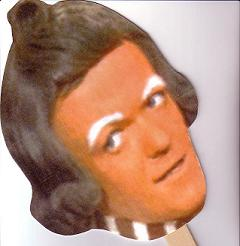

yea, i ....umm... think she is very very very beautiful and you are a genious because this game is the best and i would pay to have this game, it is so addictive and great..i love it....
btw, i was talking about Mare....lol
yea, it dont work for me either
When I submit a map, I'm just wondering, what does DDA stand for...that's it..Thank You!!
You have to go into editing mode to see it but it's half decent. Here's a link to Numa if you want to see it and get the level data!
http://numa.notdot.net/map/28384
http://numa.notdot.net/map/28384
I have a pic here, well just one that i copied from a screenshot but it's just one of my N Arts and I was wondering if there was either way to get it to you, because it won't upload here, and you could make my user name (all cool lookin and stuff) and with that pic below it or something..and whatever way you want it to be the coolest. Thanx!
I have a pic here, well just one that i copied from a screenshot but it's just one of my N Arts and I was wondering if there was either way to get it to you, because it won't upload here, and you could make my user name (all cool lookin and stuff) and with that pic below it or something..and whatever way you want it to be the coolest. Thanx!
hey sucker....this is what shows up...
Sorry, an error occurred. If you are unsure on how to use a feature, or don't know why you got this error message, try looking through the help files for more information.
The error returned was:
You are not allowed to upload that type of file as an avatar or personal photo
Sorry, an error occurred. If you are unsure on how to use a feature, or don't know why you got this error message, try looking through the help files for more information.
The error returned was:
You are not allowed to upload that type of file as an avatar or personal photo
I was wondering..it's only one enemy but what if you use mines for decoration and it can't kill N, do it still count as more than one enemy....get back to me ASAP plz! Thanx..
Here's my first, not even close to what you guys have... check it!
Around The World
Around The World
- My First -
1 Life to Live
1 Life to Live
How many maps can a person create and submit, and a mario based map??? what does it consist of?
Thanks
Thanks
This would be my 2nd submission...i think you will have fun getting all gold!
My Bubbles!
My Bubbles!
There should be differenet tilesets that you can use when building maps...so that you can create better and more challenging maps
Could we get together and please create something on Numa that the snipers won't be able to snipe our maps. It's obscene...like if you have a map that is being top rated...the next second it gets shot down and your map is now the worst. These snipers have to go. Here's a suggestion by Dasati: When you go into rate a persons map you should HAVE to leave a comment. Or at least your user name appears and your rating so that we know who is sniping and kick them off of Numa. Thanks for your time and I really hope we can do something about this!
One day two ninjas decided to go out to the shooting range and kill their banana's evil half-brother who was unicycling over an abyss. Suddenly, 469,000 pubescent gorillas came out of Hell asking for their adeptness. Tobias, the head gorilla, wielded moldy olive loaves with intent to annihilate Linus Ferguson, everyone's favorite bulemic undertaker. This wasn't saying much for Linus, because he was the only bulemic undertaker in the history of the world. Tobias was only throwing phones at the great big evil half-brother, who swiftly called collect. suddenly the telephone exploded. Then the
but cant we do anything about this? anything at all...im sure raigan or mere could??
I guess you guys are right. But I dont think its fair for users to do this, go up to a perfectly good map and decide to rate it low because he/she is jealous. Its just not right. But like you said, you cant do much about it. 
here's a link to my maps on Numa (duh!). I would appreciate if you took the time to rate them, thank you 
xdude's maps
xdude's maps
What Colour N Would You Like to be? Black
What Is He Doing? Dodging a laser beam (matrix style)
Were is he on the Map? anywhere suitable
Thanx dude!
What Is He Doing? Dodging a laser beam (matrix style)
Were is he on the Map? anywhere suitable
Thanx dude!
Sorry for putting a lot there but I need ratings.. Check them out please!
astheoceansblue
Numa
Changes
My Bubbles!
Weave
Outrun That Rocket
Happy Valentine's Day
Twister
Ded. to Numa
The Gates of Hell
Numa Rox
astheoceansblue
Numa
Changes
My Bubbles!
Weave
Outrun That Rocket
Happy Valentine's Day
Twister
Ded. to Numa
The Gates of Hell
Numa Rox
yea thats a great idea...you should have a choice of colours for the tiles...and for the different tiles, I have plenty of ideas in my head for new ones if anyone would like to see them...well thats all.
DO you have to make me choose!!?? lol...
Cake, Im sure there'll be many to disagree...
pizza or garlic fingers?
Cake, Im sure there'll be many to disagree...
pizza or garlic fingers?
PS3, sorry those controllers don't look convincing, plus I love the xbox/360.
ummm... Metanet Forums or Numa?
ummm... Metanet Forums or Numa?
OMG, that's awesome....failure and GW Bush all in one.. *sarcasm starts* No Way!! *sarcasm ends* 
yea i can think of at least 7 diff sets of tiles that would help make the maps a little better/easier during making them.
how about if we pick a certain date where all the users (at least try to) come to the forum so that we can set a new record on Metanet. Then the users that came could say that they were part of the record?!?! Like I said not a great idea, but an idea for sure... Thanks. 
The little blue blocks below your avatar..is that the title you receive for 200 posts...like one blue block for each 200 posts?? Because I was wondering how you get those blue blocks....lol..thats all!
OK...(it begins)... I don't have a clue how you guys know how to do everything:
-Work so well with photoshop(PS, I don't even have photoshop, could someone link me to a download)
-How you guys got your avatars and sigs so awesome(I don't know how to even create one/change it if I had one)
I just need help with a lot of stuff dealing with computers. I don't really know how to do anything besides the basics, well I have been using computers for like 6 years....but if you knew me...lol...like I'd love to learn these things you guys know and I'm just looking for some tips and some help to get me along! Thanks for helping (if you do).
-Work so well with photoshop(PS, I don't even have photoshop, could someone link me to a download)
-How you guys got your avatars and sigs so awesome(I don't know how to even create one/change it if I had one)
I just need help with a lot of stuff dealing with computers. I don't really know how to do anything besides the basics, well I have been using computers for like 6 years....but if you knew me...lol...like I'd love to learn these things you guys know and I'm just looking for some tips and some help to get me along! Thanks for helping (if you do).
Huh??!!QuoteSgt. Poptarts Posted on March 10, 2006 08:03 pm
Maple Story or Flyff?
What's a 0th?
Ok thanx a lot you guys... I gladly appreciate the help
Ohhh....so when n 1.5 is released we all should be here...lol Ok thanks, just pondering..
submit them both....yea, give everyone a chance, well I think?! 
yea i know about that button...lol But im sorry, didnt think of doing that. Thanks for the suggestion though.
My best was 1702....I hope that holds up!!
so...i downoaded Gimp and i have no clue how to use it, any help?
SWEEEEET check this one out unsermountable moan 
Another unsermountable pineapples
I think you can find millions with this unsermountable word, another here unsermountable duckling
i know that, i had already done a few, i just wasnt sure what you were talking about.. Flyff?? 
my last submission....Fountain of Hope
yea this map is really hard to get all gold...
and no i never got half way there yet...
and no i never got half way there yet...
T'is mah second submission: Pluperfect Subjunctive Mini
Teh Origional By whaleshow527: Pluperfect Subjunctive
Teh Origional By whaleshow527: Pluperfect Subjunctive
yea it says 16 wide and 12 high...
think this works GoogleWhack
Johnny's Gone for A Soldier In My Pants (a tad bit twisted)
Lovely Molly In My Pants
Without Me In My Pants
MY FAV - Yankee Doodle In My Pants
Eight Hours In My Pants
My Wild Irish Rose In My Pants (read that both ways)
Hero In My Pants
Bad Boy In My Pants
It's Too Loud In My Pants
Fat Lip In My Pants
I Do Whatever I Want In My Pants
Jenny In My Pants
My Lack of Updates In My Pants
Smooth Criminal In My Pants
The Tickle In My Pants
Everlong In My Pants
Come Back Down In My Pants
Girl Like You In My Pants
Blowin High Dough In My Pants
You And Me In My Pants
THIS GAME IS THE BEST!!!!
Lovely Molly In My Pants
Without Me In My Pants
MY FAV - Yankee Doodle In My Pants
Eight Hours In My Pants
My Wild Irish Rose In My Pants (read that both ways)
Hero In My Pants
Bad Boy In My Pants
It's Too Loud In My Pants
Fat Lip In My Pants
I Do Whatever I Want In My Pants
Jenny In My Pants
My Lack of Updates In My Pants
Smooth Criminal In My Pants
The Tickle In My Pants
Everlong In My Pants
Come Back Down In My Pants
Girl Like You In My Pants
Blowin High Dough In My Pants
You And Me In My Pants
THIS GAME IS THE BEST!!!!
ok it's Zelda, I think ..which one im not sure so here I go (not sure which one is for which system):
The Legend of Zelda
The Adventure of Link
A Link to the Past
Link's Awakening
Ocarina of Time
Ocarina of Time Master Quest
Majora's Mask
Oracle of Seasons
A Link to the Past Four Swords
The Wind Waker
Four Swords Adventures
The Munish Cap
The Legend of Zelda: Twilight Princess
..which one im not sure so here I go (not sure which one is for which system): The Legend of Zelda
The Adventure of Link
A Link to the Past
Link's Awakening
Ocarina of Time
Ocarina of Time Master Quest
Majora's Mask
Oracle of Seasons
A Link to the Past Four Swords
The Wind Waker
Four Swords Adventures
The Munish Cap
The Legend of Zelda: Twilight Princess
i could'nt get pass the 2nd fall...that's hard ......is it possible
when is this contest over again??
My 3rd, and last submission to this contest.
The origional is called Twitch City (Episode 70, Level 1) on the actual game, N.
This is my minimap of Twitch City - Twitch Mini
The origional is called Twitch City (Episode 70, Level 1) on the actual game, N.
This is my minimap of Twitch City - Twitch Mini
I was just wondering when the judging will start...or have you already started? 
Yea, sorry about not posting a game...I forgot about this and I wasn't sure if I was right anyway (even though I listed every Zelda game I knew...and I wasn't sure if there was only one for snes or not...shhh) So could I post a game now?? Or was I too Late??
also stuck on the third... are there only three levels?
Thank you very much...I will post one shortly!
This should be the easiest yet...Also my most fav!
Darnit...I said it was easy....and yes, it's Goldeneye 007 for 64! Such a great game.....ahhhh..... Your turn Evil___
HELP ME! lol....well I d/l'd it and it just shows the game..I can't play it, so how do I get it started??
ok...got it started
w00t w00t...best effort!! lol
I really like how you noticed that I did try my best and I will keep trying until I get that one-way defeated! Thanx a lot pembie
I really like how you noticed that I did try my best and I will keep trying until I get that one-way defeated! Thanx a lot pembie
I know this isn't going to happen but...it0hg2, I was wondering, if you do win and you would rather Gimp (which I can't use very well) could I possibly have photoshop??
darnit...I wanted a part  lol...nice job guys...maybe we should start up something like this more often...seems fun...and I shall make one soon....
lol...nice job guys...maybe we should start up something like this more often...seems fun...and I shall make one soon....
lol...nice job guys...maybe we should start up something like this more often...seems fun...and I shall make one soon....yes mcp3000...I want the fuc.......king judging to start as well...darnit  lol....I do though
lol....I do though
no swearing here.....sorry!!!!
lol....I do though no swearing here.....sorry!!!!
Whoever gets an all gold demo on THIS MAP first will get a dedication that I will spend at least 5 hours on! Not much but still something worth trying. And I mean a really great dedication of your choice! Here's an example of an N Art dedication I done for astheoceansblue - - http://numa.notdot.net/map/32573 . Please take this contest seriously.
If you ever get around to it....could I have a sig. If you do make me one, I would like xdude in any font (prolly dragonwick) in flames...and N in behind the letters....that would be greatly appreciated buddy
any picture?
10!! holy crap....any help with level 3?
OK...Not sure if you will be interested in this game, but still give it a shot, if you want. This is similar to Mare's 'Game Naming Game' but in this game you need to post a map from Numa....show any map at all (well show parts of the map, then reveal more as the person can't guess it). then whoever guesses it, then they post a map like I did...and so on.Thats it....Guess the map!
EDIT: [30+ views] + [no posts] = [shitty game ??]
Fine Fine....I'll put one there first!!
EDIT: [30+ views] + [no posts] = [shitty game ??]
Fine Fine....I'll put one there first!!
It pownz!
2 Pistols And Chainguns (2PAC)
Meah, I tried, didnt I?
Meah, I tried, didnt I?
theyre all great...i just dont know how you guys make the animated ones....awesome job!
I agree Atramentis, and In order to post a map...you need to guess the previous one. So it's Atramentis' turn now.
w00t w00t, people are starting to enjoi this game. And I believe you're right with guessing 'domo-kun FTW!!' by kruschGet back to the game ppl...I LOVE THIS GAME!!!
I do believe that is correct sir....and this game isn't has exciting has Mare's Game Naming Game because its just a one guess and you have it. But the pros of this game are great.... Well one, it isn't that boring because you have the excitement of finding the right map before anyone else. And two, when you find the map or if anyone else gets a chance to look at it, they can maybe get a chance to rate it! Which is always a great thing to do....back to the game, your turn Gangsta-Skorp. Also, if you know you have the map correctly identified, just go ahead and post another map. It's easy and there's no waiting around!
Holay Lard Of Ass!! I can't find this one anywhere!! I searched for about 20 minutes (so far). Still no match!
*Wonders if Gangsta-Skorp as altered this map in any way??!!*")
Plus, I really like how you only show a tiny bit of it, unlike me and the others...This makes it more challenging (duh) and then gives other people a chance to guess as well.
*Wonders if Gangsta-Skorp as altered this map in any way??!!*
Plus, I really like how you only show a tiny bit of it, unlike me and the others...This makes it more challenging (duh) and then gives other people a chance to guess as well.
hey, havent been to this thread in awhile....Thanks Rincewind SW for the part! Looks coolzorz!!
BTW...ma 50th post (yea not many, but w00t w00t)
BTW...ma 50th post (yea not many, but w00t w00t)
You just dont want me to have any success, you JeR(K), lmao jk!
Yea this isn't working too bad, rough start, but it's good now!
Yea this isn't working too bad, rough start, but it's good now!
I have a possible solution in finding the multi-accounters, easy really. Go to Numa, search all authors, then simply view the users that have no maps made. Then look at the votes placed.
For example:
'kaiki' Maps Made: 0 Votes Placed: 171 See here!
'legomeida' Maps Mad: 0 Votes Placed: 145 See here!
'computer333' (mocking computer222) Maps Made: 0 Votes Placed: 89 See here!
Get my point yet.....Anyway shouldn't this tell you that these accounts was created for the rating purpose only??!! So simply get Arachnid to delete this user...we know it has to be a multi-account. No one goes on Numa and rates 170+ maps and doesn't create any, that's what Numa is for...making maps and getting them rated and commented (isn't it) ....so there, we have a solution. Just go down through the list of users with 0 maps and say... 50+ votes and delete them.
For example:
'kaiki' Maps Made: 0 Votes Placed: 171 See here!
'legomeida' Maps Mad: 0 Votes Placed: 145 See here!
'computer333' (mocking computer222) Maps Made: 0 Votes Placed: 89 See here!
Get my point yet.....Anyway shouldn't this tell you that these accounts was created for the rating purpose only??!! So simply get Arachnid to delete this user...we know it has to be a multi-account. No one goes on Numa and rates 170+ maps and doesn't create any, that's what Numa is for...making maps and getting them rated and commented (isn't it) ....so there, we have a solution. Just go down through the list of users with 0 maps and say... 50+ votes and delete them.
Haha, hilarious!! rate it out of 10?? oh well 8/10
OMFG!! That joke pwns!!!! Holy crap dude thats hilarious! 10/10 no doubt!Here's another - Memory Problems
Three elderly ladies were discussing the trials of getting older.
One said, "Sometimes I catch myself with a jar of mayonnaise in my hand in front of the refrigerator and can't remember whether I need to put it away, or start making a sandwich."
The second lady chimed in, "Yes, sometimes I find myself on the landing of the stairs and can't remember whether I was on my way up or on my way down."
The third one responded, "Well, I'm glad I don't have that problem; knock on wood," she raps her knuckles on the table, then says, "That must be the door, I'll get it."
Before I start, I would like to say that I don't have Photoshop, just Gimp and I have no clue how to use it well!!
OK...here's the deal...If anyone would create me a sig the way I would prefer,
(Please) I will make them a dedication on Numa...not much but that's all I have to offer... OK I want my sig to look like this: My username (just xdude) in a cool font (dragonwick or something like that). I want some flames in a dark looking backround. And I want N to be in the flames, in behind my name OR have N on one of the letters in ma name! Now make it look cool ....or do as you like...Thanks!
EDIT: Photoshop...darnit
OK...here's the deal...If anyone would create me a sig the way I would prefer,
(Please) I will make them a dedication on Numa...not much but that's all I have to offer... OK I want my sig to look like this: My username (just xdude) in a cool font (dragonwick or something like that). I want some flames in a dark looking backround. And I want N to be in the flames, in behind my name OR have N on one of the letters in ma name! Now make it look cool
....or do as you like...Thanks! EDIT: Photoshop...darnit
Hey freakykiwi, your sig looks awesome!!! Just thought I waould say that...
haha...noice! 9/10
Seems were on the topic of nuns....
There were a few nuns in a room that they were painting for volunteer work. As they were painting away one nun came up with a great idea. She said "Seems we're all inside and no one can see us, plus these gowns are pretty new, why don't we just take them off so we won't get paint on them?!" So the other nuns replied "Yea, sure, that's a great idea!"
A few hours later a guy comes up to the door and knocks on it. "Who is it?", the nuns replied. "It's the blind man", he said. The nuns then whisper and talk it over, well seems he's blind, may as well let him in. So they let him in, and as soon as he walks in he says "Nice boobs ladies, where do I put the blinds?"
Seems were on the topic of nuns....
There were a few nuns in a room that they were painting for volunteer work. As they were painting away one nun came up with a great idea. She said "Seems we're all inside and no one can see us, plus these gowns are pretty new, why don't we just take them off so we won't get paint on them?!" So the other nuns replied "Yea, sure, that's a great idea!"
A few hours later a guy comes up to the door and knocks on it. "Who is it?", the nuns replied. "It's the blind man", he said. The nuns then whisper and talk it over, well seems he's blind, may as well let him in. So they let him in, and as soon as he walks in he says "Nice boobs ladies, where do I put the blinds?"
OMFG where do you get this awesome stuff!!!??? You pwn at jokes and funny stuff...10/10 of course... that other one about the guy in the bar is a 10/10 as well... sweet stuff ma man!!
here's the most hilarious car commercial ever!!
http://www.winterrowd.com/commercial.htm
here's the most hilarious car commercial ever!!
http://www.winterrowd.com/commercial.htm
Good point, I never noticed that but now you speak of it.. 
And this is what we need to look out for...all these clever ppl rating their own maps!! We just need a more secure system....
And this is what we need to look out for...all these clever ppl rating their own maps!! We just need a more secure system....
I have a comment!!!! It doesn't matter if you take your joke from a site, it's the fact that most of us probably never seen it before or heard it before. So it;s just for fun guys.... calm down, and post more jokes!!
Holy fawk!! They are amazing!!! How did you ever do that!! Honestly, I love themm.......God love you!
The second one: My least fav....but I still love it - feel the burn (awesome)
The first one: I love the flame and n a lot...2nd fav (my name isnt the greatest)
the last: My fav because it has an awesome flame and my name looks uber gear!! But n doesnt look as great...but still this one is the best and thanks a million man....wish I could do something like this...wish i could use photoshop...wish i had photoshop....too many wishes...anyway...thanks!!
Ok, one problem....how do I add this to my sig?? I know....stunned me....I bet it's real simple....
Yea, I made a map for you... macaddict_17
The second one: My least fav....but I still love it - feel the burn (awesome)
The first one: I love the flame and n a lot...2nd fav (my name isnt the greatest)
the last: My fav because it has an awesome flame and my name looks uber gear!! But n doesnt look as great...but still this one is the best and thanks a million man....wish I could do something like this...wish i could use photoshop...wish i had photoshop....too many wishes...anyway...thanks!!
Ok, one problem....how do I add this to my sig?? I know....stunned me....I bet it's real simple....
Yea, I made a map for you... macaddict_17
Pretty Sweet. I love the skeleton dude, and the background is noice as well! 8.5/10
I can now post in here. All thanks to macaddict 17 for making my sig. And a thanks to ShadowWolf for showing me how to add the image to my sig. (I know, I know. I'm not that bright)
I can now post in here. All thanks to macaddict 17 for making my sig. And a thanks to ShadowWolf for showing me how to add the image to my sig. (I know, I know. I'm not that bright)
I know how you feel buddy. I frickin Hate em...they have no right to screw your hours of work over! But we can't do anything about it, I already tried.. But yea, don't mind the ratings, just make maps out of enjoyment and the comments other users give you!
Thanks man!!! I know he wont make sigs for everyone, but macaddict 17 made this sig for me! What a great job eh?? I love it!
creativity - 2
originality - 5
simple ness - 5
color use - 4
forseeability - 7
personal - 5
TOTAL - 28
Like Adam said, this has been mentioned before, so the creativity dropped a bit there. Seemed a little simple and origional, but thats what all of the drones look like eh? But nonetheless, still a pretty good idea.
originality - 5
simple ness - 5
color use - 4
forseeability - 7
personal - 5
TOTAL - 28
Like Adam said, this has been mentioned before, so the creativity dropped a bit there. Seemed a little simple and origional, but thats what all of the drones look like eh? But nonetheless, still a pretty good idea.
Could I change mine to this below.... Well I was down at bottom doing that matrix thing....but now I moved myself right above Blazeraid and that group...Is that alright with you guys??
Sorry dude but this contest seems to be dead. I would try to beat the scores but I can never seem to get up through that one way. Maybe you need to remind everyone of it or just end it here??
Also, if you didn't know....You usually give someone a dedication if they do certain tasks on your map that you specified or if you just plain like that certain map maker.... ")
Ive never this map before, interesting....your turn Fimision!!
WOW....pretty neat...great job 9400!!
yep, it did go pretty quick...dammit!
Wow...guys I have just been banned!! For what?? I emailed Arachnid and I really hope that this was a mistake!! 
EDIT: OK Im back...phew...I was really worried...holy...
EDIT: OK Im back...phew...I was really worried...holy...
ok...could i put xdude instead of xdude_rox??
Ok. Recently on Numa, all of my maps have been sniped (all rated 0) so I have a little idea. Should I delete all of my maps and re-submit some of the same? (like some of my better ones) And if so, could I get you guys to respond back to this message and tell me which ones I should put back on Numa because I will be deleting them all.
I love Numa to the greatest extent, but I find it very hard making these maps for others to enjoy and then snipers go and ruin it for me. Therefore I find it very hard to deal with all of this and Numa. So if this keeps up any longer, I will have to quit Numa for good, but maybe check back every now and then. But I honestly can't deal with this. So many great mapmakers have quit already because of situations like this. I don't think we should have to deal with this kind of BS. And I'm sure half of you friendly guys out there are probably the ones behind this. But there's nothing we can do about it.
Thanks for your time.
-xdude-
I love Numa to the greatest extent, but I find it very hard making these maps for others to enjoy and then snipers go and ruin it for me. Therefore I find it very hard to deal with all of this and Numa. So if this keeps up any longer, I will have to quit Numa for good, but maybe check back every now and then. But I honestly can't deal with this. So many great mapmakers have quit already because of situations like this. I don't think we should have to deal with this kind of BS. And I'm sure half of you friendly guys out there are probably the ones behind this. But there's nothing we can do about it.
Thanks for your time.
-xdude-
Nice Capt...i tried using Gimp but I got nowhere with it...I dont know how to find everything i need in it!! help??
McP has it....do as he says and it'll be sweet!!
ok ok ok...no more threads about snipers...but i really hate this nonsense...but meah..
Thanks Gangsta-Skorp, but you really should'nt, I feel like I'm cheating then
Thanks Gangsta-Skorp, but you really should'nt, I feel like I'm cheating then
I wasnt sure where to post this...but here it is.
When I try to connect with my xbox how do I do it...because I tried and it didn;t work. Maybe Im doing something wrong.
I have wireless, so shouldnt it work when I run the ethernet cord from my laptop to the xbox?
When I try to connect with my xbox how do I do it...because I tried and it didn;t work. Maybe Im doing something wrong.
I have wireless, so shouldnt it work when I run the ethernet cord from my laptop to the xbox?
Any other way...like i dont need to use wireless....i can use the ethernet cord...so ho would i do it... I NEED HALO 2!!! lmao..help please
Is this what you mean for number 3?? If so, Mine's not working..and that's all that I can see missing..
http://www.geocities.com/cartmanconfused/N/l.htm
http://www.geocities.com/cartmanconfused/N/l.htm
You know where the white colored boxes say that you cheated.....well I have a few that are white. How did I cheat?
How can I get rid of it??
Here's how it goes.
The user that posts needs to post a link to a map which is their most favorite from the user who previously posted. But before you post, you need to go to the map the user before had suggested and rate it (well, it would be nice to rate and comment).
Simple terms: Just see who last posted. Check out the map they like. Then post a map of that user (who last posted) that you like the most.
This way we will get lots of maps commented on and rated.
So, I'll start with just a map that I believe is one of my favs!
Rocket Rocket Revolution By Sweep
The user that posts needs to post a link to a map which is their most favorite from the user who previously posted. But before you post, you need to go to the map the user before had suggested and rate it (well, it would be nice to rate and comment).
Simple terms: Just see who last posted. Check out the map they like. Then post a map of that user (who last posted) that you like the most.
This way we will get lots of maps commented on and rated.
So, I'll start with just a map that I believe is one of my favs!
Rocket Rocket Revolution By Sweep
Ill take his turn, seems no one is posting an image.
Try and get this one. It is easy but can you guess it because its a secret. But you will get it eventually!
Now I took this picture on my TV so it's not the greatest.
Try and get this one. It is easy but can you guess it because its a secret. But you will get it eventually!
Now I took this picture on my TV so it's not the greatest.
WOW...good guess TTK. But I don't know how you knew that so fast. This is a little glitch. You need to have to go to your settings on xbox, change all of the dates to 7 (anything that you can change it to) Then put in halo 2, go to Zanzibar, and the sign that's on the beach 9that always used to say "NO SWIMMING", is now changed to that sign that I showed.
Would be sweet if you made me an avatar!!
I didn't want to put this in messageboard games or contests, so here it is. Just put a caption for the following image and I'll judge (my opinion) who wins. But I will also take votes form you other users. Just reply which one you think is this best. This ends at the end of April. Get crackin'!
HAHA...so far so great! I really like Sketch's so far:
I would just change the "bites" to bytes....I think
Keep on going. As many guesses as you want!
Computer:And you think your job bites.
I would just change the "bites" to bytes....I think
Keep on going. As many guesses as you want!
Thanks very much for the avatar. And I know I have a sig, but could you put my name on that free sig?
wtg dude!!! Great work...wish I could get one
Where is the topic that has the new ideas for enemies on N??
Im sorry but this doesn't answer my question. There is a specific topic that has new 'enemies' that you can submit. Thanks for the help anyway.
Now...we finally caught one! Check this out...
Mutli Account!
Read the note by stepself (good job buddy), this tells us that he was probably signed in as his multi-account and forgot, then submited a map. This is where stepself caught the map on the first page, which was submitted by princess_sophie. Then Ben_Schultz_11 realized that he had made a big screw up, then deleted the princess_sophie map, and submitted it again under his name and changed the name of the map.
Definately a multi-account! No doubt. Please check into this Arachnid. (I will also email him about this)
Mutli Account!
Read the note by stepself (good job buddy), this tells us that he was probably signed in as his multi-account and forgot, then submited a map. This is where stepself caught the map on the first page, which was submitted by princess_sophie. Then Ben_Schultz_11 realized that he had made a big screw up, then deleted the princess_sophie map, and submitted it again under his name and changed the name of the map.
Definately a multi-account! No doubt. Please check into this Arachnid. (I will also email him about this)
Sorry for all the chaos everyone. But I just don't want multi-accounters on Numa. Unless you just had an old account and you made a new one and not planning to use the old on. In that case, couldn't Arachnid just delete your other account?
Anyway, I'm sorry for getting BS11 banned, but if you look at all of the comments princess_sophie has and how easily BS11 could get his (imaginary) sister to rate all 5's. You never know, he could easily be, and possibly is, a multi-accounter.
Sorry for everything if I'm in the wrong here.
Anyway, I'm sorry for getting BS11 banned, but if you look at all of the comments princess_sophie has and how easily BS11 could get his (imaginary) sister to rate all 5's. You never know, he could easily be, and possibly is, a multi-accounter.
Sorry for everything if I'm in the wrong here.
I know I havent been a great help to you Ngaged. But I'm sure you've inspired me a many times. I hope you have a great life and I really hope you get back here soon. Farewell and God bless.
Thanks Sweep. You're a great person.
I never meant for anyone to think I was trying to get rid of such a great map maker on Numa. Yes, BS11 is an awesome map maker and probably would have no reason to rate his maps up. But this gives no reason why he still wouldn't!
I just hope the best comes out of this. I'll stay out of this from now on, just trying to get the rest of you away from these multi-accounters.
I never meant for anyone to think I was trying to get rid of such a great map maker on Numa. Yes, BS11 is an awesome map maker and probably would have no reason to rate his maps up. But this gives no reason why he still wouldn't!
I just hope the best comes out of this. I'll stay out of this from now on, just trying to get the rest of you away from these multi-accounters.
Here you go
City Lights
The first thing that came to mind when I read Starry, Starry Nights was the city. Don't know why, but it did.
City Lights
The first thing that came to mind when I read Starry, Starry Nights was the city. Don't know why, but it did.
So, everyone...If you could help me out and choose a winner, could you please do so.
Just give one of your favs., and out of that list, I will choose my fav.
Just give one of your favs., and out of that list, I will choose my fav.
^banned for putting a gopher in such a harmful environment (well it sure looks like he's in the war)
Banned for being wrapped in a nanner.
Woot....Never noticed that Cheese had released this to you guys yet.
Great job with everything Cheese.
I would just like to say many thianks to Cheese_God and Evil___ for everything they did. They helped me out a lot and they made all of this possible. Especially Cheese, he done a lot for me and Evil___, he was the one who done all of the dirty work and got all of this ready for you guys. So thanks to you both.
And at last, I hope you all enjoy these fun filled maps. Plus, you should try a few different ones, not just the beggining. Cheese sure put these together well and made the last ones the best. I hope there's a challenge out there somewhere.
~xdude~ .....Brian
Great job with everything Cheese.
I would just like to say many thianks to Cheese_God and Evil___ for everything they did. They helped me out a lot and they made all of this possible. Especially Cheese, he done a lot for me and Evil___, he was the one who done all of the dirty work and got all of this ready for you guys. So thanks to you both.
And at last, I hope you all enjoy these fun filled maps. Plus, you should try a few different ones, not just the beggining. Cheese sure put these together well and made the last ones the best. I hope there's a challenge out there somewhere.
~xdude~ .....Brian
QuoteAttached File ( Number of downloads: 61379 )
Attached File Teleporter_Tutorial.zip
Posted: September 10, 2004 03:16 am
QuoteAttached File ( Number of downloads: 89 )
Attached File TheRevolution.txt
Posted: June 28, 2006 07:34 pm
It takes time guys.... And I think Cheese and I are just proud that people are enjoying this. Not sure where Evil___ is to.
Not meaning to be mean.....just saying.
I have the ones that arent so good.
Wow...I'm still not sure if you were joking....either that or you are an awesome joker. Damn, I thought you were serious. I hope you weren't. This took some time and we tried our best. I had to move home and didn't have the net for 2 months and that made everything so hard for me. I couldn't submit maps or try to help out the guys. But we tried our best and I love it!
LOL...sorry guys, he did it all himself. Not saying that in a bad way, just saying he had no help. Sorry, it's not Cheese's fault. He done a fantastic job.
Sorry guys...I had forgotton all about this. I moved half way through this game.
I think...and by quick decision, that yahoozy_Guacamole wins the ded!
I think...and by quick decision, that yahoozy_Guacamole wins the ded!
he could be nevermore.
NOT ANOTHER ONE OF YAHOOZY'S STUPID NAND DRONE MAPS!!
ARGH!!
Crazy demos....you laugh at him...but yet, can you beat these demos??
JK...but very nice Cheese
JK...but very nice Cheese
WTF!!
You needed another person and my name wasn't even mentioned!!!!!!
lmao, jk. I would love to be in another one if I am welcome, and yes, I know, my maps aren't the greatest. But what the heck, I love making maps!
You are all doing a great job so far.
You needed another person and my name wasn't even mentioned!!!!!!
lmao, jk. I would love to be in another one if I am welcome, and yes, I know, my maps aren't the greatest. But what the heck, I love making maps!
You are all doing a great job so far.
Just press r to reload the map, then press p to play it.
To record a demo, press 1 before you press r.
Then copy/paste your map/demo data into Numa.
To record a demo, press 1 before you press r.
Then copy/paste your map/demo data into Numa.
As Sweep and 47 said, to get rid of the lag noises. My lappy is a bit fast too, but it still makes the repetitive laser drone noises. Darn laser drones. 
Whats this all about?
^ avatar dude has herpes
^says people are mean
I've come to realize that I'm sort of addicted. I go on Numa and play the user created maps at least 5 times a day.
^ A wolf who plays games, I suppose.
^Thinks he's the man.
^must think I'm someone else on Numa....better maps?
as Ninja12345 said, and I was thinking... Break dancing would be sweet.


You, you, you can't go!!
Well you do have a life, and I'm very close to leaving as well. Soon, I had already thought of it. Life is so much more and we all have dreams, you won't be able to do much sitting at your computer everyday. You were/are a great friend Cheese, I still don't know your real name (not that it matters too much).
God bless and I hope to see you back on Numa when you have free time from your wonderous life ahead of you. Good luck and thanks for everything.
- Brian
^Got his sig from Friek
(also, yes spiker, I was kidding, just saying I'm not that great in Numa )
(also, yes spiker, I was kidding, just saying I'm not that great in Numa
)^Def isn't a penguin that's called Patsy
Damn prize crap!!!
I hate those, nice, 8/10
I hate those, nice, 8/10
WOW....frickin WOW...Im stoked!!!!! This is insane, I don't know what to say. I love xbox and N would be fkn awesome on it!!
I was just about to ask what the new banner was about.
SWEEET!!!
I was just about to ask what the new banner was about.
SWEEET!!!
Wicked...I'll join when I get home on my computer.
11.5
Here....if everyone plays this game, we will get plenty of more clicks and you can have fun doing it!!!
http://metanet.2.forumer.com/index.php?showtopic=11711
http://metanet.2.forumer.com/index.php?showtopic=11711
I have one thing to say, Methodic.
He joined Numa, he was amazing.
EDIT: ^dejablue4, another great map maker joined awhile ago.
He joined Numa, he was amazing.
EDIT: ^dejablue4, another great map maker joined awhile ago.
I always end up making action as well.
Yet again, I love N Arts.
Yet again, I love N Arts.
3-Quarters def is, by the way his maps are rated. Not too sure about Remote, but a good possibility.
Later again, good luck with everything. Don't do anything stupid, you seem pretty pissed.
You were awesome to me, and many more. A great map maker.... gone again.
You were awesome to me, and many more. A great map maker.... gone again.
Yea, sorry. I didn't even get a chance to d/l it.
If you could PM me it, that would be nice.
If you could PM me it, that would be nice.
I totally agree with pariah, Loudog and atob are the biggest multi-accounters ever!
Lets contact Arachnid right away. Anyone with me?
Lets contact Arachnid right away. Anyone with me?

Something along these lines...
Pretty hilarious....
9.7/10
9.7/10
Freakykiwi would make a cool one, if he joins.
Just check out his site below.
Just check out his site below.
I only have one suggestion sorry. I'm also not sure if it had been mentioned yet.
But when you're in N-ed, you should be able to view what your map looks like in thumbnail. That would be great. It would help out a lot for those with N-Art and tilesets.
But when you're in N-ed, you should be able to view what your map looks like in thumbnail. That would be great. It would help out a lot for those with N-Art and tilesets.
I was just wondering, who do you think does the best demos on Numa?
I would have to get back to you on my decision.
I would have to get back to you on my decision.
Sweet... yea, Loudog does make really nice demos. Haven't seen any from iangb yet. After awhile, I may make a poll containing the top 5 mentioned here. If you all think it's a good idea. Or this might just be good enough.
Quite the fascinating demo from ianb...
And I'll also add, I've never seen many from 9400.
And I'll also add, I've never seen many from 9400.
Pretty much self-explainatory, just slap the next poster with anything you wish.
Slaps next poster with a llama.
Slaps next poster with a llama.
Slaps next poster with some broccoli.
* Can you slap me with myself?? *
* Can you slap me with myself??
*YUM! (milkshake post)
Slaps next person with an enormous bendy straw.
Slaps next person with an enormous bendy straw.
Slaps next person with an enormous bendy straw.
EDIT: crap... do what?
EDIT: crap... do what?
No, unless by elbow you mean....
Have you ever looked at a relative in the wrong way?
Have you ever looked at a relative in the wrong way?
Wish I could make a map that could be top rated
Another word for Paris Hilton.
rigamortis
rigamortis
Another simple idea. I'll start and post a question and you the next poster will answer, either truthfully or very obcenely, pretty much however you want.
RULES:
- One question per post.
- No double posts.
- Post sensible/reasonable questions.
Have fun!
Here goes...
What are you up to?
RULES:
- One question per post.
- No double posts.
- Post sensible/reasonable questions.
Have fun!
Here goes...
What are you up to?
Very nice, I find Gimp hard to use.
I'm poor, still lives with my mother. Parents got divorced the week I started High school. I live in a town where there's absoulutely nothing to do. I'm always depressed because everyone around me can get what they want and whenever they want it. I owe $14, 000 to a student loan; to which I wasted going to universtiy and never got anything out of it. My family drinks a lot and can never save money, then again, what money, Im poor.
The only thing I do have is my laptop; which consists of N. I also have my prize possesion, my girlfriend. If it weren't for her guys, I'm sad to say, I wouldn't be here today. She's what keeps me alive. Honest. My life is horrible and I have nothing to live for but her. I love her with all of my heart. She has been away now for a month at her hometown and I miss her very much.
That's what I have to brag about. Later.
The only thing I do have is my laptop; which consists of N. I also have my prize possesion, my girlfriend. If it weren't for her guys, I'm sad to say, I wouldn't be here today. She's what keeps me alive. Honest. My life is horrible and I have nothing to live for but her. I love her with all of my heart. She has been away now for a month at her hometown and I miss her very much.
That's what I have to brag about. Later.
Looks cool. Very nice.
I would like one when you get around to it please. Anything with fire/xdude
I would like one when you get around to it please. Anything with fire/xdude
Sweet, great level!
Speedy demo
Speedy demo
272:35782656|35791394|35791394|35791394|35791394|35791394|35791394|16777216|17895697|17895697|33554449|35791394|33554434|73821730|71582788|17476|17825792|17895697|16777216|17895697|17895697|17|0|16777216|273|33554432|2|16777216|4369|35791392|35791394|107405858|107374182|107374182|107374182|107374182|107374182|107374182|6710886
Holy 5'11'!!!
Geesh. I also love my family!!!!
Geesh. I also love my family!!!!
Very nice work dude.
Love 'em all!
Love 'em all!
The only picture I could find of myself.

Haha, nice urrmm... video.
Yea, I will post a picture someday, and I mean someday. No need for the suspence.
Yea, I will post a picture someday, and I mean someday. No need for the suspence.
OK, here it is. Yes, me me me me me. Finally.
Laugh all you want, I can't hear you.
My hair needs a cuttin', I look 15, thus I'm 20, and my girlfriend is in it too. Enjoy.
Laugh all you want, I can't hear you.
My hair needs a cuttin', I look 15, thus I'm 20, and my girlfriend is in it too. Enjoy.
Just wanted to ask, what do you think of it?
I have it inverted, so it looks better.
I have it inverted, so it looks better.
Why thank you. I love my hair as well, and my girlfriend.
Yea, bored in school. It is Volcom, with pen and a notebook. I said I inverted
And my friend burned a part, so I burned the rest.
And my friend burned a part, so I burned the rest.
Hahaha, xnude.
Quote<Ultima> Name your next map: I AM XNUDE, LORD MASTER OF ALL THINGS NUDE!
Do me!
Ahh, I mean, can I have a sig?
Ahh, I mean, can I have a sig?
Woah, pretty good guys.
Sorry, I didn't say what I wanted.
Anything with Ice/Fire and N. With xdude somewhere too, thanks.
Anything with Ice/Fire and N. With xdude somewhere too, thanks.
I just made an image on Art Rage bt it wont let me post it.. Any help?
You are awesome at this.
Could you make me one with flames or ice and xdude in the bottom right in the coolest font.
Could you make me one with flames or ice and xdude in the bottom right in the coolest font.
I want my monkey drone!The monkey drone can lay out banana peels which N slips on and breaks his skull.
Please.
Not sure what exactly it does though... Maybe it could just fly around randomly and fire bananas at N?
Wow that was random.
Oh, sorry dude. I didn't know.
Well, keep up the good work anyway.
Well, keep up the good work anyway.
I want to start over new, how do I delete my .sol file?
Just thought I'd try something out. It looks best in the small image size, looks good though.
Clicky Clicky
Clicky Clicky
Yes please.
Oh, crap. Probably so. Sorry about that. One sec, I'll post it.
*One second later*
Nope, not working.
Edit: One moment, I'll do that now.
OK, go Here ...or... look at the thumb below

*One second later*
Nope, not working.
Edit: One moment, I'll do that now.
OK, go Here ...or... look at the thumb below

I'm not too sure how to actually put it into notepad and send it here, like, how do I provide a link?
EDIT: But, for now.
EDIT: But, for now.
OK, cool.
Sweet!!!! Nice sig/add on!
Sweet!!!! Nice sig/add on!
Haha, that's pretty cool. Good Job!
Not sure if you have heard of this before, but it's tons of fun.
Here's an apple I did, you can speed it up by scrolling the speed control over at the top left in the bluish menu.
http://artpad.art.com/gallery/?j664kw1bfmgk
Here's an apple I did, you can speed it up by scrolling the speed control over at the top left in the bluish menu.
http://artpad.art.com/gallery/?j664kw1bfmgk
Wow... 2nd place!! YAY!
Congrats to all who won, and all of those who made maps for this contest. Thanks.
Congrats to all who won, and all of those who made maps for this contest. Thanks.
Simple, yet still nice.
Yep. Make me one with flames or ice and with xdude in it.
w00t w00t
Thanks guys.
Thanks guys.
WOW. Good job guys. Nicely done valian!
This could start something good. A contest to see who can draw the best N game situation??
This could start something good. A contest to see who can draw the best N game situation??
I know Im a pest, but you couldve done mine red or black. Brown?? lol
Thanks CTB!
Thanks CTB!
Could you make one with Halo 2 in it?
Stating that Im a player/obsesser!!??
Something like this colour below.
Stating that Im a player/obsesser!!??
Something like this colour below.
NOOOOOOOOOOOOO!!!
I shall Hunt him down!!
I shall Hunt him down!!
w00t w00t... Thanks man, looks great!!
Looks awesome. But I would never know how to do it.
Sweet man, thanks.
See you man. Have fun and make sure you come back!!
I know this is about getting you to make avatars, but I just wanted to show my new one, I made it myself. If you only knew how much I suck at computers, I'm proud of that little animation.
w00t w00t!! Exactly. I love them all as well... You're doing awesome man!!
Keep it up!
Keep it up!
Nope, as rennaT said.
And wow, cool Trogdor, Elaxion.
And wow, cool Trogdor, Elaxion.
I did read it, I suck.
I'm not great with all of this. I need better instructions, if that's possible.
No offence, you have it well done, it's just that I'm still not sure how to do it.
I'm not great with all of this. I need better instructions, if that's possible.
No offence, you have it well done, it's just that I'm still not sure how to do it.
Yea, I simply used Gimp.
What do you think? A little plain I know, but I'll get better.
Scroll down please....
Scroll down please....
Here. A Halloween back for you from Vladstudios.
I concur.
Here it is!!
I have Photoshop CS, I was just wondering if you have any great tuturials you could site me to or help me out in any way possible. Thanks before hand and I appreciate all of your help.
I would just like to know how to make awesome sigs in general. But anything else would be great.
I would just like to know how to make awesome sigs in general. But anything else would be great.
Sorry that it was so big. What about now?
I made it 25% smaller. And... I rearranged it.
I made it 25% smaller. And... I rearranged it.
Thanks.
Yes.. CS...
So I'm guessing CS2 is better. Darn.
So I'm guessing CS2 is better. Darn.
I have Gimp, but I do believe that Photoshop is better.
Plus, like LV said, say nothing about piracy
And.... maybe it was free
Plus, like LV said, say nothing about piracy
And.... maybe it was free
Mine was from this thing we call Limewire.
I made my sig, but I still don't even know the basics. I would like some help if that could be possible. Like a tutorial on how you made yours??!!
Nice idea Azmilion,we could make a level out of the art, once this is done, we could start a different idea. Like N in action, or simply anything at all.
Photoshop.
Any help would be greatly appreciated. But please remember, I'm a begginer. That's why I want help from you guys, all of those tutorials are for people that know hwere the tools are to. I don't know where thery're all to. Thanks.
Any help would be greatly appreciated. But please remember, I'm a begginer. That's why I want help from you guys, all of those tutorials are for people that know hwere the tools are to. I don't know where thery're all to. Thanks.
Very nice. Great job.
Sorry I had to double post, but I thought it was kind of important.
This is my first (alright) sig. Well, I kind of got the hang of it, thanks to Luminaflare and Freakykiwi. Plus, I never had a good font to work with, but I worked with what I had. And... I put maple leafs in it, just to show that I'm Canadian. Hope you like it.
If you would like to see it, click the link below. If you are too lazy, it will be my signature very shortly.
xdude sig
This is my first (alright) sig. Well, I kind of got the hang of it, thanks to Luminaflare and Freakykiwi. Plus, I never had a good font to work with, but I worked with what I had. And... I put maple leafs in it, just to show that I'm Canadian. Hope you like it.
If you would like to see it, click the link below. If you are too lazy, it will be my signature very shortly.
xdude sig
Nice. A bit bland though. 7.5/10
Nice sig. I love it. 9/10
Haha, thanks. Nice sig as well. 8/10
I liked the blue rose better.... sorry.
I liked the blue rose better.... sorry.
And that one would be?? 7/10
Well you sir, have an effed up computer. It's fine for me.
7
7
Cool. If you clicked 'Freakykiwi Design', you would've known what it was. Oh well.
7
7
Outline..Pixelated??11! Sorry, you will need to show me how to do that one. And I noticed I have it all saved into the one layer. Poop. Yea, I need the font better.
What about this.
What about this.
 yahoozy!
yahoozy!and as before, noice! 9/10
Wow. I'm shocked, to see another great mapmaker leave us. Yet, a great friend. You were awesome dude.
*Wipes away tears*
I loved your maps man, you rocked. I hope you will come back for a glance every now and again. Have a great life and take her easy. If she's easy, take her twice. If she's that easy, call me.
Off Topic: I would just like to add that I'm in the same boat as McP and cw. I am really leaving soon, very soon. Just to let you all know right now. This is starting to irratate me over and over. I need to start my life over, I need to regain what I had before Numa. Another main reason is that I now have Photoshop and I will be spending long ours at, I always wanted to be an artist of some-sort, and this really interests me. Good luck all, but I'm not left yet.
*Wipes away tears*
I loved your maps man, you rocked. I hope you will come back for a glance every now and again. Have a great life and take her easy. If she's easy, take her twice. If she's that easy, call me.
Off Topic: I would just like to add that I'm in the same boat as McP and cw. I am really leaving soon, very soon. Just to let you all know right now. This is starting to irratate me over and over. I need to start my life over, I need to regain what I had before Numa. Another main reason is that I now have Photoshop and I will be spending long ours at, I always wanted to be an artist of some-sort, and this really interests me. Good luck all, but I'm not left yet.
Ok, thanks guys.
So, I can get those brushes form a site right? Just download them.
So, I can get those brushes form a site right? Just download them.
OK. This is how it is.
I don't have much time to do this a lot. So, you can request a sig, even though I'm just learning how to use PhotoShop. Please make sure you're patient, I don't have a lot of computer time during the day, unless I have the day off.
Just tell me which render*, colours, text and font. I will try my best. But, every now and again I will do random ones (UpForGrabs) and the first to post asking that they want that sig will get it. I'll just add text.
*Render - A render is simply the main image of the sig, the foreground.
In Line:
- DejaBlue -done-
- GodOfTheRedMoon
- Brttrx -done-
- MoD -done-
- a-caridi -done-
- Element99099 -done-
- Psycho_CO -done-
- Bluenin -done-
- Django
- MysteryPower
- Homestar Runner -done-
- Obby
UpForGrabs #1
 - taken by Brttrx
- taken by Brttrx
 and avatar
and avatar 
UpForGrabs#2
 - taken by BritanniaWD
- taken by BritanniaWD
UpForGrabs#3
 - taken by a-caridi
- taken by a-caridi
UpForGrabs#4

UpForGrabs#5
 - taken by me
- taken by me
JustOneForKim

Dejablue's
 and avatar
and avatar 
I don't have much time to do this a lot. So, you can request a sig, even though I'm just learning how to use PhotoShop. Please make sure you're patient, I don't have a lot of computer time during the day, unless I have the day off.
Just tell me which render*, colours, text and font. I will try my best. But, every now and again I will do random ones (UpForGrabs) and the first to post asking that they want that sig will get it. I'll just add text.
*Render - A render is simply the main image of the sig, the foreground.
In Line:
- DejaBlue -done-
- GodOfTheRedMoon
- Brttrx -done-
- MoD -done-
- a-caridi -done-
- Element99099 -done-
- Psycho_CO -done-
- Bluenin -done-
- Django
- MysteryPower
- Homestar Runner -done-
- Obby
UpForGrabs #1
- taken by Brttrx and avatar UpForGrabs#2
- taken by BritanniaWDUpForGrabs#3
- taken by a-caridiUpForGrabs#4
UpForGrabs#5
- taken by meJustOneForKim
Dejablue's
and avatar Ok. Perfect. I will get on that. Well, tomorrow.
Awesome!! I voted... Thrice.
Edit: Congrats on the posting Smartalco.
Edit: Congrats on the posting Smartalco.
@ GodOFTheRedMoon
I will try, but I'd doubt I will get close to it.
@ Brttrx
I know, my name is there to show that I made it.
Edit:
Here's Brttrx's, his was easier to do because I had it made.
Let me know if you want it changed.
I will try, but I'd doubt I will get close to it.
@ Brttrx
I know, my name is there to show that I made it.
Edit:
Here's Brttrx's, his was easier to do because I had it made.
Let me know if you want it changed.
Fine with me. No problem dudes.
@ Brttrx... the same text and style as your sig?
Well... here.

@ Brttrx... the same text and style as your sig?
Well... here.
No problem MoD.
I added what render means in the first post. A render is simply the main image of the sig, the foreground. So for example, in MoD's sig, the render will be a monkey.
I added what render means in the first post. A render is simply the main image of the sig, the foreground. So for example, in MoD's sig, the render will be a monkey.
I downloaded some brushes and I added them to my PS folder. I still can't use them when I'm using PS. What am I doing wrong?
Wow. Thanks Luminaflare. Worked great. I'm assuming you do the same for fonts.
CTB, I done that but the fonts I added never showed up in Photoshop.
That's similar to this situation.
Just happened on this thread.
online online

Just happened on this thread.
online online
Simply post a picture of your pumpkin. I made this in an hour, not too bad I guess.

Wow. Can you explain it better, I know you did explain it well, but I'm not too postive on what to do.
Ok, it helps a little more. Sorry, I'm slow with this stuff.
Not sure where cubism filter is too though.
Thanks a lot though elaxion.
Not sure where cubism filter is too though.
Thanks a lot though elaxion.
Well, that looks great. I'll see what I can do.
It's for photoshop.
No problem.. working on it now.
Edit: Dejablue's sig is now done, I will do the avatar tomorrow.
Edit: Dejablue's sig is now done, I will do the avatar tomorrow.
Not too bad - halo font
Shoot. I only see this now. And plus, DDA and race, urmm. Maybe this wasn't for me. I'll just stick around for the final results.
I have that font
Yea free hand. But I did look off of an image/picture. It was baout 2'' x 2'' big, so I actually am pleased with this one.
Hey.. I'm up for it. Just give me a little time that's all. Well, I don't have lots of talent, but some I guess.
Double post, I know.
AnotherForMyBeautiful

AnotherForMyBeautiful
Weel I guess I can just make another one with those colours if you still want it.
And sorry a-caridi, I had it made as soon as you asked, but this site was down.
Here:
 and avatar
and avatar 
And sorry a-caridi, I had it made as soon as you asked, but this site was down.
Here:
and avatar Ok, I have you in queue, however you spell that.
This is what I made before I seen the post.

---------others---------
Halloween - Hope you can see the reaper

BrittaniaWD'sRequest

GodOfTheRedMoon

This is what I made before I seen the post.
---------others---------
Halloween - Hope you can see the reaper
BrittaniaWD'sRequest
GodOfTheRedMoon
Oh trust me, FK is awesome at graphics. He just wants something different I guess, just something offset from the rest of the images, just to show some creativity. Or maybe he just wants a few good ideas.
I thought I would try, seems I only had PS for about 10 days.
wow!
Pretty cool. 8.5/10
Cool dude. I see you're really good at these. Keep it up.
Another one done...
Monkey_of_Doom
 and avatar
and avatar 
Monkey_of_Doom
and avatar Hehe.. Why thanks for teh awesomeness!
Urmm... I think here: Brushes
The brush is called Faux Finish.
Urmm... I think here: Brushes
The brush is called Faux Finish.
Mine.

Cool, 8/10.
Sorry that I don't have yours done yet. I'm really slow.
Sorry that I don't have yours done yet. I'm really slow.
Oooohh.. Nicely done 'TL'.
I think you saved the image as something else. It looks way fuzzy now and not as shiny.
Looks nice. I'd say 9/10 if I were to rate it.
I love this pack to death!
What are your best on certain maps? (Demos below)
00-4 Ravine 132.725
01-1 Falling up 132.325
What are your best on certain maps? (Demos below)
00-4 Ravine 132.725
01-1 Falling up 132.325
Numa? Is that the song Numa?
Sorry I have no clue what your talking about.
I said no.
Sorry I have no clue what your talking about.
I said no.
I wouldn't buy it, sorry. Make one that has mines and grey legos surrounding him in a game.
Well, you could try.
Well, you could try.
Wow. I impressed with zaptk's highscores. Very nice.
I keep trying and trying, I hope to get one soon. I don't care if it's a 20th!
I keep trying and trying, I hope to get one soon. I don't care if it's a 20th!
Really? I wish I had a hobby. Such as yours I mean. All I do is work and sit on this chair of mine. Booourns.
I use ctrl. Ever since I started, that shift key kept pissin' me off. Shift lock or whatever used to pop up all of the time. So, the closest, most comfy thing that was sitting next to it is what I moved to. Never thought of the up arrow. I must try that.
Sounds good to me dude. I'm in.
Oh, McP actually posted before me. Well, he did I swear. I was referring to him and I didn't really double post. He had a post in between. That's weird, where did his post go?
He had McP on the bottom of the door.
He had McP on the bottom of the door.
O_o
Monkey of Doom preferred a better font and MoD in his avatar instead of M_o_D.
So, here's the final result.
 and avatar
and avatar 
Monkey of Doom preferred a better font and MoD in his avatar instead of M_o_D.
So, here's the final result.
and avatar Apologies to Django, since he was here earlier then Element99099. I just need to get a good idea for yours Django.
Here's Element99099's.
 and avatar
and avatar 
Here's Element99099's.
and avatar Dear Smitty....

Cool. Glad you like them.
Cheers

Sure thing. I have you in que.
EDIT: I just made this by looking at a tutorial, neato!

UpForGrabs#6

Made myself a sig tag.

EDIT:Psycho's is done
 and avatar
and avatar 
EDIT: I just made this by looking at a tutorial, neato!
UpForGrabs#6
Made myself a sig tag.
EDIT:Psycho's is done
and avatar They all look good, but I would still rather the blue, unless you can change the colour of Sonic in the first two. The orange does stand out though.
*picks blue*
*picks blue*
Teh white text'd one for me.
Sure man. In que.
I whipped up something quick for ya.

Something else I just made.

I whipped up something quick for ya.
Something else I just made.
Awesome. I could always do another if you want. Plus, I'll make you the avater tomorrow sometime if you'd like.
EDIT: Heh, did one for a friend.
Down Brttrx, bad boy. This is not your sig! It may look like it, but no! Well, actually, I can modify it for you if you'd like.

EDIT: Heh, did one for a friend.
Down Brttrx, bad boy. This is not your sig! It may look like it, but no! Well, actually, I can modify it for you if you'd like.
If he wants it, he can surely have it.
I'm definately in.
Last one's mine! Please.
Here ya go...

Off topic: WOW! Nice sig Britannia! I mean the one you have now, not mine -
Off topic: WOW! Nice sig Britannia! I mean the one you have now, not mine -
You're very welcome BWD.
Just post what you want MP. Then I'll get on it.
Also, Django, could you give me more of an idea of what you want. Sorry, I just can't get a groove for yours.
Just post what you want MP. Then I'll get on it.
Also, Django, could you give me more of an idea of what you want. Sorry, I just can't get a groove for yours.
Overboard!!
9/10, love it.
9/10, love it.
Ok. Sorry for the wait so far.
I will giv'r!
I will giv'r!
Like the one you have now?
Heh. Ok. A dollar? Nah, that's fine.
OK, I'll try my best.
Yep, definatley Mambo #3.
*music kicks in*
*I dance*
*music kicks in*
*I dance*
Ok. Fine and dandy. Nice sig by the way.
The first few that comes to mind are:
BritanniaWD
Chasethebase
Luminaflare
Freakykiwi
Limer
Pembie
And.. I feel like there is someone else.
EDIT: Jakel, his sigs are awesome!
BritanniaWD
Chasethebase
Luminaflare
Freakykiwi
Limer
Pembie
And.. I feel like there is someone else.
EDIT: Jakel, his sigs are awesome!
ay me, I love it!
and I really want to keep my imaging reputation. anybody PLEASE feel free to email e @ freakykiwi.art@gmail.com , seriously
whats so amazing about sig count? i could make billions with so many differrent ideas... but I make one I love and stick to it! how ever many sigs youve made should contribute nothing, it's the quality.
BritanniaWD does do to many NFS ones, infact I dont think Ive ever seen any other ones... aside from obby's 5 min sig.
Pembie I like, but they are to mono-coloured. alot of them are greeny-yellows, unless hued.
CTB has a coloured vector, in my opinion is misusing vector. and the renders are so... contrasting and out of place.
Lumin be legend with vector. no questions asked
who else?
Elaxion: his reputation by me is absolutely CRUSHED AND SMASHED AND PULVERISED by his sh*tty avatars and annoying norm.
Limer? He got publicity through WD, so not impressed... yet.
Aju? WD said he had a hot sister...
Reamer. NOPE
now I add bold tags to all the names
Oh yeah Toplord: definitely NOT
whats so mentionable about you, Zres?
I'm tired so I'm harsh or praisful, to the extremes.
~Harley
Wow. Harley? Is that you? Dude, I thought you were an awesome guy. Well, still do. But this is a bit harsh man.
EDIT: Off topic - Thanks for the mention Jakel. I appreciate it, but I'm just a begginer.
Nice desktop Twilight Lair!
*steals*
Where do you find those type of backgrounds? Or did you make it?
*steals*
Where do you find those type of backgrounds? Or did you make it?
Sweet. I'll be on whatever team needs/wants me.
Ok. Travix it is.
Awesome. What Limer said, and nice job.
Yea, he's awesome at imaging.
Plus, I haven't been able to do these in awhile. Sorry. My bro just got home a day awhile ago and we're always playing xbox and stuff. But I will get these done. Plus plenty more, I hope.
Plus, I haven't been able to do these in awhile. Sorry. My bro just got home a day awhile ago and we're always playing xbox and stuff. But I will get these done. Plus plenty more, I hope.
Heh, sure man! I thought you'd like it. Well.. if you do.
EDIT: Keep it the same, but a different name? Or would you like anything else done to it?
EDIT: Keep it the same, but a different name? Or would you like anything else done to it?
Ok, I'm gaming a bit first, trying to get a ''better'' highscore than my other one. Yes, that's right! I have two highscores, bout time eh.
22-0 - 15th
22-2 - 10th
22-0 - 15th
22-2 - 10th
Nice Element.
8.5/10
Jakels is awesome! Even the one in the link.
8.5/10
Jakels is awesome! Even the one in the link.
I say, let the f*cker burn!
I hate him and all of those who killed others.
I hate him and all of those who killed others.
Pretty cool. I've always liked your sigs dude.
8.9/10
Yea, Jakel, the second one!
8.9/10
Yea, Jakel, the second one!
I like. Nice blue and a cool flowy look. 8.5/10
Heh, thanks man!!
Your's looks nice, 9/10.
Darn Dreamspace!!
Your's looks nice, 9/10.
Darn Dreamspace!!
I sent dejablue the map info. His turn.
I actually don't remember where I heard of it.
I just want to know where everyone found this awesome game.
I just want to know where everyone found this awesome game.
Heh..
Sorry Twistkill, I looked for one and didn't find one.
Sorry Twistkill, I looked for one and didn't find one.
Still cool. 8/10 this time.
lmao!!
Ah my.
8/10
Ah my.
8/10
8.9/10
Do me?
Ok.
I know, this isnt a thread to post other images, but I made a quick one for Element99099.

Do me?
Ok.
I know, this isnt a thread to post other images, but I made a quick one for Element99099.
Heh, thanks. 100/10 FOR THE AWESOME SIG!!!11!
I'm into the simple but fresh looking sigs nowadays, all thanks to BWD, he's awesome.
A matching avatar?
I'm into the simple but fresh looking sigs nowadays, all thanks to BWD, he's awesome.
A matching avatar?
Would anyone want this?

Here Brttrx, I hope you like.

Cool. It's nice, I like the mic.
9/10
9/10
Very nice. Jakel makes awesome sigs!!
9.2/10
9.2/10
w00t.. I love that sig, not because I made it, but I love skating too.
I'll rate the tag, nice work. 8.3/10
I'll rate the tag, nice work. 8.3/10
Yes, no worries Deja.
#2...

EDIT: Crap! I think my size is 520 x 120.
EDIT: Crap! I think my size is 520 x 120.
Same here, they look great.
Just made a random one for pariah.

Pretty neat Element. 7.5/10.
Awesome Britannia.
Thanks a bunch.
Thanks a bunch.
Seems we're on this topic. I would like to start over from scratch.
How do I erase my .sol file?
How do I erase my .sol file?
Yea, what he said.
8/10
9.7/10
w00t
9/10
Hopefully this is better...
Hopefully this is better...
Sweet, thanks guys.
Wow, very nice Whaleshow. Hand drew it? Really good job, I'm impressed.
9.8/10
Wow, very nice Whaleshow. Hand drew it? Really good job, I'm impressed.
9.8/10
I was just about to ask everyone if they played halo online.
Sweetness. I play man.
Gamertag is xduderox. Lets play some time.
Sweetness. I play man.
Gamertag is xduderox. Lets play some time.
This is amazing!
Yea. $286, 000 Canadian.
That's nuts.
That's nuts.
Now we count down...
One more question, if I delete my .sol file, does my (yes, only 4) highscores get erased?
EDIT: Nevermind, all gone. Highscores still there.
EDIT: Nevermind, all gone. Highscores still there.
I had some levels that I so called cheated on. And I didn't want that. I want to start over new and finish N once and for all.
True. They should make that in the next N, if they can.
But, great idea.
But, great idea.
I cannot believe this... Am I seeing this right?
$24 Million?!
And this is not a joke, look at the highest bidders feedback!!
(feedback)!!
$24 Million?!
And this is not a joke, look at the highest bidders feedback!!
(feedback)!!
On the Nintendo DS.New Super Mario Bros. or Super Princess Peach?
Since this was almost 2 weeks ago. I'm going to go ahead and continue this great game.
On the xbox 360

w00t w00t!! Back to stay.
I didn't know you, much. But, yay!
I didn't know you, much. But, yay!
I like the effect you have with the background, 8.9/10
Yep. You got it Kami.
Your turn.
Your turn.
Yea.. umm.. I don't know how to exit it unless I get the task manager up. Also, how do I add tiles?? If I can.
Sorry man, totally forgot about these.
This fine??


This fine??
Somewhere around a 4.
Heh, Coffefreak is hilarious.
Nice pics dude.
Nice pics dude.
Yea, pretty cool.
I'll just show you the image I am using right now for my desktop.
I made it in Photoshop.

I made it in Photoshop.
Here Motocrosser.

Glad you like them.
Glad you like them.
For Element.


Wish i had seen this earlier. This sounds awesome. I sure hope you make another one.
Nice and clean Hender. How'd you get that background to be so nice looking?
Plus, here's an image I think some of you may enjoy, and may set to your desktop background.
Heh...
Plus, here's an image I think some of you may enjoy, and may set to your desktop background.
Heh...
Yep, that was quick.
well i pick once a day
once a day isn't an option, geese!
Every day for me.
I don't know the colours or the secrets, yet.
Although, I just reseted my .sol file.
Although, I just reseted my .sol file.
w00t... I'm in.
I want to be with nemetacyst!!
I want to be with nemetacyst!!
One of the best?
Thank you very much.
Thank you very much.
This is awesome Britannia, you really nailed this one.
Great topic and cool songs.
Edit: Cool songs everyone.
Great topic and cool songs.
Edit: Cool songs everyone.
I wanna be with Team 7: Istcav'd please.
I would, but before I start, could you please not ask me to make you a sig in here. No harm done, it's just I, and the other sig makers, would appreciate if you would post your requests in THIS THREAD.
Thanks.
Thanks.
melo
LMAO @ Brttrx
Other than that, nice job dude. Real nice.
Other than that, nice job dude. Real nice.
Very nice. I love the wind effect. 9.4/10
Plus, I have a new one! YAY!
Plus, I have a new one! YAY!
Just the one.
Maybe you should do a poll on how many times have you ever done it with the same girl.
Maybe you should do a poll on how many times have you ever done it with the same girl.
Good question. Can someone move this?
Apparently, I don't have such power.
Apparently, I don't have such power.
HA! That is awesomely funny!
Nice work.
Nice work.
So clean looking, and it's creative. 9/10
Did you make it yourself?
Did you make it yourself?
Any chance this is your work?
http://www.caedes.net/Zephir.cgi?lib=Caede...-1138806374.jpg
http://www.caedes.net/Zephir.cgi?lib=Caede...-1120081921.jpg
http://www.caedes.net/Zephir.cgi?lib=Caede...-1138806374.jpg
http://www.caedes.net/Zephir.cgi?lib=Caede...-1120081921.jpg
Haha, this thread is so funny, I just couldn't help saying something.
Well, that's all I had to say.
Beside the fact that I tried to help out, and Topolord's looks better, but ah well.
I made this for whoever.
Well, that's all I had to say.
Beside the fact that I tried to help out, and Topolord's looks better, but ah well.
I made this for whoever.
Heh, nice steal.
I do sometimes. Can't say I do a lot though.
Great job you guys. I have only ever got 4 highscores, how pitiful.
I feel like I am un-wanted by few. But, I do feel extremely liked by certain users as well. It's like a mixed bag for me. Oh well, I just submit a map now and then, then I leave. I don't stick around often anymore.
I agree. It would be quite interesting.
That's right. Gone, kapeesh, outta dere.
No more Mr. xdude...
I will be around here on the forums and I will be rating maps I guess. But no more maps. I need to straighten out my life.
Me and Kim are falling apart. I do nothing with my life at all. Just here. Sitting. Staring. Waiting. And nothing is going to happen with me sitting on my ass.
I hope you all the best in life.
http://numa.notdot.net/map/71156
No more Mr. xdude...
I will be around here on the forums and I will be rating maps I guess. But no more maps. I need to straighten out my life.
Me and Kim are falling apart. I do nothing with my life at all. Just here. Sitting. Staring. Waiting. And nothing is going to happen with me sitting on my ass.
I hope you all the best in life.
http://numa.notdot.net/map/71156
Thanks.
Have a great life too.
@ Moto: That's fine about the sig, I understand dude.
Have a great life too.
@ Moto: That's fine about the sig, I understand dude.
Thanks. Pretty good map.
And George, no worries buddy. I'll try to stick around here often.
And George, no worries buddy. I'll try to stick around here often.
I never Spiker. 1 left dude.
Yea. I'll be around. I just need to stop making maps and being obsessed with Numa.
Thanks guys. Glad someone will miss me
@ Jakel, yis.
@ Jakel, yis.
The one you're using now is amazing. I really like it.
Doing a good job, keep it up.
Doing a good job, keep it up.
Wow. Very nice work.
Could I get a smiley of the ninja on N? If possible.
Thanks.
Could I get a smiley of the ninja on N? If possible.
Thanks.
Not really/Sort of.
My roommate tried it for the first time today, but he was high. So he probably won't play it again.
He don't really make fun, just him and Kim are always like, how do you spend hours playing that game!?
My roommate tried it for the first time today, but he was high. So he probably won't play it again.
He don't really make fun, just him and Kim are always like, how do you spend hours playing that game!?
Grats on the 300th post.
Yahoozy, I'll always be here for you.
Yahoozy, I'll always be here for you.
Wow. That is awesome guys. So glad there will be some change around Numa now.
And as soon as I leave
And as soon as I leave
A little bit of a friend!!??
You were great Turtle. I enjoyed playing your maps.
You were great Turtle. I enjoyed playing your maps.
Really great ideas.
I thought that the checks idea was pretty brilliant. No snipers. No arguing over who gave who the low rating for no reason.
But, as Sweep said, I guess the rating system should get another chance.
Other than that, everything is awesome.
I thought that the checks idea was pretty brilliant. No snipers. No arguing over who gave who the low rating for no reason.
But, as Sweep said, I guess the rating system should get another chance.
Other than that, everything is awesome.
Sorry to hear. And I don't think that we are grateful enough. I know I don't treat my mother with the respect I should. One day she will be gone, and I will regret it all.
As Obby said, be grateful.
As Obby said, be grateful.
I was 12.
When my parents split up. I was sad.
It's never a good thing dude. I'm sure you will be heartbroken, as I was.
As Element said, I guess the main reason was because my father had an alcohol problem. But I can't say that this is the only reason.
Also, I would pray, as Obby said. I'm a Christian myself, and I'm sure that God will find an answer.
Sorry to hear my friend. I hope the best.
OFF TOPIC: This just cracked me up inside and out!
When my parents split up. I was sad.
It's never a good thing dude. I'm sure you will be heartbroken, as I was.
As Element said, I guess the main reason was because my father had an alcohol problem. But I can't say that this is the only reason.
Also, I would pray, as Obby said. I'm a Christian myself, and I'm sure that God will find an answer.
Sorry to hear my friend. I hope the best.
OFF TOPIC: This just cracked me up inside and out!
They've sweared infront of my 3 year old brother and know he's calling me a shithead. I'm scared.
Happy Birthday to George!!
He's 22?
Cool.
He's 22?
Cool.
Doing a great job guys. I just wanted to say that a lot of the songs have caught my interest and I love this thread!
Nice work BWD and LV.
EDIT: I've been listening to City of Angels for about 30 minutes straight now!
Nice work BWD and LV.
EDIT: I've been listening to City of Angels for about 30 minutes straight now!
First off
Second off
We do have a Signatures on Demand thread if you want an avater, signature, new show to watch... Just kidding.
But, ask anyone to make you and image, I'm sure they will be more than glad to do it for you.
I HATE FAMILY GUY STOP TALKING ABOUT IT!
Second off
We do have a Signatures on Demand thread if you want an avater, signature, new show to watch... Just kidding.
But, ask anyone to make you and image, I'm sure they will be more than glad to do it for you.
No. I resized it to show you guys. The actual thing was bigger than my desktop. It actually fits quite nice.
Here is the actual size.
Assssssssss
I know, I know. You're all saying, ''WHAT!? That's all you have done?''
And yes, that is all. I recently deleted my .sol file because I wanted to start over new. I haven't played N in ages as well. So I started from scratch.
Now I have a little over 6 columns unlocked.
And yes, that is all. I recently deleted my .sol file because I wanted to start over new. I haven't played N in ages as well. So I started from scratch.
Now I have a little over 6 columns unlocked.
Now, it would be a great idea if you couldn't see the rating until you voted, due to bias-ness. But, the bad thing is that anyone would rate it, even if they don't care about what rating they give, just to see the rate.
On topic - Changing your vote idea is somewhat a good idea. Then again, as Dave said, lots of people will be changing them just because someone else rated differently, and so on.
On topic - Changing your vote idea is somewhat a good idea. Then again, as Dave said, lots of people will be changing them just because someone else rated differently, and so on.
Sweet. I just noticed that the voting now has a description, kind of.
But it's a lot better. Now I hope I won't overrate as much.
But it's a lot better. Now I hope I won't overrate as much.
To speak of it, I am pumped as well.
I know I'm not on Numa anymore, but I'm so happy you guys are in control now.
I know that there will be tons of improvements. It just makes me so happy. [/funny inside]
Keep up the good work.
I know I'm not on Numa anymore, but I'm so happy you guys are in control now.
I know that there will be tons of improvements. It just makes me so happy. [/funny inside]
Keep up the good work.
This is in general community...
But yea, first 6 columns unlocked. With 6 highscores doing so.
Not much, but I'm working on it.
But yea, first 6 columns unlocked. With 6 highscores doing so.
Not much, but I'm working on it.
Awesome! That looks really good.
Cool how they added his map.
Cool how they added his map.
Can of Spam. Nice.
Looks quite funny. But, not you of course.
Looks quite funny. But, not you of course.
I was just thinking of me and Kim, and I know this probably isn't the best idea, discussing my life with my girlfriend. But then again, maybe it's a good thing.
Do you know when you feel sad and you have no one to talk to? Or if there is anything on your mind that you would like to speak about?
Well, this would be the place and time, right here.
Anything that's on your mind that you feel that you need talk to someone about, just post here and I'm sure I can help, along with all of the others.
So, if you feel that there is a need to talk to someone about what you're feeling, or what's going on in life, just say so.
Even if you want to get pointers on how to approach a girl, or how to come out of the closet, just simply post what you feel and if you want help with anything. You can also post without requesting feedback. Just something to relieve your feelings and stress.
If you feel that you want to express your feelings in private, just PM me and I will glady chat to you. Or, if you would like to chat to another person in private, just post and say so.
A start.
I thought of this because at the moment, me and Kim are not as good as we should be. She usually goes out and I don't do that kind of thing. But it seems as if she don't care that much. I just have mixed feelings about these things.
But, then again, it is the end of the semester for her, and I guess she just wants to spend some extra time with her friends before the break.
I had a little chat with her today though, and things seemed to be fine.
We made up and everything is pretty much back to normal.
So, go ahead and don't be afraid to post things that you are embarrassed about, that's what this is all about, helping others in the community. I'm sure everyone will be mature about it and help you out.
Just in case, my email address (msn) is xdude_rox@hotmail.com. Feel free.
Do you know when you feel sad and you have no one to talk to? Or if there is anything on your mind that you would like to speak about?
Well, this would be the place and time, right here.
Anything that's on your mind that you feel that you need talk to someone about, just post here and I'm sure I can help, along with all of the others.
So, if you feel that there is a need to talk to someone about what you're feeling, or what's going on in life, just say so.
Even if you want to get pointers on how to approach a girl, or how to come out of the closet, just simply post what you feel and if you want help with anything. You can also post without requesting feedback. Just something to relieve your feelings and stress.
If you feel that you want to express your feelings in private, just PM me and I will glady chat to you. Or, if you would like to chat to another person in private, just post and say so.
A start.
I thought of this because at the moment, me and Kim are not as good as we should be. She usually goes out and I don't do that kind of thing. But it seems as if she don't care that much. I just have mixed feelings about these things.
But, then again, it is the end of the semester for her, and I guess she just wants to spend some extra time with her friends before the break.
I had a little chat with her today though, and things seemed to be fine.
We made up and everything is pretty much back to normal.
So, go ahead and don't be afraid to post things that you are embarrassed about, that's what this is all about, helping others in the community. I'm sure everyone will be mature about it and help you out.
Just in case, my email address (msn) is xdude_rox@hotmail.com. Feel free.
I like the whole silver look. The only thing I don't like is the big V, sorry.
7/10
7/10
Dude, your sister looks hot.
Er. And the landscapes are pretty amazing too. Cool photos.
Before I scrolled down, I thought.
''I bet he is going to say something about his hot sister.''
And YES! Good taste LV, I agree 100%. Nice jeans.
What about this?

Any better?
Any better?
Here's one. I did get the image from a website, and the grid is from BritanniaWD.

That's a very good question.
I am in a relationship right now where I'm totally opposite from my girlfriend.
She smokes pot, drinks pretty often, and always goes out. Well, I'm a nice person, I let her do as she pleases.
Me, on the other hand, barely ever drinks, ever. Never once did I touch any sort of drug, not even pot. Just Tylenol and such, if that counts.
We have been together for a year and almost 2 months now. Only recently have we been having chats about each other's beaviour. Also, not once did we have an arguement up until now. We had a little one the other day, not anything big.
So, I guess my answer would be yes. To tell you the truth, I haven't loved anyone in my entire life as much as I love her. Yet, I have only been in love thrice. But still, she is amazing and I love every moment with her. That's why I had to quit Numa.
But, life is more important. So, now I spend more time with her and it shows that I care.
I am in a relationship right now where I'm totally opposite from my girlfriend.
She smokes pot, drinks pretty often, and always goes out. Well, I'm a nice person, I let her do as she pleases.
Me, on the other hand, barely ever drinks, ever. Never once did I touch any sort of drug, not even pot. Just Tylenol and such, if that counts.
We have been together for a year and almost 2 months now. Only recently have we been having chats about each other's beaviour. Also, not once did we have an arguement up until now. We had a little one the other day, not anything big.
So, I guess my answer would be yes. To tell you the truth, I haven't loved anyone in my entire life as much as I love her. Yet, I have only been in love thrice. But still, she is amazing and I love every moment with her. That's why I had to quit Numa.
But, life is more important. So, now I spend more time with her and it shows that I care.
As I was passing by the photos again, I noticed something.
Are the wombats... doing it?
Are the wombats... doing it?
I must say that it does take lots of time to load a single page. This started awhile back though, before Sweep and Maestro became part.
Is there any way of fixing this?
Edit: I have Ultra High-speed, and it still happens to me.
Is there any way of fixing this?
Edit: I have Ultra High-speed, and it still happens to me.
Hard to distinguish between 'Tileset N art' and 'incomplete' sometimes.
I wouldn't totally agree that this is art. So, I would post as incomplete.
I wouldn't totally agree that this is art. So, I would post as incomplete.
Firstly, this sounds like a good idea.
Secondly, I would suggest that you put some sort of indication on the thwump to show which direction it will be going in. If you had it going both vertical and horizontal, it would get confusing and possibly mess things up when making a map.
Also, why don't you have both the electric thwump and the 'squish-the-crap-outta-ya' thwump on Ned. So, you would still have the old thwump, just with an addition of this new thwump.
Example of the new thwump. (Something simple) In this case, moving downward.

Secondly, I would suggest that you put some sort of indication on the thwump to show which direction it will be going in. If you had it going both vertical and horizontal, it would get confusing and possibly mess things up when making a map.
Also, why don't you have both the electric thwump and the 'squish-the-crap-outta-ya' thwump on Ned. So, you would still have the old thwump, just with an addition of this new thwump.
Example of the new thwump. (Something simple) In this case, moving downward.
Yes. Thanks for reading first.
But, this thread will probably target the younger ones, as they are shy or embarrassed to approach their parents about such questions or concerns.
Back to you, I feel the same way. I feel that I am always stressed out lately. I'm not sure if it's the whole internet in general, or if it's just me trying to rush and get back to this game. But, I feel that N really makes me rush to do things. I'm not sure why. But, whatever I do during the day, I'm always thinking, 'Do this quick so that I can sit my ass back down on that chair'.
Well, I'm not even sure if that related to your post at all. But I hope it was and I hope that maybe you can take a break from things and get everything situated.
But, this thread will probably target the younger ones, as they are shy or embarrassed to approach their parents about such questions or concerns.
Back to you, I feel the same way. I feel that I am always stressed out lately. I'm not sure if it's the whole internet in general, or if it's just me trying to rush and get back to this game. But, I feel that N really makes me rush to do things. I'm not sure why. But, whatever I do during the day, I'm always thinking, 'Do this quick so that I can sit my ass back down on that chair'.
Well, I'm not even sure if that related to your post at all. But I hope it was and I hope that maybe you can take a break from things and get everything situated.
My thoughts are exactly as Spawn of Yanni's. Well, pretty much the same.
I know we all say fate this and fate that, well I sometimes do. But it's not fate. Fate is just something an old person made up one day because they had nothing better to do. Now we all believe in it.
As Spawn was explaining. Say I was suppose to do my homework and I never. Then when I went to school and I was sent to detention. But, if I weren't in detention, I would be out riding bike and that was my day to die, on bike. But.. But. I wasn't on bike. Just because I decided, not fate, that I wouldn't do my homework.
Think about it. It's our life, it's our decison, we make our own path.
I know we all say fate this and fate that, well I sometimes do. But it's not fate. Fate is just something an old person made up one day because they had nothing better to do. Now we all believe in it.
As Spawn was explaining. Say I was suppose to do my homework and I never. Then when I went to school and I was sent to detention. But, if I weren't in detention, I would be out riding bike and that was my day to die, on bike. But.. But. I wasn't on bike. Just because I decided, not fate, that I wouldn't do my homework.
Think about it. It's our life, it's our decison, we make our own path.
I would agree that it has nothing to do with the pimping of Numa.
As I was saying, I had occurance's of this way before you guys were head chefs.
At times it would take minutes to load a single page. Especially the authors list or the top rated page.
As I was saying, I had occurance's of this way before you guys were head chefs.
At times it would take minutes to load a single page. Especially the authors list or the top rated page.
I just played this one yesterday. I tell you, I had troubles.
That second part, right where you were stuck, gave me a hellava time.
Glad you completed it.
That second part, right where you were stuck, gave me a hellava time.
Glad you completed it.
Same thing happened to me. I beat the stages over and it was still a white block. I thought that there was no way of reversing.
I ended up deleting my .sol file and starting from scratch. Good job I did though. I'm further in N now that I was in the first 8 months that I played it.
I have a little over 6 columns done in about 3 weeks. Not bad, but I don't play it often. Although, I have been recently.
I ended up deleting my .sol file and starting from scratch. Good job I did though. I'm further in N now that I was in the first 8 months that I played it.
I have a little over 6 columns done in about 3 weeks. Not bad, but I don't play it often. Although, I have been recently.
That's a good point. Numa has over 70, 000 maps. That's a lot of maps once you think about it. Plus, it has over 12, 000 users. That could also be a problem.
I guess there is something you can do about all of the maps. Not sure if you could link the old-old ones to a different site. Could you? Then, once you search for this map, you will be re-directed.
I guess there is something you can do about all of the maps. Not sure if you could link the old-old ones to a different site. Could you? Then, once you search for this map, you will be re-directed.
Dry water? I can only imagine. I'm sure those are great for long hikes.
If he's not, I still like the idea.
I was actually thinking of the arrow idea myself. Didn't know if I was going to get slapped for it.
I'm sure we can all try and make an image, but I will give it a shot.
EDIT: I made two. One where it is still, and another where it is moving downward.


I was actually thinking of the arrow idea myself. Didn't know if I was going to get slapped for it.
I'm sure we can all try and make an image, but I will give it a shot.
EDIT: I made two. One where it is still, and another where it is moving downward.
Well, it depends on the type of closet door you have. Either push it open, or twist the knob.
If you need anything else, just ask.
If you need anything else, just ask.
That is pretty crazy. Shot and killed, over a game system?
The cops need to realize that just because they're in a uniform, doesn't mean they can do what they like.
The cops need to realize that just because they're in a uniform, doesn't mean they can do what they like.
I haven't watched it, yet. But, sounds like he ripped off N!!
Well, not really, but it would be cool, a movie based on the game that well all love and enjoy.
On second thought, who wants to make a movie?
Well, not really, but it would be cool, a movie based on the game that well all love and enjoy.
On second thought, who wants to make a movie?
Yea, nice image Majikthise.
Also, that is a good suggestion Dave. One slow and one fast. It sure would make a good challenge.
Also, that is a good suggestion Dave. One slow and one fast. It sure would make a good challenge.
I just wanted to let everyone know that I currently have 8 highscores. I know it's in my sig, but, just in case you missed it.
I'm quite happy over my highscores, even though, my best is 4th place. The reason I'm so happy is that it a very tough compitition and I could never get a highscore before. But recently I have been doing quite good, well, methinks.
I only wish to get a 0th, or to beat one of the greats like L3X, Trib4almanic, or Johnny Faneca. Although, Zapkt is also doing well.
But, I did beat one of Zapkt's highscores.
I'm quite happy over my highscores, even though, my best is 4th place. The reason I'm so happy is that it a very tough compitition and I could never get a highscore before. But recently I have been doing quite good, well, methinks.
I only wish to get a 0th, or to beat one of the greats like L3X, Trib4almanic, or Johnny Faneca. Although, Zapkt is also doing well.
But, I did beat one of Zapkt's highscores.
Haha, perfectly put!
I think it depends on who's knob you would like to twist. For example, Dave. If he swings the same way as your closet door, I guess he would be up for it.
But yea. Enough of this nonsense. Or is it?
LMAO @ KA
But yea. Enough of this nonsense. Or is it?
LMAO @ KA
Mars would be an awesome place to live. But I think I would live on Venus, if it's not too warm. But, that;s why I would go there, I love heat.
Our brain isn't technically a machine, and it sure isn't an electrical device. That's just foolish.
But it sure functions as a machine. What would you consider the brain then?
But it sure functions as a machine. What would you consider the brain then?
I'm not sure if I've seen Aju's sister. Well, probably once but not too much that I remember. Anyone got a picture?
Sorry about all of the talk Wolfgang, and nice scenery pictures by the way.
Sorry about all of the talk Wolfgang, and nice scenery pictures by the way.
MMmm.. Okay.
I don't know why you always have to make fun of my posts.
I was of course kidding.
I don't know why you always have to make fun of my posts.
I was of course kidding.
Yes Limer, we are in a new era. Numa will be changed forever, and for many good reasons. Sweep and Maestro will do an exceptional job.
I'm just happy that we now have active mods on Numa. I know Arachnid did his job, but he was a busy man. He done lots for Numa.
Great addition with the new category as well.
I'm just happy that we now have active mods on Numa. I know Arachnid did his job, but he was a busy man. He done lots for Numa.
Great addition with the new category as well.
I'm sure this was suggested, but I skimmed through and didn't see it.
So. I think that it would be awesome if you could access a user created map as soon as you you open N, and press the new Ned button on the main menu, if it does get created.
I mean, when you're in Numa, you should be able to access N and transfer the data better than the ever so annoying copy and paseting. Not sure if this is even possible, but, it's worth a shot.
So. I think that it would be awesome if you could access a user created map as soon as you you open N, and press the new Ned button on the main menu, if it does get created.
I mean, when you're in Numa, you should be able to access N and transfer the data better than the ever so annoying copy and paseting. Not sure if this is even possible, but, it's worth a shot.
But Wedige, I don't think that is a good idea at all.
It's a great one!
So, could you post more?
It's a great one!
So, could you post more?
Not bad. I think it could use some work.
6.5/10
6.5/10
Hey, it's Obby!
I would say, due to your kindness and your helping of others, a solid 9/10 for you.
I would say, due to your kindness and your helping of others, a solid 9/10 for you.
Physcho, listen here.
I don't think age matters that much if you both love each other.
Now that I have that cleared from my mind. Everyone used to say that to me. If you want to date someone that is a bit younger than you, go ahead. Enjoy yourself.
Back to the situation with the two girls. I would choose the less attractive one. Think about it this way, if you go with the hot one for one time, what's the point to even do it? Well, besides the fact that you will be pleasured.
If you go with the less attractive lady, then you will spend time together, has she's not a whore like the other. Now you will get to know her and have plenty of time to get into bed, or whatever it is you do.
Be wise my friend. Longer relationships, IMO, are better than one night stands.
EDIT: Obby, thanks a bunch. I appreciate you helping me out. I know that you're a good listener and you talk well with others. Thanks again.
I don't think age matters that much if you both love each other.
Now that I have that cleared from my mind. Everyone used to say that to me. If you want to date someone that is a bit younger than you, go ahead. Enjoy yourself.
Back to the situation with the two girls. I would choose the less attractive one. Think about it this way, if you go with the hot one for one time, what's the point to even do it? Well, besides the fact that you will be pleasured.
If you go with the less attractive lady, then you will spend time together, has she's not a whore like the other. Now you will get to know her and have plenty of time to get into bed, or whatever it is you do.
Be wise my friend. Longer relationships, IMO, are better than one night stands.
EDIT: Obby, thanks a bunch. I appreciate you helping me out. I know that you're a good listener and you talk well with others. Thanks again.
Oh, my mistake.
But isn't Mars one of the only planets, besides Earth, that you can possibly live on?
Wouldn't all other places be either too cold or too hot? Or have gases?
But isn't Mars one of the only planets, besides Earth, that you can possibly live on?
Wouldn't all other places be either too cold or too hot? Or have gases?
I thought he was aking for one there at first.
But, he did trash talk you Tsukatu, and he double posted!
Just common, gimme one PLEASE??
But, he did trash talk you Tsukatu, and he double posted!
-I'm a Playa song kicks in-
So, you have chose to go with both? That's a good idea. Well, kind of.
Are you sure that the freshman will still go with you after you end up choosing the junior first? Then maybe get some sort of disease from her that no one will ever go with you again. Huh? Huh!? Did you think about that?
Heh, I'm just testing ya.
But, it's your decision, and I think that it's not a wise one when it comes to getting the ladies. Now you're going to look like the whore.
Then again, you're young, go have fun my young cat.
So, you have chose to go with both? That's a good idea. Well, kind of.
Are you sure that the freshman will still go with you after you end up choosing the junior first? Then maybe get some sort of disease from her that no one will ever go with you again. Huh? Huh!? Did you think about that?
Heh, I'm just testing ya.
But, it's your decision, and I think that it's not a wise one when it comes to getting the ladies. Now you're going to look like the whore.
Then again, you're young, go have fun my young cat.
They can't hurt people as much as a dog can.
My roommates cat sure does the damage when you try to bathe her. Damn cat.
I would actually have to go with a dog. I know cats are fun and peaceful, while the dog is loud, but playful.
I like pets that you can enjoy having around.
Back on topic, thanks for saying I'm helping Sweep.
Yea, Element buddy, there are plenty of fish in the sea. Especially if you're only that young.
I remember when I was in University with all of those sexy ladies, We used to...
Ermm..
So. I guess you just need to find someone else that you have interest in. Or at least, try to get back with this one. Although, as Aju said, she seemed a bit uptight.
Just make sure that the next time you chat more and express what you feel. Girls do like to hear these things.
I remember when I was in University with all of those sexy ladies, We used to...
Ermm..
So. I guess you just need to find someone else that you have interest in. Or at least, try to get back with this one. Although, as Aju said, she seemed a bit uptight.
Just make sure that the next time you chat more and express what you feel. Girls do like to hear these things.
Cool images guys. I used to use paint a lot when I had my old computer.
Why don't you try and make this in paint.
http://www.youtube.com/watch?v=406GV32P4c8

Why don't you try and make this in paint.
http://www.youtube.com/watch?v=406GV32P4c8
I have thought of this tile many times as well.
But in this situation, I would just do this.

But, in some cases, you may need the extra room or if you didn't want a drone following the tile along the left, you would put the 5 tile in the block next to it.
But in this situation, I would just do this.
But, in some cases, you may need the extra room or if you didn't want a drone following the tile along the left, you would put the 5 tile in the block next to it.
Cool. A change for once. Not that your last one was bad.
I think it gets a 8/10.
Did you make the set yourself?
I think it gets a 8/10.
Did you make the set yourself?
That is pretty impressive. I never seen it done before.
Nice work.
*goes to accomplish ngaged's technique*
Edit: That was rather easier than I had thought. In fact, I made a little map to test it if you would like to try.
http://pastebin.ca/276282
Nice work.
*goes to accomplish ngaged's technique*
Edit: That was rather easier than I had thought. In fact, I made a little map to test it if you would like to try.
http://pastebin.ca/276282
Yea, if you choose one, go with the freshman for sure.
But, my advice, don't go with both of them. Unless you go with the freshman, then after that's ended, the whore is still whorish.
Then go with her.
But, my advice, don't go with both of them. Unless you go with the freshman, then after that's ended, the whore is still whorish.
Then go with her.
I'll be a judge.
Yea. You should wait until the contest is ended. The judge them all at once.
This is my current desktop now. I think she's a keeper.

Yea. If you meant that you were locking this thread, please don't.
I want people to discuss their feelings because it sometimes helps you get over what is going on in life. They could also discuss anything they want that would embarrass them if they asked anyone else. That's what this thread is for, helping out those who are hurt or confused about what's going on in life.
I know it's a little early to be asking for thie thread to be pinned, but I hope it gets enough attention that it will be pinned.
I think that discussing your emotions is really important and everyone should do it at some point and time. It relieves stress which I hope will get rid of your problems, or in some cases, solve them.
I want people to discuss their feelings because it sometimes helps you get over what is going on in life. They could also discuss anything they want that would embarrass them if they asked anyone else. That's what this thread is for, helping out those who are hurt or confused about what's going on in life.
I know it's a little early to be asking for thie thread to be pinned, but I hope it gets enough attention that it will be pinned.
I think that discussing your emotions is really important and everyone should do it at some point and time. It relieves stress which I hope will get rid of your problems, or in some cases, solve them.
Lincin Park eh. I'm not such a big fan of them.
Linkin Park isn't too bad though.
Yours is.. so-so.
7/10
Linkin Park isn't too bad though.
Yours is.. so-so.
7/10
This is pretty funny. It's on Google Video. Not you're if you need an account or not.
http://video.google.ca/videoplay?docid=7412348055975240230
http://video.google.ca/videoplay?docid=7412348055975240230
I looked around, didn't see anything.
Yes, I know Aju said that there is no such thing, but I still had a look.
Yes, I know Aju said that there is no such thing, but I still had a look.
Well, N2 will be here when.... I die. So, we should have enemies NOW!
I'm kidding. But, it feels that we kind of should have something new, besides the levels. Then again, new enemies would, how can I put this, ruin the game for some people.
I wish could animate things in Flash Player. I would show an example of how I would see the new thwump. I think it should return to it's starting position, just like the thwump nowadays.
I'm kidding. But, it feels that we kind of should have something new, besides the levels. Then again, new enemies would, how can I put this, ruin the game for some people.
I wish could animate things in Flash Player. I would show an example of how I would see the new thwump. I think it should return to it's starting position, just like the thwump nowadays.
Very nice idea guys.
As Sweep said. As soon as you're finished posting your map, it will redirect you to an unrated map. Preferably ones on the newest page. Maybe it will redirect you to the newest unrated. Then people will get the votes they need.
Than again, some people will try and be smart by just clicking out of the redirect and going back to the newest page. I guess you guys could work something out from there.
Again, great idea.
As Sweep said. As soon as you're finished posting your map, it will redirect you to an unrated map. Preferably ones on the newest page. Maybe it will redirect you to the newest unrated. Then people will get the votes they need.
Than again, some people will try and be smart by just clicking out of the redirect and going back to the newest page. I guess you guys could work something out from there.
Again, great idea.
About the long demos, it sounds good to be able to submit any length of demo. I'm not sure why that's restrcited in the first place.
Is there any way of fixing this Sweep/Maestro?
Is there any way of fixing this Sweep/Maestro?
I chose 11-20.
I used to get rated a bit high, but not any more.
I used to get rated a bit high, but not any more.
I have two.
The first is for me. I need to be around here more often. Try to help out you guys in any possible way that I can.
I know this isn't about Numa. But this one's for all of you who submit maps and wonder around Numa with nothing to do. Go rate some maps.
So, you all need to go to Numa and rate at least 5 times as many maps as you submitted. Not right now, but, that should be the average. I think.
The first is for me. I need to be around here more often. Try to help out you guys in any possible way that I can.
I know this isn't about Numa. But this one's for all of you who submit maps and wonder around Numa with nothing to do. Go rate some maps.
So, you all need to go to Numa and rate at least 5 times as many maps as you submitted. Not right now, but, that should be the average. I think.
Yea. Lately that's what my goal is. Try and get a few highscores.
I started playing N in January, then I found out about these forums. But as I was saying, when I first played N, I had no clue what was going on. But I knew that I would never be able to do what those guys on the highscore list could do.
I still can't, but I get close enough that I get highscores.
So far I have 11 highscores. Hopefully I will get a 0th sometime. I know I can on one map that I foind a nice flowy route to, but I can't get a perfect run.
I started playing N in January, then I found out about these forums. But as I was saying, when I first played N, I had no clue what was going on. But I knew that I would never be able to do what those guys on the highscore list could do.
I still can't, but I get close enough that I get highscores.
So far I have 11 highscores. Hopefully I will get a 0th sometime. I know I can on one map that I foind a nice flowy route to, but I can't get a perfect run.
Yea, there is a few now that I beat you on.
I have 12 highscores now. Just got my latest one on 66-1, got 2nd. Just 0.100 below Johnny Faneca.
I have 12 highscores now. Just got my latest one on 66-1, got 2nd. Just 0.100 below Johnny Faneca.
This is really helpful. I love this program.
You guys already know this, but you can see if you haven't submitted a highscore. Very nice.
You guys already know this, but you can see if you haven't submitted a highscore. Very nice.
I think I done that in my run. Not sure though, check it out if you'd like.
EDIT: You are right though. I can get 147.9 something, and then I can't go directly to the exit, the drone kills me. I found that when I was faster, the drones would obviously be in the way for finishing like that. Maybe I will do what you done in your run.
EDIT2: Call me crazy, but I made a video on YouTube for it. Please don't mind the crappy qualtiy.
I believe I had 147.810 left when I died.
http://www.youtube.com/watch?v=_czyf94f8uY
Another where I had 148.159 left
http://www.youtube.com/watch?v=XOCLQMKOKUY
EDIT: You are right though. I can get 147.9 something, and then I can't go directly to the exit, the drone kills me. I found that when I was faster, the drones would obviously be in the way for finishing like that. Maybe I will do what you done in your run.
EDIT2: Call me crazy, but I made a video on YouTube for it. Please don't mind the crappy qualtiy.
I believe I had 147.810 left when I died.
http://www.youtube.com/watch?v=_czyf94f8uY
Another where I had 148.159 left
http://www.youtube.com/watch?v=XOCLQMKOKUY
Have a good life. Hope you come back.
It is pretty stupid what they do. It does ruin it for all of those who get shoved off the page.
By the way, all of Zapkt's highscores are fake!!!1!
By the way, all of Zapkt's highscores are fake!!!1!
That is true. Comments are definately better than ratings. I think so anyway.
And you are right Winjet, there's not much we can do about that.
And you are right Winjet, there's not much we can do about that.
How come I never thought of this?
Good idea. I always have to search myself to click on my name, or go to the authors list.
This would be a lot easier and more convenient.
Good idea. I always have to search myself to click on my name, or go to the authors list.
This would be a lot easier and more convenient.
True.
I think that when it's on it's way back it shouldn't have an indication.
Unless you actually design it to go back as fast as it would go ahead. Maybe you wouldn't need it for the slow one. All in all, I don't think it should indicate direction when it's returning to it's starting position.
Any suggestions?
I think that when it's on it's way back it shouldn't have an indication.
Unless you actually design it to go back as fast as it would go ahead. Maybe you wouldn't need it for the slow one. All in all, I don't think it should indicate direction when it's returning to it's starting position.
Any suggestions?
It is pretty stupid what they do. It does ruin it for all of those who get shoved off the page.Thanks for pointing that out, Captain Obvious.
I was just agreeing. No need to be an ass about it.
Very very nice run. It is pretty cool how you go through the one-ways, nice skills.
Heh, I just got a highscore. I'm getting close to your highscore everytime L3X.
EDIT: I beat your 0th. Now it's your turn again.
Heh, I just got a highscore. I'm getting close to your highscore everytime L3X.
EDIT: I beat your 0th. Now it's your turn again.
On 33-1 I tied L3X in the 0th spot!!
I'm pretty happy with myself. So I made this thread.
I'm yet to beat him!
I'm pretty happy with myself. So I made this thread.
I'm yet to beat him!
Thank you. I wanted a 0th for a long time. But it don't seem like it because he's on the top of the list still.
*goes to break the tie*
*goes to break the tie*
Don't play N?
I'm pretty sure that I can get 128.0, if not, pretty darn close.
I just need a perfect run.
EDIT: Holy crap, I think I shit my pants. I beat him. I got 127.950, told you I'd be close to 128.0.
I'm pretty sure that I can get 128.0, if not, pretty darn close.
I just need a perfect run.
EDIT: Holy crap, I think I shit my pants. I beat him. I got 127.950, told you I'd be close to 128.0.
Oh, I'm sure as soon as L3X sees it, he will be all over it.
Thanks.
Thanks.
Thanks Deja. I loved my run. Did you take my route? Well, it's not mine. I copied L3X, except I do a little jump off the wall near the gauss.
By the way, change your sig. You have 5 highscores now.
By the way, change your sig. You have 5 highscores now.
Lol. I'm sure you could do it if you tried hard enough.
130!! I'd like to see that.
130!! I'd like to see that.
Thanks guys.
Just an update, I now have the 0th with a score of 128.250!
I hope that will keep L3X busy for awhile. I have a feeling he is going to rape that score though.
Just an update, I now have the 0th with a score of 128.250!
I hope that will keep L3X busy for awhile. I have a feeling he is going to rape that score though.
Yea. He has a forum account. Not sure about NUMA.
http://metanet.2.forumer.com/index.php?showuser=2795
http://metanet.2.forumer.com/index.php?showuser=2795
Beautiful. Very nice run L3X. I knew you would rape my score as soon as you seen it.
I will try and improve mine, but that took me awhile to get. Congrats on your 0th, again.
I will try and improve mine, but that took me awhile to get. Congrats on your 0th, again.
Well it's obvious that they use programs. The ones that have 1 million for there score that is, and all of those who have impossible scores.
You can't normally use fbf in highscoring, but these guys have the programs to do it and they have programs that let you type in a highscore. It sucks for those guys that deserve there spot.
You can't normally use fbf in highscoring, but these guys have the programs to do it and they have programs that let you type in a highscore. It sucks for those guys that deserve there spot.
Very nice runs.
I think I won't even attempt it. Is there any point?
I think I won't even attempt it. Is there any point?
...I would just do this.Or you can do one of these:
Or... this one looks half decent.

Not sure if this is mentioned yet, sorry, I have no time right now to read through the posts.
I was wondering if it would be a good idea if in Numa it would show how many highscores you have. Maybe just a little tag once you click the users name, right where it posts how many maps you made, rates you have, so on...
But, I think it would be a neat idea. Anyone else?
I was wondering if it would be a good idea if in Numa it would show how many highscores you have. Maybe just a little tag once you click the users name, right where it posts how many maps you made, rates you have, so on...
But, I think it would be a neat idea. Anyone else?
Crap! I totally forgot!
I'm not sure how to put it in the notebook format. But I will submit asap.
I'm not sure how to put it in the notebook format. But I will submit asap.
Sweetness!
Incredible work too guys. Way to go. *high five*
I will download them tomorrow and have a go. Hopefully one of the first to complete. I want a sig tag.
Incredible work too guys. Way to go. *high five*
I will download them tomorrow and have a go. Hopefully one of the first to complete. I want a sig tag.
Not sure if there is on already, but could you make me a high five smiley?
Thanks in advance.
Thanks in advance.
Maestro... you like?
 OR
OR 
OR EDIT: I didn't double post? How did this happen?
Anyone like Naruto?
*Slaps self for asking such a stupid question*
Well, I made a sig if anyone wants it. First to post saying so will get it. Also, if you want your name there, I'll change it.

EDIT: This one is for Physco_Co. Not sure if it's anywhere near close to what he wanted. I just got a picture straight from google.

Anyone like Naruto?
*Slaps self for asking such a stupid question*
Well, I made a sig if anyone wants it. First to post saying so will get it. Also, if you want your name there, I'll change it.
EDIT: This one is for Physco_Co. Not sure if it's anywhere near close to what he wanted. I just got a picture straight from google.
Can you add a point to Coffee Freaks Shiny Sunshine and one to Sigur Ros' Untitled 4. Thanks.
Here's mine. Nemetacyst will submit his in a moment.
Hehe.. I wanted to give this a shot. No worries, this is my only one.

Those are pretty neat.
I like him swimming, looks kind of real.
I like him swimming, looks kind of real.
I love how beautiful your runs are. The jumps are so precise.
I say xdude should take this over.
Hahahahahano.
Definately not. You are awesome at this. I love them all, honest.
I just done one for Django for a joke. I won't do anymore.
It is a lot of work to this this though. That little one I did took about 10 minutes at least.
Keep this up dude, I love it.
well i see it nowUrmm.. any images you have?
...not exactly the zebra cake i was referring to though...
EDIT: Sorry Silent-Demon, hadn't noticed you chose me for your sig. Here it is:
 +
+ 
• Disbled voting for shared accountsNot sure if you want to fix that little mistake. I think it's Disabled anyway.
I've never smoked pot in my life.
4/20 is National Pot Smoking Day (or something like that).
4/20 = April 20th.
C'mon Brttrx, am I right?
4/20 is National Pot Smoking Day (or something like that).
4/20 = April 20th.
C'mon Brttrx, am I right?
I kind of figured, with all of your maps being highly rated at the start.
But as they said, it's fine with me now. I know you meant no harm and you're still one of the best.
But as they said, it's fine with me now. I know you meant no harm and you're still one of the best.
OK. Time to admit.
Me and rocket_thumped are the same person as well. Sorry I didn't let everyone know, but I thought it was the time.
*I wish*
Me and rocket_thumped are the same person as well. Sorry I didn't let everyone know, but I thought it was the time.
*I wish*
lol...
I just thought it would be quite interesting if you showed a few pictures of snow in you area or things that deal with snow.
If you don't understand, just post a picture of where you live. (if you have snow)
If you don't understand, just post a picture of where you live. (if you have snow)
Wow. Great job guy. Very nice.
ok Borealis heres a sig
tell me what you think

EDIT:
Hey rocket_thumped... I tried, well, I'm not finished yet. But before I continue, I wanted to ask if this woulda been fine so far. Plus, I can't find any rocket pictures anywhere. What I wanted to do is make it like a level on N. The white shapes would be the tileset and N would be jumping up on the right, avoiding a rocket. It'd be cool if I could animate it and have him running through the level, but I can't.

And... a crappy little tag for anyone.

Same here. We don't have any snow yet! I live in Newfoundland... If any of you know, we get lots of snow.
I just can't wait to go on snomobile. Any of you have one?
I just can't wait to go on snomobile. Any of you have one?
Yea. Your parents will now disown you. Good-bye.
I'm so gangster, you don't even know how gangster I am.
Hehe, I can tell that you're right handed. Just by the way n00b is drawn.
But... I wasn't finished.. That's why there's no avvy. But, if you want it like that, I can make you an avvy.
Wow. Everyone coming out of the closet. Crazy stuff.
I didn't even think of you as a multi-accounter. No hard feelings though. You're still the good guy.
I didn't even think of you as a multi-accounter. No hard feelings though. You're still the good guy.
Happy Birthday yahoozy_guacamole!!
YAY!!!
YAY!!!
That's right. All of this got me going.
Of course I multi-accounted. I'm a bastard and not one of my maps deserved to be top rated. Of course many of you had seen this, but never spoke up. So I continued rating my maps high.
I haven't emailed any of the guys yet, but I will right after this.
I am so sorry I done this to you guys, but I did it for the same reasons as the other guys. Kill me if you have to, I deserve all of it.
My 7 accounts were: grip, hardcore66, thewaterfordproject, hella_good_@_N, term_N_ater, twitchdogg, and fugNup.
I only used two or three often, as I didn't do this for the longest time. But I still multi-accounted, so it all counts.
Like I said, I never rated on my own maps for a long time. But I still did it. This was part of the reason I had to leave NUMA. I didn't want to do this to you guys and I felt like I was taking the high rated spots away from those who deserved it.
Sweep, Maestro, do as you like. If you have to IP ban me, do it. But, I would rather you didn't because I started a new account recently.
Yes, that's right, a new one. I only rated 6 maps with him so far and I NEVER will rate any of my xdude_ maps up. I want him locked if you can. I want to keep all of the maps I have, just delete the votes. Please.
My new account is, as McP and Topolord have figured out, sort of, is _BrighterShadeOfBlue_.
Again, sorry to everyone, but I left NUMA because I had done this in the past and still felt guilty.
I couldn't let these guys confess and me stand here doing nothing about it. You're a brave guy Deja, and all the rest of you. Thanks for this.
To everyone else who multi-accounts, please, follow Deja, and make NUMA a better, cleaner place.
xdude - Brian Ellsworth
Of course I multi-accounted. I'm a bastard and not one of my maps deserved to be top rated. Of course many of you had seen this, but never spoke up. So I continued rating my maps high.
I haven't emailed any of the guys yet, but I will right after this.
I am so sorry I done this to you guys, but I did it for the same reasons as the other guys. Kill me if you have to, I deserve all of it.
My 7 accounts were: grip, hardcore66, thewaterfordproject, hella_good_@_N, term_N_ater, twitchdogg, and fugNup.
I only used two or three often, as I didn't do this for the longest time. But I still multi-accounted, so it all counts.
Like I said, I never rated on my own maps for a long time. But I still did it. This was part of the reason I had to leave NUMA. I didn't want to do this to you guys and I felt like I was taking the high rated spots away from those who deserved it.
Sweep, Maestro, do as you like. If you have to IP ban me, do it. But, I would rather you didn't because I started a new account recently.
Yes, that's right, a new one. I only rated 6 maps with him so far and I NEVER will rate any of my xdude_ maps up. I want him locked if you can. I want to keep all of the maps I have, just delete the votes. Please.
My new account is, as McP and Topolord have figured out, sort of, is _BrighterShadeOfBlue_.
Again, sorry to everyone, but I left NUMA because I had done this in the past and still felt guilty.
I couldn't let these guys confess and me stand here doing nothing about it. You're a brave guy Deja, and all the rest of you. Thanks for this.
To everyone else who multi-accounts, please, follow Deja, and make NUMA a better, cleaner place.
xdude - Brian Ellsworth
I know.
</3
</3
@ Winjet, that's a great idea. Instead of making a new one.
@ Deja, are you serious?
@ Deja, are you serious?
I all of you guys.
all of you guys.O_o
Please. Please tell me you didn't delete _BrighterShadeOfBlue_.
That was going to be Winjet's, George's and my collab acocunt.
Please. Please tell me you didn't delete _BrighterShadeOfBlue_.
That was going to be Winjet's, George's and my collab acocunt.
Haha, funny you guys.
So, no snowmobiling for the most of you. That sucks.
So, no snowmobiling for the most of you. That sucks.
Umm...
Maybe you should confess something?
Maybe you should confess something?
Hey B_T, go screw yourself.
We admitted it, unlike everyone else who had multi-accounted. It was in the past, and you still can't give us respect for stopping the multi-accounting and telling you about it?
Come on dude. Maybe you should grow up.
We admitted it, unlike everyone else who had multi-accounted. It was in the past, and you still can't give us respect for stopping the multi-accounting and telling you about it?
Come on dude. Maybe you should grow up.
He does have a right to be mad. But to say shit like that? NO!
I only created the BSOB account to start over new, just like AMLT's situation back then. Then when you mentioned the collab account, I agreed that it was a good idea.
I only created the BSOB account to start over new, just like AMLT's situation back then. Then when you mentioned the collab account, I agreed that it was a good idea.
Hehe. But you may have never found out. Maybe.
@Winjet, I wanted to start over new because some of my ratings on xdude's account weren't all true. I rated many of my first 100 up.
I just wanted to be fresh in the game.
@Winjet, I wanted to start over new because some of my ratings on xdude's account weren't all true. I rated many of my first 100 up.
I just wanted to be fresh in the game.
I don't think you are. But if you do, they will find you!
New Numa?!!
Sounds good.
Sounds good.
I just wanted to start over new!!!!!!
Jebus.
I know it wasn't right. That's why I felt bad and confessed and started a NEW account!!!!

Jebus.
I know it wasn't right. That's why I felt bad and confessed and started a NEW account!!!!
Yea, I don't care.
I stopped caring months ago.
I stopped caring months ago.
I care.
Yep, that's right. I care. I get satisfaction if I see my map in the top rated. I'm disappointed if I get lower than I think deserve.
Of course we get satisfaction if we see one or two of our maps top rated. But I am trying to tell you guys that I don't care anymore.
I know I ranted so many times about snipers and all that bull. But I can honestly say that I am there to submit my maps for you guys, and for me to enjoy yours.
All of my maps have been set back to zero votes, B_T, go snipe the hell-outta-em.
I don't care anymore. Can't you guys even believe one word?
You guys don't even respect me a little bit to say, ''well, I guess he is telling the truth''.
Some of you enjoyed my maps, as I was told. Some of you obviously didn't. Now let this shit slide and lets start from the beginning. Stop harrassing others and let them continue making maps.
I can care less what rating you give me, just comment and tell me why you rated what you did. Comments are fu*king awesome! Do it more often guys. Then this ranting about all the poor rates would be over with.
Very nice run. I'd say you can get 1st at least. You just need to smoothen out your run a bit.
Also, I see that everyone is doing that little jump off the wall, as I started!
lol.. yea, probably not.
Also, I see that everyone is doing that little jump off the wall, as I started!
lol.. yea, probably not.
Thought I would just say, Element, you're doing a great job.
I love your current sig.
I love your current sig.
need a sig
Primary colours: Gold, Red
Theme: Abstract
Renders/images:Silhouette of a dragon
Text:nothin except my name "R_M_G
Complexity: no preference
Matching avatar (yes or no):yes
Dimensions (size):dunno exactly but just somethin on the smaller side
Preferred artist (optional): xdude
I have everything done except the render. Is it possible for you to link me to one that you would like?
I have no clue on what to put there. I know a dragon, but either certain one?
8.3/10
Very smexy skin. Where'd ya get it?
Heh. My friend was watching me play N the other day and he wanted to know how to get the game. So I told him.
The next day he messages me while he's in school.
He says ''I'm bored''. So I said ''Why don't you download N?''.
This was his exact reply. ''lol u dont need to download it its on addicting games.''
I hate addictinggames. Just for doing this to Metanet. I'm sure you all discussed this throughout the thread, but I just wanted to tell you an experience that I had.
The next day he messages me while he's in school.
He says ''I'm bored''. So I said ''Why don't you download N?''.
This was his exact reply. ''lol u dont need to download it its on addicting games.''
I hate addictinggames. Just for doing this to Metanet. I'm sure you all discussed this throughout the thread, but I just wanted to tell you an experience that I had.
It won't even let me download it.
Yea. Maybe you should call someone. You never know if it can be serious.
When I went to elementary school, we used to have a few good games on our computer.
The games that I would love to find are Incredible Machines (the original), made by Sierra.
The other one was Treasure Mountain, unknown author.
If anyone could locate those games for me it would be incredible. I have looked so many places.
Thanks.
The games that I would love to find are Incredible Machines (the original), made by Sierra.
The other one was Treasure Mountain, unknown author.
If anyone could locate those games for me it would be incredible. I have looked so many places.
Thanks.
Ok. For now on, anything with the word Naruto in it has to go here.
Great taste in music Formica. I really enjoy a lot of songs that you've posted.
Sorry dude, but I have been stumped for what to put in for a render. I know you gave me an image and I searched a lot. But I still can't find one that fits.
Here's what I have so far. Any changes?

Here's what I have so far. Any changes?
As I said before, really nice job.
I love how you have the dimensions so perfect. I want to request something, just to see more fabulous art, but I don't know what to request.
I love how you have the dimensions so perfect. I want to request something, just to see more fabulous art, but I don't know what to request.
Hey CTB, How did you get those sexy looking icons? Looks like a Mac.
I love My Computer and the Microsoft programs icons the best. How'd you get them?
I love My Computer and the Microsoft programs icons the best. How'd you get them?
Feels good don't it buddy?
Glad you told us.
Glad you told us.
I WANNA JOIN!!!
Sorry for caps, I'm just excited, thas all.
Sorry for caps, I'm just excited, thas all.
Same here. I want to know who kicks everyone's ...
..who wins.
..who wins.
Pretty nice artwork man.
I agree, he got bored in class. Nice talent though.
I agree, he got bored in class. Nice talent though.
I agree, 9/10 for your awesome avvy.
I love the rain. Very nice brush work as well.
9.5/10
9.5/10
So, not to me?
I like, 8.9/10
I like, 8.9/10
Hehe...

Hardcore drugs.
Heh... typical Brett.
That's why I
you.Yes, tonza drugz.
^ I guess Limer didn't reaad all of the posts.
Glad to know you're coming back and glad to hear that your aunt is fine.
Merry Christmas.
Glad to know you're coming back and glad to hear that your aunt is fine.
Merry Christmas.
Here R_M_G, hope you like it, if not, just say so and I can change it.
 +
+ 
+ Woah guys... Leave McP alone. He was a great guy, I don't know where you guys get off on saying that he's a coward and everything.
Wow dude, I can't believe you said that. A great member of this community has been caught for multi-accounting, he's been crapped on by many of you, but to say good to his riddance?
I don't really see what you seen in McP to be hating him. He was a nice guy to me and he never did anything wrong. I just wish he would think about his decision and come back, even though he is banned from NUMA for about half a year.
SCORE! HE'S FINALLY LEAVING!
Wow dude, I can't believe you said that. A great member of this community has been caught for multi-accounting, he's been crapped on by many of you, but to say good to his riddance?
I don't really see what you seen in McP to be hating him. He was a nice guy to me and he never did anything wrong. I just wish he would think about his decision and come back, even though he is banned from NUMA for about half a year.
Also, I'm cleaning out all the flaming here.
I was wondering what happened to my post.
McP, I hope you have a good time away from NUMA. You are a good guy, and Deja's right, everyone is getting to you. Shouldn't let that happen man. I wish you the best.
Thanks.
I'm still not too sure on what I did border-wise.
I'm still not too sure on what I did border-wise.
He's smart.
Empty? Nah...
I'd give yours a 7/10
I'd give yours a 7/10
hey i beat the game i got the SECRET SECRET SECRET but i think i am missing the other secret what is it and why didnt i get it
There is now no point to finish the game. He ruined my life!
*goes to die*
"Kim" is someone that goes to your college, right? Not IAABH? Cuz: http://numa.notdot.net/map/71219
Her name's Kim.
Not that... *insert profanity here*
Can't believe she said that.
On topic: My girlfriend that has nothing to do with N.
I chose 7 or 8.
Even though I did erase my .sol file. I only had 4 completed before that.
Can't wait til I finish.

Even though I did erase my .sol file. I only had 4 completed before that.
Can't wait til I finish.
Heh, I'm starting a fad I see. Kidding.
As they said, and mostly everyone else, I hope you do go back to map making. I enjoyed playing your maps. See you around the forums dude.
As they said, and mostly everyone else, I hope you do go back to map making. I enjoyed playing your maps. See you around the forums dude.
Cool. Your 6th completed column. Like the secret you got?
Good luck beating that. Nice run.
I just finished my 9th column. One more to go.
That last colour is sick!
That last colour is sick!
Yea. Caught in action.
Plus, why would they be talking back and forth in this map if they had to use the same computer. http://numa.notdot.net/map/73062
Plus, what about this user, http://numa.notdot.net/user/6627837 ?
Plus, why would they be talking back and forth in this map if they had to use the same computer. http://numa.notdot.net/map/73062
Plus, what about this user, http://numa.notdot.net/user/6627837 ?
I just wanted to be cool.
He had 44 votes and 2 maps.
As I said, I just wanted to be cool.
EDIT: I didn't mean you be rude by saying that by the way. Just in case any of you thought so.
He had 44 votes and 2 maps.
As I said, I just wanted to be cool.
EDIT: I didn't mean you be rude by saying that by the way. Just in case any of you thought so.
Great final maps guys.
I'm not able to vote or comment on NUMA, due to my ban. But I did play the maps and I love all three.
Here are all gold demos for EndGame and Unfertile. Sorry I didn't all gold your map yet pariah, but I will.
I'm not able to vote or comment on NUMA, due to my ban. But I did play the maps and I love all three.
Here are all gold demos for EndGame and Unfertile. Sorry I didn't all gold your map yet pariah, but I will.
ELEMENT!!! Yay!
I mean, 9.6/10.
I mean, 9.6/10.
Thanks cw. You're a great guy and you seem very friendly. Merry Christmas and 9.4/10.
Plus, my net is screwed....

Plus, my net is screwed....
Yea, I'm not quite sure how this goes.
These are very neat. Good job.
hahaha.
That was awesome cw.
Except, how do you make love to a ninja?
That was awesome cw.
Except, how do you make love to a ninja?
Very nice ctb.
Also, great job to Rince.
Also, great job to Rince.
Anyone want a Christmas sig?
I rushed to make it, so it isn't too great, but I still enjoy it.

I rushed to make it, so it isn't too great, but I still enjoy it.
Where do you get pics like that Element?
That's awesome!!
(I have a Hardrock Specialized)
EDIT: I tried to make my own

(I have a Hardrock Specialized)
EDIT: I tried to make my own
What did you search in Google?
Does look good though.
Try making a map on NUMA like it.
Try making a map on NUMA like it.
I also love this idea.
Off Topic: I've seen many of you post QFE. What does it mean?
Off Topic: I've seen many of you post QFE. What does it mean?
Just to bump it.... so you know that it's done, hope you mods don't mind.
 +
+ 
EDIT: Then I remember that this is pinned.
+ EDIT: Then I remember that this is pinned.
Would be helpful. You never know when it was really submitted or when someone commented.
Good idea.
Good idea.
So, when do I get unbanned?
I can't pick much out of that, but didn't Hawk and Hypnotizer tie you guys?
Aww... don't mind me.
Aww... don't mind me.
Draw N smoking in #5.
I had thought about it many a times. But if I ever had the chance, I wouldn't either.
My life also hasn't been that great my friend. My parents argued so much when I was growing up. Swearing and all that jazz. No fighting though. They got a divorce when I was 12, I was just starting highschool.
My brothers, I have two that are older, picked on me as I grew up. That wasn't a treat.
My family has had zero funds growing up, and still don't. Money is one of the biggest issues in my life. I barely have any to go to University or trade school.
Only recently have I been blessed a bit. I got sponsored to go to do my Constructional/Industrial Electrical course and I found Kim over a year ago. Wouldn't know what I would do without her.
I just hope you all get blessed and have a happy life. Life is tough.
Have a Merry Christmas Keron, and all.
My life also hasn't been that great my friend. My parents argued so much when I was growing up. Swearing and all that jazz. No fighting though. They got a divorce when I was 12, I was just starting highschool.
My brothers, I have two that are older, picked on me as I grew up. That wasn't a treat.
My family has had zero funds growing up, and still don't. Money is one of the biggest issues in my life. I barely have any to go to University or trade school.
Only recently have I been blessed a bit. I got sponsored to go to do my Constructional/Industrial Electrical course and I found Kim over a year ago. Wouldn't know what I would do without her.
I just hope you all get blessed and have a happy life. Life is tough.
Have a Merry Christmas Keron, and all.
Could you make a Cartman usuing.... 
It is a Specialized.
I don't hit a lot of jumps. I don't have much money, so I try to keep what I have as long as I can.
I don't hit a lot of jumps. I don't have much money, so I try to keep what I have as long as I can.
Changed my sig to what I posted...
I agree. Thnaks for the great contest Pheidippides.
Even if it's a pic he got off the net?
Quote: N_Master3_0, December 23, 2006 05:50 pmI will take it.
Anyone like Naruto?
*Slaps self for asking such a stupid question*
Well, I made a sig if anyone wants it. First to post saying so will get it. Also, if you want your name there, I'll change it.
You want your name too, or where 'Naruto' is located?
Plus, here's another gimme. First come, first serve. I got the picture from Deviant Art.

JoD and I were having a chat over msn. Hopefully cleared things ups.
(Just wanted to post that to inform you guys)
(Just wanted to post that to inform you guys)
Happy Birthday. Bought porn did ya?
*waits til he cleans up*
Hello?
*waits til he cleans up*
Hello?
Correct me if I'm wrong, but aren't we suppose to be unbanned today?
Still disabled for me.
WTF! Come on already....
Your account has been disabled, probably due to abuse. If you believe this is in error or can explain your actions, email numa@notdot.net with details.
Still disabled for me.
WTF! Come on already....
Your account has been disabled, probably due to abuse. If you believe this is in error or can explain your actions, email numa@notdot.net with details.
Really impressive. Enjoyed every part.
Me equals close.

I would also go with the 64 logo.
I made it... so..
9/10
9/10
Gears of War
*faints*
Darn you Aju, wish I had gotten that. But I did get an xbox 360, NHL '07, mp3 player and tons of clothes.
Merry Christmas all.
*faints*
Darn you Aju, wish I had gotten that. But I did get an xbox 360, NHL '07, mp3 player and tons of clothes.
Merry Christmas all.
Thanks Limer. I read his post but wasn't sure on how to reply. I know I'm here to help, but I haven't had a really close death yet.
Fol, you suck.
I think I made my point, back to Christmas.
I think I made my point, back to Christmas.
Here's mine, so far.
Total level score: 53825.000 (14:57:05.000)
Total episode score: 17196.100 (4:46:36.100)
EDIT:
Total level score: 55886.425 (15:31:26.425)
Total episode score: 18441.850 (5:07:21.850)
Total level score: 53825.000 (14:57:05.000)
Total episode score: 17196.100 (4:46:36.100)
EDIT:
Total level score: 55886.425 (15:31:26.425)
Total episode score: 18441.850 (5:07:21.850)
I just bumped L3X off of the scores for this level. Thought I would just tell him so he could get it back.
Thanks.
Wow. Incredible run.
I can't even get a highscore on this one.
I can't even get a highscore on this one.
w00t
What do you think of a New Years banner? I'm sure you had one in past years, but I wanted to make one.
Here it is.

Let me know what you think.
Here it is.
Let me know what you think.
Thanks.
I made another one. Very similar. I just darkened the background and made the ninja and the robot figure more visable.

I made another one. Very similar. I just darkened the background and made the ninja and the robot figure more visable.
I also like the darker one.
And now?

That's not too bad of an idea. I'm sure that I'll try.
Thanks for choosing my banner guys. Makes me happy.
(thanks for erasing the outside border of fireworks, whoever)
Thanks for choosing my banner guys. Makes me happy.
(thanks for erasing the outside border of fireworks, whoever)
If you don't like it, it's obviously fine.
 +
+ 
+ Good Lord.
Happy Birthday Everyone.

Happy Birthday Everyone.
Since this is actually a really good thread, I'll post some cool tutorials/sites.
1. http://rotteneggs.com/r3/show/se/186988.html
2. http://www.good-tutorials.com/
3. http://www.edgeofnowhere.cc/viewtopic.php?t=56016
4. http://www.tutorialman.com/
5. http://www.tutorialized.com/tutorials/Photoshop/1
6. http://www.webdesign.org/web/photoshop/tutorials/
7. http://www.photoshopcafe.com/tutorials.htm
8. http://www.pixel2life.com/ (Thanks to Harley)
Enjoy!
1. http://rotteneggs.com/r3/show/se/186988.html
2. http://www.good-tutorials.com/
3. http://www.edgeofnowhere.cc/viewtopic.php?t=56016
4. http://www.tutorialman.com/
5. http://www.tutorialized.com/tutorials/Photoshop/1
6. http://www.webdesign.org/web/photoshop/tutorials/
7. http://www.photoshopcafe.com/tutorials.htm
8. http://www.pixel2life.com/ (Thanks to Harley)
Enjoy!
Because I can.
 +
+ 
+ Where do you come off on saying that kind of crap dude!?
Yea, it disturbs me too. Why did I even put that there. Thanks.
Yea, it disturbs me too. Why did I even put that there. Thanks.
Yea, I changed it. It was Barney.
Kimmie, what size?
That I didn't exactly do GGG's sig. I PM'd him saying that I took the picture from the net.
''Not sure why, but I always end up making you a sig.
I took the picture from the net, looks good though.''
So, for anyone who thinks that I actually did it, or that I'm good, I didn't do it.
- xdude
''Not sure why, but I always end up making you a sig.
I took the picture from the net, looks good though.''
So, for anyone who thinks that I actually did it, or that I'm good, I didn't do it.
- xdude
I like doing it. It's just, I don't want anyone to think I steal pictures for my signatures. No harm done.
EDIT: You want a matching avvy?
EDIT: You want a matching avvy?
@ GGG. Ok.
@ Winjet, no. I made yours from a tutorial, well the bluish background. I just found the images on the net though, which just about everyone does.
@ Winjet, no. I made yours from a tutorial, well the bluish background. I just found the images on the net though, which just about everyone does.
My current highscores. Go get'em L3X.
List of top-20 scores for xdude_:
[edit]I'll make L3X go to NHigh[/edit]
Total: 31 top-20 scores
List of top-20 scores for xdude_:
[edit]I'll make L3X go to NHigh[/edit]
Total: 31 top-20 scores
Ska has always been a cheater. That run wasn't even near as good as jg's.
Ska (BenSchultz_11) Also lied so many times about multi-accounting.
Once a liar, always a liar.
jg's run is so much faster. Ska missed one gold and went slower. How could he have a score with 1 second faster?
Once a liar, always a liar.
jg's run is so much faster. Ska missed one gold and went slower. How could he have a score with 1 second faster?
What a rip. Miniclip has a version of it called Snow Line.
http://www.miniclip.com/games/snow-line/en/
http://www.miniclip.com/games/snow-line/en/
Other than that, 9.5/10.
A great person, always there for others.
A great person, always there for others.
I think I will give it a try, if I'm not too late.
I'm not great on following orders though. I mean, like the style for each sig.
I'm not great on following orders though. I mean, like the style for each sig.
pretty much the best site I've ever seen [/Napolean Dynamite Voice]
Hahaha! Beautiful.Wow. Just completed 88-4. Insane level.
I just have 89 left to go.

I just have 89 left to go.
OMFG! Completed baby!!

I made one for a friend... Not too bad. Seems a bit pixel-y though.

If anyone wants, I can change the name in 2 seconds.
If anyone wants, I can change the name in 2 seconds.
For your first post, that's not very good.
Black people are awesome. I love everyone.
Black people are awesome. I love everyone.
I checked 4 times a week. I usually get around there anyway. I only do it that many times bacause Kim (not IAABH) lives nowhere near me.
Never technically said I like all black people. Just said they're awesome and I love everyone.
Yea. I don't know much about Crappitrash, but you can look at all of L3X's highscores and you can tell that they are all legit. L3X has built a reputation throughout the whole forum. You can tell that he works for his highscores.
I agree, great job to everyone. Congrats on winning to those who did.
65657
@ IAABH
I can't really find a great eye to work with. I will keep trying. I also need a good tutorial for the tears.
Here's a very very rough draft that I cut out.

EDIT: Just noticed, not sure if I put the second 'i' in your name. Shoot.
I can't really find a great eye to work with. I will keep trying. I also need a good tutorial for the tears.
Here's a very very rough draft that I cut out.
EDIT: Just noticed, not sure if I put the second 'i' in your name. Shoot.
Pembie and I are also incorporating MIT into our newly created image forum, Perfect Edge.
38 Highscores now.
Sweet. Not a lot still, but I'm trying my best.
Sweet. Not a lot still, but I'm trying my best.
I wish I could get some 0ths. Really hard for me to do. I only ever had that one on 33-1, and L3X was there in seconds.
EDIT: Another Episode highscore.
EDIT: Another Episode highscore.
I just placed in this level too. I found that it isn't that hard to get up past 120, I just need a perfect run, as we all do. But the way I did it seems to be almost as fast as Johnny's. Most likely not.
30465
32321
You betrayed me. You don't like me.
But what the hell. 8/10
WTF?
On Topic: 9/10. Really cool guy.
Not sure what it is. Looks simple, yet nice.
8/10
8/10
1000000000000000
I You forever. One of my best friends on the forums/NUMA.
I
You forever. One of my best friends on the forums/NUMA.Looks very good.
8.91/10
8.91/10
Unbanned for being a nice person.
Did you post a picture yet Kimmie?
Yay!! Happy birthday TCG!!
Thanks for everyone helping out. I'm really glad we can have a serious talk about things and about the problems we have.
Kablizzy, that was very nice of you. Thanks.
Kablizzy, that was very nice of you. Thanks.
My submition is in.
I'm really glad you told us. I had never expected this or had I even thought of it. You did a great job hiding it.
It feels a whole lot better now that you have that off your chest for sure. Hope to see you back on NUMA making your cool maps again.
-Brian
It feels a whole lot better now that you have that off your chest for sure. Hope to see you back on NUMA making your cool maps again.
-Brian
By far the greatest game ever. Evar!
Thank you for everything that you done. Letting me experience a great game. Meeting new people that are amazingly friendly. Letting me join in on the fun that goes on in these forums.
I never even knew how to post an image on a site before i came here for Gawd sakes. My computer skills (if any) have increased by a large margin since I came here. And I can type way faster than before. Hehe.
M&R, you guys rock and you guys should receive more than an award for this game. Can't wait for Robotology.
Thanks again, keep it up.
Thank you for everything that you done. Letting me experience a great game. Meeting new people that are amazingly friendly. Letting me join in on the fun that goes on in these forums.
I never even knew how to post an image on a site before i came here for Gawd sakes. My computer skills (if any) have increased by a large margin since I came here. And I can type way faster than before. Hehe.
M&R, you guys rock and you guys should receive more than an award for this game. Can't wait for Robotology.
Thanks again, keep it up.
Unbanned for your excessive amount of awesome maps that I still jiz in my pants over.
Racist people and people who think they know it all.
Unbanned for using my NFPOD sigtag.
33465
On the topic of 09... I just got an episode high. 4th place.
But no 0ths for sure.
But no 0ths for sure.
Whooop. Just got Episode 09. Got 4th.
Now have 42 highscores and I'm 53rd overall. I find it so hard to get a good highscore, especially with all of these new people joining everyday. Lots of competition these days.
I have 5 episode highscores as of 2 days ago. Not a lot. But call me stupid, I was thinking that all of your scores you get while highscoring added up and gave you an episode highscore. Until a few days ago when I noticed it wasn't.
So now I will be trying to episode highscore more. Which is better. You an also get highscores while you get an episode highscore. Double wammy.
Also, thanks guys. George and L3X, glad you guys help me. L3X is obviously and inspiration to highscoring, while George just came right in and started highscoring, you have skill dude. Glad we can be friends guys.
Now have 42 highscores and I'm 53rd overall. I find it so hard to get a good highscore, especially with all of these new people joining everyday. Lots of competition these days.
I have 5 episode highscores as of 2 days ago. Not a lot. But call me stupid, I was thinking that all of your scores you get while highscoring added up and gave you an episode highscore. Until a few days ago when I noticed it wasn't.
So now I will be trying to episode highscore more. Which is better. You an also get highscores while you get an episode highscore. Double wammy.
Also, thanks guys. George and L3X, glad you guys help me. L3X is obviously and inspiration to highscoring, while George just came right in and started highscoring, you have skill dude. Glad we can be friends guys.
Banned for making me make you 5 maps.
9.2/10
Looks really nice.
Looks really nice.
Unbanned for being a great part of this community.
The mines look amazing.
9/10
9/10
blinks
29092
I'm in as well.
I've been trying to highscore this level but I can't seem to get a clean all gold.
Can anyone help on how to get the gold in two nice runs. One there, and one back.
I've watched the highscores for this level, but I cannot seem to get that gold in a run.
EDIT: Got 7th
Can anyone help on how to get the gold in two nice runs. One there, and one back.
I've watched the highscores for this level, but I cannot seem to get that gold in a run.
EDIT: Got 7th
Haha. Nice work.
I was ready to believe it was real at first, after seeing the votes on McP's map.
I was ready to believe it was real at first, after seeing the votes on McP's map.
I agree George. His maps, along with the others, were pretty decent.
Wow. I'm not sure if I even believe this myself.
I was playing episode 13, to highscore of course. I already had highscores on 13-0, 13-1, 13-2, and 13-3. I never managed to get one on 13-4. So here I was playing the episode and once I had passed 13-4 it said new level highscore and new episode highscore. My reaction was a definate hell yes!! Because I had highscored 13-4 of course, and it's easier to get the episode highscore, so I figured I had a highscore there. When I went to check what places I had, it said that I had the 0th of episode 13!!
I can barely believe it myself. Go have a look
I was playing episode 13, to highscore of course. I already had highscores on 13-0, 13-1, 13-2, and 13-3. I never managed to get one on 13-4. So here I was playing the episode and once I had passed 13-4 it said new level highscore and new episode highscore. My reaction was a definate hell yes!! Because I had highscored 13-4 of course, and it's easier to get the episode highscore, so I figured I had a highscore there. When I went to check what places I had, it said that I had the 0th of episode 13!!
I can barely believe it myself. Go have a look
I know. It's hard as hell. I barely managed 7th.
I took your word for it Zapkt. I managed to get episode 13.
And George.
EDIT: I made a sig tag for you highscorers. Just use as pleased.

If you want a different colour, just PM me.
And George.
EDIT: I made a sig tag for you highscorers. Just use as pleased.
If you want a different colour, just PM me.
Yea, well, the 0th. It's all the same.
31314
I was going to agree with wedgie, I liked it.
Jooohhnnny.. God!
Nice work L3X, our plan to get rid of Johnny is working.
Nice work L3X, our plan to get rid of Johnny is working.
268 you mean. I know you can do it.
I know, but I'm a nice person.
I just got 275, 4 more than I had last time. Still in 1st though.
I just got 275, 4 more than I had last time. Still in 1st though.
Watch the highscores, and do exactly what L3X does.
31247
Recently I've noticed that this forum has been, sorta of, dying.
Not sure if this is just me, but I find that there aren't many users on or there aren't many posts anymore.
Not sure if this is just me, but I find that there aren't many users on or there aren't many posts anymore.
Not so much as dying. Of course Metanet isn't dying. I was just saying that lately it's not as active as usual.
Dangit, I will never catch up
This is all about Robotology. Well, the image in the forum banner anyway.
What I want you to do is make the best image possible, of what you think the robot will actually look like. I don't mean the image that you all see in the top of Metanet either. I mean a 3D image of him, make him look real people!
Judges
There will be three judges. Me and two others, which will be first come first serve type of deal.
(And a backup judge)
1. xdude (me)
2. penny wise the dancing clown
3. motocrosser
pembie (backup judge)
Scoring
-Effort ?/5
-Quality ?/5
-Colour ?/5
Rules
-You can only submit up to two images.
-You have to post your images in this thread.
-Once you have submitted your image, you cannot edit it or remove it. If I notice that you've edited your post, you will be disqualified.
-Judges are also allowed to enter the contest. So in that case, one backup judge is needed.
-You have to use the image posted below, as is or in a banner/signature.
- New Rule - I guess it would be fair to say that you can make your image into a sig, then it would more than likely look sexier and get a good rating.
Prizes
1st - 2 Dedications and a 1st place sigtag, from yours truly.
2nd - 1 dedication and a 2nd place sigtag, again from me.
3rd - A 3rd place sigtag, from who? You guessed it.
You have until the Febuary 21st [now], so get crackin'!
image

What I want you to do is make the best image possible, of what you think the robot will actually look like. I don't mean the image that you all see in the top of Metanet either. I mean a 3D image of him, make him look real people!
Judges
There will be three judges. Me and two others, which will be first come first serve type of deal.
(And a backup judge)
1. xdude (me)
2. penny wise the dancing clown
3. motocrosser
pembie (backup judge)
Scoring
-Effort ?/5
-Quality ?/5
-Colour ?/5
Rules
-You can only submit up to two images.
-You have to post your images in this thread.
-Once you have submitted your image, you cannot edit it or remove it. If I notice that you've edited your post, you will be disqualified.
-Judges are also allowed to enter the contest. So in that case, one backup judge is needed.
-You have to use the image posted below, as is or in a banner/signature.
- New Rule - I guess it would be fair to say that you can make your image into a sig, then it would more than likely look sexier and get a good rating.
Prizes
1st - 2 Dedications and a 1st place sigtag, from yours truly.
2nd - 1 dedication and a 2nd place sigtag, again from me.
3rd - A 3rd place sigtag, from who? You guessed it.
You have until the Febuary 21st [now], so get crackin'!
image
Yes. There are plenty of people that beat the game. Just make sure you don't say the secrets here on a post. PM someone to ask them, but make sure that they have completed the game. Like me.
Ooohh.. A clever one indeed.-You have to use the image posted below. Nothing more, nothing less. The same size too.
Here's my entry, according to the rules. Nothing more, nothing less, right?
But if you read it carefully, I said that you have to 'use' it, and the whole contest is about making the robot into a 3D image. So, as you can see, the image you and I posted is clearly 2D.
SLAAAAP!
Kidding LV, I
you.Well, you can just PM me with all of your ideas.
31131
My God. That looks beautiful.
I mean. Carry on.
I mean. Carry on.
Wedgie, you get a lot of women don't you?
You should anyways, sexy hair dude.
You should anyways, sexy hair dude.
Wicked. They all look cool dude.
I love that CS2 one. Looks so crisp.
I love that CS2 one. Looks so crisp.
I'd like to be there as well. Add me please.
Thanks Turtle.
Thanks Turtle.
I'm nowhere near saying that you cheated, but it must have took you about 5000 tries to get two of those quick jumps from the start (which in raelity, isn't too hard), and then to get two sweet corner kicks closer to the end. Not sure how anyone can pull that off that easy.
Now that's a sexy run. I can never get passed the last two chainguns when I'm going for a high on this level. Argh. Good job.
32347
31950
31950
31114
31048
31048
Have a good life Slappy. You were a great person, and still are.
Double post, I know.
Bumped it to see if anyone else wanted to join because if there are no more entries/entrants by tomorrow this time, I'm shutting it down.
Bumped it to see if anyone else wanted to join because if there are no more entries/entrants by tomorrow this time, I'm shutting it down.
Sorry ctb, but I agree. Well, you've already changed it that all of the judges judge. Which is good.
Even though I somehow received the best score last round.
Even though I somehow received the best score last round.
Wow, Harley and Kashkin, amazing sigs. I don't know how you two do it.
What the fuck Obby!? How the fuck can you even say shit about people like that!? Especially McP, fuck! What has he ever done to anyone, let alone you. I can't see why you can't just fuck off Obby and keep your dirty ass mouth shut!
You too? WTF?!
I don't understand how people like you and Obby can go running their mouths like they own the fuckin forum. Can't you just fuck off for once and leave McP alone?
I don't understand how people like you and Obby can go running their mouths like they own the fuckin forum. Can't you just fuck off for once and leave McP alone?
Actually, what Kashkin has there is awesome. So you can make it into a banner/signature if you would like. Just try not to go overboard with it, that's all.
I don't think there is anything wrong. Just a bunch of you guys argueing, over nothing.
Hahaha, this was frickin' hilarious. I loved every minute of it. Hope we gotcha good.
My image is in. I'm am unhappy with mine as well, I had no idea what to use.
It's hard to say what you truly believe without hurting someones feelings. You are in a sticky situation.
What I would do is not invite them. Honestly, I wouldn't want people there that would ruin the whole party. You want people to have fun don't you?
I would just tell them that they are not welcome, due to their bad behaviour and maybe if they mature, they can come to your next party. As simple as that. You need to speak your mind, or your friends/enemies will take advantage of you. That's my theory.
What I would do is not invite them. Honestly, I wouldn't want people there that would ruin the whole party. You want people to have fun don't you?
I would just tell them that they are not welcome, due to their bad behaviour and maybe if they mature, they can come to your next party. As simple as that. You need to speak your mind, or your friends/enemies will take advantage of you. That's my theory.
That is pretty neat. A bit too bunched for me though.
I have something simple, like:
I have something simple, like:
Very nice work ctb. I love the style and nice robot
Scott
I just made a Metanet signature. It'd be cool if Raigan and/or Mare used it.

Ignore me....
I just love this game.
Michael?
I just love this game.
Michael?
You could always watch the highscores, they helped me a lot.
On 47-4, the 7th place guy is amazing. He's frickin' hot too. I encourage you to watch that highscore.
Edit: Sorry, he's in 3rd now, just improved his highscore.
On 47-4, the 7th place guy is amazing. He's frickin' hot too. I encourage you to watch that highscore.
Edit: Sorry, he's in 3rd now, just improved his highscore.
Wow. Great images guys. I'm really impressed with that last one there. Nice.
I feel like a complete idiot.
I have no clue what's going on in this thread. Although, I would like to participate, but I'm not sure how it all works.
I have no clue what's going on in this thread. Although, I would like to participate, but I'm not sure how it all works.
I love playing chess. Not on computers though, I find that it takes away the point of playing the game. I mean, I'd rather be there and enjoy the game instead of a little 2d game that you can't relater to on the net.
But, I do play chess, and I like it, a lot.
But, I do play chess, and I like it, a lot.
Is that two seperate requests? Or is it the one?
Awesome!! Thanks CTB, great judging and I love Pembie's too. I mentioned that before the judging though
Nice work everyone, really great job.
Nice work everyone, really great job.
Again, no images being submitted. This is going nowhere.
Even if you will participate, tell me so that I won't shut this down. Thanks.
Even if you will participate, tell me so that I won't shut this down. Thanks.
Technically, I would have to reward these guys with the prizes I've offered.
Unless we get a real competition on the go.
Unless we get a real competition on the go.
Yea, Happy 15th Evil Bob. Have a good one.
Ahh, I really suck at making contests.
To make it interesting, use that image I posted, but you can transform it in any way you like. In that case, both CTB's and Kashkin's sigs are good.
Just make an image or signature with the robot. Of course, I think, it will look better if he was 3D, but that's up to you.
EDIT: Great effort guys, but this contest is dead. It's all over. I'll do something for the judging myself, I guess
To make it interesting, use that image I posted, but you can transform it in any way you like. In that case, both CTB's and Kashkin's sigs are good.
Just make an image or signature with the robot. Of course, I think, it will look better if he was 3D, but that's up to you.
EDIT: Great effort guys, but this contest is dead. It's all over. I'll do something for the judging myself, I guess
w00t... Happy Birthday Twistkill!!
Not to say that you haven't achieved a highscore, but there were a few others that said that they had a bug which said they had a highscore everytime they beat a level. What I would do is look at the highscores list on the main menu. Look at the levels that it said you had them in.
That's all I can think of.
That's all I can think of.
Gahh!! Sorry for the double post, this net is being a stupid again.
Could a Mod remove this post please.
Could a Mod remove this post please.
I have a laptop too. An HP Pavilion zv6000, I don't have any problems at all. I never ever used the numpad key. I just use 'home', 'pg dn', and the ` keys, along with all of the number keys on top of the keyboard.
Bitch ass n-word.
If you don't know what n-word I'm talking about, read BigBlargh's post.
If you don't know what n-word I'm talking about, read BigBlargh's post.
My roomate isn't the cleanest as well. I'm a neat freak, so I'm always on his case.
I really enjoyed this. You're so right about the maps too. Great job Caero, keep it up.
I love yahoozy to death though.
EDIT: Spelling.
I love yahoozy to death though.
EDIT: Spelling.
I started playing this fu*kin awesome game around December of 2005, a little over a year now. I've only started playing it hardcore recently though. Well, I have been on NUMA for about a year now too.
My Life
I found the game in December, 2005.
Joined NUMA and the forums on January 23rd, 2006.
Made my first map around Febuary, 2006, and was hated
Started highscoring around November, 2006.
Completed the game on January 3rd, 2007.
My Life
I found the game in December, 2005.
Joined NUMA and the forums on January 23rd, 2006.
Made my first map around Febuary, 2006, and was hated
Started highscoring around November, 2006.
Completed the game on January 3rd, 2007.
He is a great highscorer, not sure why he hasn't came out and started bragging yet
But, as you guys said, he may not know about it, or he doens'nt speak english.
But, as you guys said, he may not know about it, or he doens'nt speak english.
Good. I was wondering how to do it for awhile, and never figured it out. So now, I have you.
Any way, thanks for this. I'll get back to you with a request.
Any way, thanks for this. I'll get back to you with a request.
Wow. Seems like you had a great time.
I love going to camps and gatherings like that, well I did anyway. Go to have fun and no one around to say do such and such. It's an awesome feeling.
Glad you had fun Harley.
EDIT: Laser tag, paintball, and what he said are amazing. I love these types of games where you're challenged to survive. I muct say though, paintballing is the best.
I love going to camps and gatherings like that, well I did anyway. Go to have fun and no one around to say do such and such. It's an awesome feeling.
Glad you had fun Harley.
EDIT: Laser tag, paintball, and what he said are amazing. I love these types of games where you're challenged to survive. I muct say though, paintballing is the best.
Other than that, anyone can put in anything at all and swap it.
I swapped a half decent map and I got a tileset from the game and a whole bunch of ninjas scattered everywhere. Zoltang was the user I got it from, dangit.
I swapped a half decent map and I got a tileset from the game and a whole bunch of ninjas scattered everywhere. Zoltang was the user I got it from, dangit.
I can't make a dragon map, very well. So I made you guys a sig tag!!!
I know you have one tl, but for the others, enjoy.

I know you have one tl, but for the others, enjoy.
I made a NFPOD (NUMAers For the Protection Of Dragons) sigtag if anyone wants to use it.
No one will ever beat this run. Ever.
Very nice.
Very nice.
It's only 5 pm here on Monday, I just got out of school, do I still have a chance??
Here's my entry anyway.

Here's my entry anyway.
According to my times your post was at...My times, your post was at 6:31 pm. This means that I lose out half a day on every round?
Quote: Xdude's post statsJanuary 22, 2007 08:36 pm
Sorry, too late!
EDIT: Just noticed, that time is even 30 minutes ahead of my time.
Happy birthday TTK and jt.
Wow. Pavel has the setup on the go. Where'd you get the skin for windows?
A few more minutes added.
Total level score: 58494.300 (16:14:54.300)
Total episode score: 20040.750 (5:34:00.750)
I think I'm the only one who posts here. Ive edited this post about 6 times so far.
Total level score: 58494.300 (16:14:54.300)
Total episode score: 20040.750 (5:34:00.750)
I think I'm the only one who posts here. Ive edited this post about 6 times so far.
Bloodbath, did you want the name in the whole sig like yours? Or just in a specific area?
Hurr, thanks to Pavel.

Just noticed, why the heck does it say 'Dell Solution Center'? I have HP. Ah well.
Just noticed, why the heck does it say 'Dell Solution Center'? I have HP. Ah well.
Thanks L3X, for bringing up this level. I tried my highscore again, and I went from 18th, to 8th.
L3X = Highscore god.
L3X = Highscore god.
I'm in for the Canada one. That'd be awesome.
Caero, you should explain to everyone how to get your demo data from each level.
For the 'newcomers'. And me
For the 'newcomers'. And me
It does look good.
I posted a few tutorials awhile back, when a thread (just like this [search button]) was made.
HERE
EDIT: Sorry, I thought it was for tutorials that you thought were good, etc....
I posted a few tutorials awhile back, when a thread (just like this [search button]) was made.
HERE
EDIT: Sorry, I thought it was for tutorials that you thought were good, etc....
Off the top of my head, I would vote for xdude_ if there were a category for that. But I could easily be missing someone obvious that would win this title.Yep, You did really well in a reasonably short time, pulling off some neat highscore runs and winning the Elimination Contest. I think we need like a category for the best overall player, author and forumerN Player of the YearCongrats guys, you deserve it
johnny_faneca 22%
L3X 22%
QuoteHendor 4%
omg! people voted for me! thanks
Say WHAAaaa?!?
I actually think zapkt deserved this more than anyone. But me? Thanks a lot dude.
^Chasethebase^
Teh_Awesome
Teh_Awesome
I'm in the process of doing yours bloodbath, just a bit longer.
EDIT: Bloodbath, your sig is done. Not sure if you will like it at all, I couldn't do much. Plus, I have no 'blood' making abilities. If you don't like it, just request someone else to do it, or I could try again.

EDIT: Bloodbath, your sig is done. Not sure if you will like it at all, I couldn't do much. Plus, I have no 'blood' making abilities. If you don't like it, just request someone else to do it, or I could try again.
Just messing around.
If anyone wants this, I can change the text.

If anyone wants this, I can change the text.
Wow. Those were done in paint? Very nice job, you have talent.
Moon_Bunny
I like it, but it's a little bland.
Still a 8/10. Wish I could rate your AFI avatar!!
Still a 8/10. Wish I could rate your AFI avatar!!
For the fun of it, I won't look back through the previous posts.
Danny?
Danny?
Far right? Or left? I know, that last sig was garbage, just an ad.
Your sig is pretty amazing. I love the blending you've done. 9.4/10
Your sig is pretty amazing. I love the blending you've done. 9.4/10
Nope.
Jakel?
Jakel?
Dangit. Everyone knows my name.
David?
David?
Eloween Deowen
-Bedouin Soundclash
-Bedouin Soundclash
Wow. I really have to start playing this game. I love the drawings guys, especially wedgies, really nice.
Sure thing. Without the white too I'm guessing.
One more thing, did you want me to add a text or did you want it without a text?
One more thing, did you want me to add a text or did you want it without a text?
Happy birthday everyone!!
Deewiant(19) , crappitrash(16) , neon(21) , I_Spy(17) , Safe65(15)
I only heard of crappitrash before, but, have a good day guys/girls.
Deewiant(19) , crappitrash(16) , neon(21) , I_Spy(17) , Safe65(15)
I only heard of crappitrash before, but, have a good day guys/girls.
She is Beautiful
-Andrew WK
-Andrew WK
Colour = light blue
Text = xdude
Pose and Location = Attached
Text = xdude
Pose and Location = Attached
LOL!! @ Pavel
By the way, Jezzball is awesome!!
By the way, Jezzball is awesome!!
I just make random images from time to time. I'm more of a free roam artist, I like to make things without demand, but I still love doing these images for you guys. It's just, I don't want you to feel that I'm trying to show off some of the crap I make. So if anyone wants this, just say so.

And I made this too (lol).

And....

Plus, Jakel, sure what? You want the text or not?
EDIT: On second thought, here. Take them all, or choose whatever one you like.


And I made this too (lol).
And....
Plus, Jakel, sure what? You want the text or not?
EDIT: On second thought, here. Take them all, or choose whatever one you like.
No.
Obby?
Obby?
Dead Like Me is an amazing show. I was wondering if anyone else had seen it, which I would say you did, most of you anyway.
Also, for those who did see it, do you know how many seasons there are? I was planning on getting all of the seasons but I can only find two.
Also, for those who did see it, do you know how many seasons there are? I was planning on getting all of the seasons but I can only find two.
Awesome!!
Obby?
Obby?
Ma imedge his beng supbidded meow.
I love it. It is so 'up-to-date' and it looks so 'RR sexy'.
Dejablue
Yea, I can see why you think it was confuzing though. When I first watched an episode I had no idea as well. What you need to do is watch the first one. Then, every episode after that you'll love. Well, I did.
My 360 has just increased in value.
Thanks a lot M&R, great job.
Thanks a lot M&R, great job.
Here's a picture of me attempting to play guitar. Yes, I messed around with the picture.

I can skateboard too. Mainly old-school.
HEYY!!!1!! Happy birthday maestro!!
And yea, wow, only 15. Noice!
And yea, wow, only 15. Noice!
Darn. I never done very good. The last one looked kind of plain imo. But, that's just me. Nice work everyone.
w00t w00t... And.. it's for everyone!! It's not vista, just a rip. http://www.crystalxp.net/galerie/en.id.130.htm

Abstract brushes.... Gradient colour blending....
This is a poser picture, but a different type, I guess.
Plus, I'm not sure if you've seen it before, but I never made it.

Plus, I'm not sure if you've seen it before, but I never made it.
You need to get a hold of her pronto!!
See how many seasons there are! I'm trying to download get them all!
See how many seasons there are! I'm trying to download get them all!
I've always loved your sig.
9/10
9/10
.............
You are a machine. I've got like 90 highscores, and that took about a month and a half. But, the first ones are easier to get. Nice work.
I think all of the bitesized accounts have been re-activated.
Turtle, you just need to have an account and you need to insert the map # (77771) into the area provided on bitsizedNUMA.
Turtle, you just need to have an account and you need to insert the map # (77771) into the area provided on bitsizedNUMA.
Well, I guess it is a good change from those numbers and underscores.
No one got confuzed when I changed my name from xdude_rox, so don't worry.
No one got confuzed when I changed my name from xdude_rox, so don't worry.
Holy gawd!
Everyone has to agree with me on this one. You have beautiful eyes Kimmie. Wow.
And yes, very nice haircut. If I were a girl, I'd be all over you!!
Everyone has to agree with me on this one. You have beautiful eyes Kimmie. Wow.
And yes, very nice haircut. If I were a girl, I'd be all over you!!
I 101% believe that it's you.
Looks like a guy? Well, can't a girl wear a hoody too!!
Her bright blue eyes and her nice lips tell me that she isn't a guy. Yes, I agree too, she is attractive.
[talking to self]Now, enough of my nonsense, she's 15 for God's sakes.[/talking to self]
Looks like a guy? Well, can't a girl wear a hoody too!!
Her bright blue eyes and her nice lips tell me that she isn't a guy. Yes, I agree too, she is attractive.
[talking to self]Now, enough of my nonsense, she's 15 for God's sakes.[/talking to self]
I'll work on that one.
While I was searching for an image, I found this. Maybe you can use it while you wait. (don't credit me though)

EDIT: Err... I just made this one real quick. I have to go to bed, it's 1am. If you don't like it, I will make another one after school tomorrow.

While I was searching for an image, I found this. Maybe you can use it while you wait.
(don't credit me though)EDIT: Err... I just made this one real quick. I have to go to bed, it's 1am. If you don't like it, I will make another one after school tomorrow.
I umm... Just wanted to post my system information. Don't hurt me. Please.

umm.. Well, you get a 6/10.
Gets a...
Inserts windows vista.
Inserts windows vista.
Actually, now that you speak of it, the first ones were harder.
That's a good idea too, just watch zapkt's, he's good. I usually watch L3X's, but he's too good, after I watch his runs I say ''I can't do that!''. But, zapkt's are usually pretty good too. I will stick to that tactic.
I hope I can get over 200, someday. Someday.
EDIT: Spelling
That's a good idea too, just watch zapkt's, he's good. I usually watch L3X's, but he's too good, after I watch his runs I say ''I can't do that!''. But, zapkt's are usually pretty good too. I will stick to that tactic.
I hope I can get over 200, someday. Someday.
EDIT: Spelling
I'm on a computer in school and I want need to have N. I tried getting to the harveycartel site so many times and it won't work. I also have the parental program closed.
Any ideas?
Any ideas?
No hassle, it's just that I can't find a good picture of him with the saw.
I've managed to scrape this up. I hope you like it.

I've managed to scrape this up. I hope you like it.
Anyone want?

Incredible art TL. I didn't know you could draw (that good).
Call me stupid, but I still don't know how to get my data into a txt file.
My run on 73-0, with time remaining and no gold, is 87.649.
My run on 73-0, with time remaining and no gold, is 87.649.
Great, I got it. Thanks CF.
000@000I000000000000000H00000000000GK11LH0000000H00000H0031111114000000F002@0003111111114000H00000000?1111111111@00F00FD00>@C1111111111D0000000>L00111111111111000L@0GHFD01111MB1111110002@02E0>0B11E0?11111E00000C0100H>1M00K11111A?AH0?M?1DN1L2000C11115000A0000FIK1E00031111500000?@0KD0I00000J11MI0?@000>M0QIGKE0000H000HH>50000000?MQ000L0BDOHJ5000HH00?M03D00?1@>11E0H000200000311H0NE0HFI00B@H00000H31111@CPCE0KL0002000@0311111AF0000>1L0H00000311111E0000K@0F50B@0003111111A00002L0000F0H03111111E000000H000000F01111111A0H0000F00000000111111E00F0000000>00000111111A000000H00000000011111E000000000000000H011111A0000?A0000H0000F01111E00000000000F0000001111A000000000000000000111E0000000000000000000111A0000000000000000000|5^108,252!0^234,354!0^210,360!0^228,372!0^258,354!0^258,324!0^270,324!0^246,336!0^264,342!0^372,276!0^384,264!0^402,258!0^420,258!0^432,264!12^402,270!12^498,330!12^546,354!12^588,444!12^678,438!12^660,540!12^624,366!12^678,282!12^558,240!12^60,444!12^54,426!12^66,462!12^66,480!12^66,498!12^72,510!12^84,522!12^78,534!12^72,546!12^84,552!12^102,540!12^114,522!12^120,510!12^84,480!12^96,492!12^108,504!12^96,516!12^84,498!12^384,108!12^390,36!12^300,42!12^336,54!12^372,540!12^324,516!12^348,486!12^432,498!12^426,312!12^468,258!0^540,540!0^570,450!0^666,402!0^642,522!0^636,540!0^618,330!0^672,270!0^570,228!0^564,360!0^516,324!0^474,378!0^372,330!11^756,564,36,36!12^72,54!12^48,114!12^102,102!12^150,228!12^186,198!12^234,180!12^300,186!12^378,210!12^300,144!12^366,132!12^174,48!12^162,162!0^42,450!0^36,468!0^48,486!0^36,504!0^48,516!0^36,528!0^54,540!0^36,558!0^48,564!0^36,432!0^42,414!0^36,396!0^42,372!0^36,348!0^48,324!0^42,300!0^66,558!0^84,564!0^102,570!0^120,558!0^138,564!0^150,552!0^174,564!0^354,540!0^390,492!0^324,492!0^354,420!0^360,384!9^408,444,1,0,1,1,1,0,0!9^264,336,0,0,1,1,1,0,0!0^492,396!0^504,420!10^684,204!3^36,156!0^468,36!0^444,120!0^486,84!0^492,78!0^498,72!0^414,156!0^414,150!0^414,144!0^300,570!0^306,570!0^312,570
Not that I would know, I've only been around for a year, but you guys that are legendary, answer me this. Is NUMA the same as it was when you started?
I think that NUMA has changed a lot (for the bad) ever since I joined. I mean, it's different. I don't enjoy being on NUMA nearly as much as I did. I just go to play one or two maps a day and maybe submit 2 maps a week. Week! Damn, I wish that place would go back to normal. So many multi-accounters, still. The place will never be clean again.
I said yes, NUMA is f*cked up.
I think that NUMA has changed a lot (for the bad) ever since I joined. I mean, it's different. I don't enjoy being on NUMA nearly as much as I did. I just go to play one or two maps a day and maybe submit 2 maps a week. Week! Damn, I wish that place would go back to normal. So many multi-accounters, still. The place will never be clean again.
I said yes, NUMA is f*cked up.
HAHAHAhahaha!! Awesome pictures, especially that last one.
Good times I bet.
Good times I bet.
It isn't too bad. Not great either, sorry.
6.8/10
6.8/10
Nice style. N looks good too.
8.5/10
8.5/10
I would've (most likely) noticed that it was you, but I haven't been on NUMA half as much as I used to be.
You still have awesome map though, nice work Deja.
You still have awesome map though, nice work Deja.
Actually, TL, I think you're 100% right. About it all. It hasn't been a dramatic change.
When I first came to NUMA, I sucked like... well, all of you hated me. (now only 3/4 of you)
Anyways, I quit before I gave it a chance. People sniping and multi-accounting and saying crap to me, so, I quit.
It's still the same now. n00bs, or whatever you like to call the newcomers, are just the same as I was. I'm not
great at making maps now, but I know what I'm doing. People learn. Chances are taken. Friends are made.
NUMA is still the same 'ol place it was before. I just need to grow up.
When I first came to NUMA, I sucked like... well, all of you hated me. (now only 3/4 of you)
Anyways, I quit before I gave it a chance. People sniping and multi-accounting and saying crap to me, so, I quit.
It's still the same now. n00bs, or whatever you like to call the newcomers, are just the same as I was. I'm not
great at making maps now, but I know what I'm doing. People learn. Chances are taken. Friends are made.
NUMA is still the same 'ol place it was before. I just need to grow up.
I know Scythe posted an image of how to do it, but I have one too.
Black shows how to get to the switch,
Blue shows how to get back.
Plus, if you want to see a replay, go to highscores on the main menu, click on the episode you want to watch, and then click on the level that you want to see. Good luck.

Black shows how to get to the switch,
Blue shows how to get back.
Plus, if you want to see a replay, go to highscores on the main menu, click on the episode you want to watch, and then click on the level that you want to see. Good luck.
Did you watch the highscores?
You just need to practise. That level got me at first too, but you need to get the run smoother and pass that floorgaurd. I'm not sure how that laser would get you, should be an easier part. Take your time, I guess.
Hi, I'm epigone, I got a headache from being on the computer for so long.
GArr... 99turtle99 was ahead of me...
Hi, I'm 99turtle99, I have a big sore on my butt from riding this turtle all day.
GArr... 99turtle99 was ahead of me...
Hi, I'm 99turtle99, I have a big sore on my butt from riding this turtle all day.
8.5/10 for the sig itself.
-2/10 for the odd placing of the tag and text.
6.5/10
-2/10 for the odd placing of the tag and text.
6.5/10
Hi, I'm Obby, I have this weird disorder where I fall in love with cool guys such as xdude.
Gets a ninja.
Inserts an ass hair.
Inserts an ass hair.
Banned for not having your comic made yet.
Booyah!
Booyah!
No one got 666, they skipped it. It went from 386 to 684. Somthing like that.
1082
1083
1084
1085
1086
1082
1083
1084
1085
1086
Urmm... umm.. Gets a red light.
Inserts uranus.
Inserts uranus.
Banned for making people afraid to PM him.
Simple, but it matches your siggy, 7.5/10.
Ha, awesome. I love the colours. This one is a lot better than the last one.
8.9999/10
8.9999/10
1093
1094
1095
1096
1097
.... Soon enough. It will be the end of time!!
1094
1095
1096
1097
.... Soon enough. It will be the end of time!!
This is sweet news. I'll be getting an Xbox 360 when Halo 3 comes out, so I defintely won't be missing out on this.
Halo!!I was wondering. You guys said that it's quite possible that there will be multiplayer. Now, I would love to have the multiplayer section had two different categories.
Co-op: You both go in and collect all of the gold to complete the levels faster.
One-on-One: This would also have to categories. One where you have speedy runs, see who can get to the exit first. And one with fastest all gold runs, obviously see who can get the most time the quickest.
That would be fun as hell, metinks.
Nope. I think she's 6'6'' too.
Deja, Michigan symbol, blue background. Thanks.
Heh, why didn't I think of that. That would be incredible though, tournaments and so many competitions. I can't wait.... To play against you, George.
Glad I have the 360 now.
Glad I have the 360 now.
I doubt I will be qualified, but if I am, I'd be glad to join.
Gets Firefox.
Inserts Shoelace from a 84 year old man.
Inserts Shoelace from a 84 year old man.
Hi, I'm Kirby. Sorry to hear that you ate a moon bunny but, you now I have cancer and I will have to remove both of your testicles.
9.8/10
You're a very nice guy. Glad to have you around dude.
You're a very nice guy. Glad to have you around dude.
Banned for thinking bouncy balls are cool.
(I them too... shh)
(I
them too... shh)Nope, sorry buddy.
24903?
24903?
Coolio
Awe, it's your cat.
9/10
9/10
Heh, Guis. That guy never did like me.
I'm not sure what to say, I guess he was joking. Not sure why he did give the zero, if he really did.
I'm not sure what to say, I guess he was joking. Not sure why he did give the zero, if he really did.
Wow, very nice work ctb.
I wanted to have new icons for this purpose (vista). Looks sexy - downloaded.
EDIT: Err... nothing appeared. All blank.
I wanted to have new icons for this purpose (vista). Looks sexy - downloaded.
EDIT: Err... nothing appeared. All blank.
No sir.
Qix
Qix
Gets my crabs.
Inserts Robotology.
Inserts Robotology.
I kind of copied TL's desktop and made my own. Not as sexy as his though.

Sweet. I tried to highscore it and I got 2nd. Good going guys!!
[Austing Powers]I think he's dead sexy[/Austin Powers]
And... Yes, show us more give us a better picture, Kimmie.
And... Yes, show us more give us a better picture, Kimmie.
More from me, sorry for the pile up.
Obby, His picture, Red
McP3000, Texas, Black
rocket_thumped, Rocket, Orange
mc_george, That picture in his avatar, Blue
Have fun. Thanks a bunch dude.
Obby, His picture, Red
McP3000, Texas, Black
rocket_thumped, Rocket, Orange
mc_george, That picture in his avatar, Blue
Have fun. Thanks a bunch dude.
Heh. I tried that before you mentioned it, and didn't succeed. Now that you did, I increased my score. Only by a little though, still not 1st.
Wow. that one wedgie posted was absolute man! Amazing.
Can you make your own like that? I noticed that two of the pictures have a different colour, but it would be sweet to make our own.
Can you make your own like that? I noticed that two of the pictures have a different colour, but it would be sweet to make our own.
HEYY! WTF? Why would you copy my image that I made?

I made that ages ago now.
EDIT: I tried making my own.
I made that ages ago now.
EDIT: I tried making my own.
This topic isn't that old, but he wasn't using again because he had the fonts and you posted to say wow?
Sick MY IMAGE!!!
Dammit man! What are you doing? It even says xdude where I had it in my original Sig. Why did you copy it?
Dammit man! What are you doing? It even says xdude where I had it in my original Sig. Why did you copy it?
I can't even bitesize maps anymore. Even when I'm logged into NUMA.
And I know, you're re-activating the accounts.
And I know, you're re-activating the accounts.
http://img113.imageshack.us/img113/4600/icecitydm4.jpg
Dang wishyouwerehere was stealing this image, bastard.
Dang wishyouwerehere was stealing this image, bastard.
Granted but you couldn't drink it.
I wish that everyone was treated equally and had the respect for everyone. I hate the world we live in today, why do we need war? We don't.
I wish that everyone was treated equally and had the respect for everyone. I hate the world we live in today, why do we need war? We don't.
Haha, I love the items in the Theism section, especially the one that says Lesbians can be hot. You must have seen that picture of Kimmie.
I might as well post my .sol here...
Seriously though, you don't need to make a different thread for every level. Maybe you should have one called 'Lars44 Level Help'. Not being sarcastic here, but you should have them all in one. I would be glad to help, but if I can't find which topic you need help on, I can't help.
Also, as Blunin and wedgie said, you need to try the level a few times first, which you probably do. But, keep on trying dude, you will get it soon enough.
That's actually quite a fair rule.
I'm just about to start mine now though, so, hold tight my graphically enthuzed friend.
I'm just about to start mine now though, so, hold tight my graphically enthuzed friend.
So, could you help me get these icons.
I downloaded them and once I clicked into the folder, there was nothing there.
Any reason or idea that happened?
I downloaded them and once I clicked into the folder, there was nothing there.
Any reason or idea that happened?
Sending my image in now. I hope I do good, to pay up for last week's disaster.
BWD, Drone, Red
The new version will still be a few months. Mare and Raigan (Metanet Software, the creators of N) have been really busy with their upcoming project, Robotology.
I'm sure they have more features in N1.5, but they won't have colour abilities as you explained. I don't think.
I'm sure they have more features in N1.5, but they won't have colour abilities as you explained. I don't think.
Banned for using that avatar forever.
Image posted below of an easy way to complete it. Thanks for making this thread btw.
I don't most of us don't care about ratings now, but, this would be a sweet idea. I'm always wondering what rank I am. Only thing, what would it be ranking? Playable? Non-playable? I guess it would be the overall.
Great idea though. Hope they go through with it.
Great idea though. Hope they go through with it.
9...
Is Maestro single?
Is Maestro single?
Great background. He looks pretty young in that bottom right picture.
Maybe you should go to your dad. Tell him that you seen a guy with your mom. Sorry to say, but it's obvious (from your story) that she has been cheating on him. You seen a guy and she locked the door behind her, what's up with that?
Either way, you have to do something about it.
Either way, you have to do something about it.
Nice workspace there Pavel. Lemme guess, you have an iPod nano, right?
Those curtains are sex.
Pavel, that's how I could tell, the Apple sticker.
Pavel, that's how I could tell, the Apple sticker.
Ha. Weird. I thought that someone accused you of being me at first. Geesh.
Wish you were me? Huh?
Apg, ha.
Wish you were me? Huh?
Apg, ha.
My plan is working!!
Meah, darnit, and I thought I was one of a kind.
Meah, darnit, and I thought I was one of a kind.
God, girlfriend, family, golf, soccer. In that order.
I love you Obby.
This guy know what he's talking about. God is an important part of my life as well. Girlfriend on the other hand, well, Kim and I are gone our seperate ways and I still love her. Family is a great part of life. You shouldn't get mad at any family member for no reason, you never know what's going to happen the next second and you will regret treating them like crap. Sports, I love sports. Hockey, basketball, badminton, and golf are my favorites (in that order).
Now, without Obby's opinion, I would either be an artist or a photographer. I love nature. I love everything about it, from the crisp breeze in the summer to every beautiful snowflake that falls in the winter. I love forests and mountains the most. Most of my artwork is based upon that anyways.
Y'know, i've been thinking about the same thing recently. It's so sad seeing what the world has come to, nowadays, with stereotypes and the like.
Me too.
Just last night, as I got into bed, I was thinking, this world is so frigged up these days.
I was lying in bed for about an hour, crying my heart out, thinking of all the crap that life has brought me so far. Saying ''How can I even go on knowing that life is going to get worst''. My family is poor. Kim and I recently broke up after a year and three months of happiness. I've been wearing my 'monthly' contacts for SIX months now. Six months! I can't afford to buy any more, I'm practically going blind here, just to see.
Other than that, the world is a bad place. People killing others and robbing places like they don't give a shit. Imagine, you have a family with a loving wife and you're walking down the street and this gang drives by and kills you. Do they not think of your family at home? Or, do they not care about what life's all about?
This is what saddens me. I know my life is bad, but I wish I could dedicate my life to those who have nothing at all.
I know my post isn't worth a post, but can you please fix the name of this topic.
I have an idea.
When you put 'a' in a sentence, and the next word starts with a vowel, please add the 'n' to the a to make it proper.
I want a banana.
I want an apple.
I have an idea.
When you put 'a' in a sentence, and the next word starts with a vowel, please add the 'n' to the a to make it proper.
I want a banana.
I want an apple.
20/20 from both of you!!
YeeeehawW!!
My Results
Race Template - silent_night
12/25 as a level (game-play)
10/25 as a tileset (aesthetics)
7/25 originality
10/25 "funness"
39/100 Total
Puzzle tube - cyclone_on_mars
8/25 as a level (game-play)
10/25 as a tileset (aesthetics)
10/25 originality
6/25 "funness"
34/100 Total
Random - silent_night
1/25 as a level (game-play)
0/25 as a tileset (aesthetics)
2/25 originality
0/25 "funness"
3/100 Total
Slide - Jack_of_Diamonds
20/25 as a level (game-play)
17/25 as a tileset (aesthetics)
15/25 originality
18/25 "funness"
70/100 Total
Marylin blindfold - AntiGravity
18/25 as a level (game-play)
16/25 as a tileset (aesthetics)
20/25 originality
20/25 "funness"
72/100 Total
Mine Shaft - cyclone_on_mars
7/25 as a level (game-play)
8/25 as a tileset (aesthetics)
3/25 originality
2/25 "funness"
20/100 Total
Pattern Race - numa_ninja
5/25 as a level (game-play)
6/25 as a tileset (aesthetics)
5/25 originality
2/25 "funness"
18/100 Total
The Pharao - Esperanto
4/25 as a level (game-play)
0/25 as a tileset (aesthetics)
2/25 originality
2/25 "funness"
8/100 Total
Canyon run - apg
15/25 as a level (game-play)
18/25 as a tileset (aesthetics)
15/25 originality
11/25 "funness"
59/100 Total
L'ISole - VV33
20/25 as a level (game-play)
22/25 as a tileset (aesthetics)
18/25 originality
20/25 "funness"
80/100 Total
magnetic music - 29403
16/25 as a level (game-play)
15/25 as a tileset (aesthetics)
12/25 originality
8/25 "funness"
51/100 Total
Circular Saw - numa_ninja
5/25 as a level (game-play)
5/25 as a tileset (aesthetics)
3/25 originality
4/25 "funness"
17/100 Total
Life through the eyes of a child - apg
14/25 as a level (game-play)
18/25 as a tileset (aesthetics)
14/25 originality
15/25 "funness"
61/100 Total
Lair of the Malicous Fungi - wolfgang
23/25 as a level (game-play)
24/25 as a tileset (aesthetics)
20/25 originality
20/25 "funness"
87/100 Total
Orbs - Alexx
18/25 as a level (game-play)
16/25 as a tileset (aesthetics)
16/25 originality
22/25 "funness"
72/100 Total
Wrong End of a Rose Bush - nemetacyst
20/25 as a level (game-play)
25/25 as a tileset (aesthetics)
22/25 originality
19/25 "funness"
86/100 Total
Lab Work - traction
17/25 as a level (game-play)
20/25 as a tileset (aesthetics)
16/25 originality
20/25 "funness"
73/100 Total
retro cave - Psycho_CO
18/25 as a level (game-play)
20/25 as a tileset (aesthetics)
20/25 originality
20/25 "funness"
78/100 Total
Box Tileset - xblackbeltninjax
12/25 as a level (game-play)
16/25 as a tileset (aesthetics)
10/25 originality
10/25 "funness"
48/100 Total
Chameleon - romaniac
16/25 as a level (game-play)
18/25 as a tileset (aesthetics)
13/25 originality
16/25 "funness"
63/100 Total
That Lonely Cactus on top of the moon - wolfgang
17/25 as a level (game-play)
24/25 as a tileset (aesthetics)
18/25 originality
18/25 "funness"
77/100 Total
Overhangs - Sticky
4/25 as a level (game-play)
5/25 as a tileset (aesthetics)
8/25 originality
7/25 "funness"
24/100 Total
Sorry I took so long. I had forgotton about this, thanks for the PM Winjet. I've also been really, really sick lately. Only a stripped throat and fever, not too bad. Good luck everyone!
Race Template - silent_night
12/25 as a level (game-play)
10/25 as a tileset (aesthetics)
7/25 originality
10/25 "funness"
39/100 Total
Puzzle tube - cyclone_on_mars
8/25 as a level (game-play)
10/25 as a tileset (aesthetics)
10/25 originality
6/25 "funness"
34/100 Total
Random - silent_night
1/25 as a level (game-play)
0/25 as a tileset (aesthetics)
2/25 originality
0/25 "funness"
3/100 Total
Slide - Jack_of_Diamonds
20/25 as a level (game-play)
17/25 as a tileset (aesthetics)
15/25 originality
18/25 "funness"
70/100 Total
Marylin blindfold - AntiGravity
18/25 as a level (game-play)
16/25 as a tileset (aesthetics)
20/25 originality
20/25 "funness"
72/100 Total
Mine Shaft - cyclone_on_mars
7/25 as a level (game-play)
8/25 as a tileset (aesthetics)
3/25 originality
2/25 "funness"
20/100 Total
Pattern Race - numa_ninja
5/25 as a level (game-play)
6/25 as a tileset (aesthetics)
5/25 originality
2/25 "funness"
18/100 Total
The Pharao - Esperanto
4/25 as a level (game-play)
0/25 as a tileset (aesthetics)
2/25 originality
2/25 "funness"
8/100 Total
Canyon run - apg
15/25 as a level (game-play)
18/25 as a tileset (aesthetics)
15/25 originality
11/25 "funness"
59/100 Total
L'ISole - VV33
20/25 as a level (game-play)
22/25 as a tileset (aesthetics)
18/25 originality
20/25 "funness"
80/100 Total
magnetic music - 29403
16/25 as a level (game-play)
15/25 as a tileset (aesthetics)
12/25 originality
8/25 "funness"
51/100 Total
Circular Saw - numa_ninja
5/25 as a level (game-play)
5/25 as a tileset (aesthetics)
3/25 originality
4/25 "funness"
17/100 Total
Life through the eyes of a child - apg
14/25 as a level (game-play)
18/25 as a tileset (aesthetics)
14/25 originality
15/25 "funness"
61/100 Total
Lair of the Malicous Fungi - wolfgang
23/25 as a level (game-play)
24/25 as a tileset (aesthetics)
20/25 originality
20/25 "funness"
87/100 Total
Orbs - Alexx
18/25 as a level (game-play)
16/25 as a tileset (aesthetics)
16/25 originality
22/25 "funness"
72/100 Total
Wrong End of a Rose Bush - nemetacyst
20/25 as a level (game-play)
25/25 as a tileset (aesthetics)
22/25 originality
19/25 "funness"
86/100 Total
Lab Work - traction
17/25 as a level (game-play)
20/25 as a tileset (aesthetics)
16/25 originality
20/25 "funness"
73/100 Total
retro cave - Psycho_CO
18/25 as a level (game-play)
20/25 as a tileset (aesthetics)
20/25 originality
20/25 "funness"
78/100 Total
Box Tileset - xblackbeltninjax
12/25 as a level (game-play)
16/25 as a tileset (aesthetics)
10/25 originality
10/25 "funness"
48/100 Total
Chameleon - romaniac
16/25 as a level (game-play)
18/25 as a tileset (aesthetics)
13/25 originality
16/25 "funness"
63/100 Total
That Lonely Cactus on top of the moon - wolfgang
17/25 as a level (game-play)
24/25 as a tileset (aesthetics)
18/25 originality
18/25 "funness"
77/100 Total
Overhangs - Sticky
4/25 as a level (game-play)
5/25 as a tileset (aesthetics)
8/25 originality
7/25 "funness"
24/100 Total
Sorry I took so long. I had forgotton about this, thanks for the PM Winjet. I've also been really, really sick lately. Only a stripped throat and fever, not too bad. Good luck everyone!
Very nice entry, but I don't think he's going to let it slide. I had an entry that was an hour late and I couldn't enter.
8.5/10
I love that sig tag
I love that sig tag
do you go to school in austin texas by any chance?
cuz we've got that stuff BAD right now
Nope. Way up in Newfoundland, Canada. We have it pretty bad here too.
Then one with the stick.
Which one of those am I?
For moto:

I think it was a shroom, hence the colours.
ninja12345
9.6/10
Awesome guy. Great to be friends with.
Awesome guy. Great to be friends with.
:0
How do you use emoticons other than the ones in the smiley box?
uNcoNditioNal

How do you use emoticons other than the ones in the smiley box?
uNcoNditioNal
1127
1128
1129
113...
11........
I wish I were dead.
1128
1129
113...
11........
I wish I were dead.
I don't think it will save any time at all, sorry. Looks like the drones have you frigged over on this one.
What is your first language anyway?
If it's English, please help us all. If it's not, phew.
Not being an ass here, but please try your best. Thanks.
If it's English, please help us all. If it's not, phew.
Not being an ass here, but please try your best. Thanks.
No, I'm not getting mad.
You said you have English class, but my first language is English and during school I had English classes too. I wasn't sure if you were English or not.
You said you have English class, but my first language is English and during school I had English classes too. I wasn't sure if you were English or not.
Here I am, trying to get my 100th score (hooray for me). So, I get it on level 26-4. I manage to pull off a 210.850, which would place me in 3rd. When I pressed submit and went to check what place I had, I noticed that my name wasn't evern there. So, as you would, I went and submitted again. Checked. No score.
I submitted my score several times and still, no highscore.
Anyone know what else there is to do? Or if there is some kind of glitch?
I submitted my score several times and still, no highscore.
Anyone know what else there is to do? Or if there is some kind of glitch?
Yea. I always make sure that it is on and that it's my username. No one else uses this but me anyway. But thanks, that could of been the reason.
I hope it's just the server.
I'm running Nhigh now anyways, so I'll see if they clocked it in there. Which I'd doubt.
I'm running Nhigh now anyways, so I'll see if they clocked it in there. Which I'd doubt.
There, that's 99% better. You forgot to capitalize the I in I'm, and the comma in between now and can't.
i'm very sorry, I will try harder.
I am trying right now can't you tell?
But, you can't be perfect, no one is. 'Cept for suki.
Good, it's not only me.
Nhigh says that I have the unsubmitted score (yet to submit), so it's all good.
Nhigh says that I have the unsubmitted score (yet to submit), so it's all good.

L3X
Why is this in highscores?
Has to be something. I couldn't submit my highscore ever since last night.
Spect, maybe you should calm down and take your foot out of your ass. I was asking a simple question that I was unsure about.
EDIT: Downloaded, played.. and after about 30 seconds of play, it cuts off on me. I use the ctrl key to jump, would that matter?
EDIT: Downloaded, played.. and after about 30 seconds of play, it cuts off on me. I use the ctrl key to jump, would that matter?
95/100
Windows...
Double clicked swf...
Double clicked swf...
Happened to me around on Februrary 6, but at night, that's when I usually highscore. Maybe around 11 PM my time.
You guys are morons.
I don't know what I'm doing, but it's definately something I'm doing for sure.
This sure beats drawing out the graph, as I did once. What a mess.
Good job.
Good job.
ok il wait i guess......* 5 mins later*I tried my best. I never had the psd file, so there wasn't much I could do.
AHHHHHHHH!

EDIT: Freebie
 +
+ 
Have they beat any episodes? They sure haven't beat the game yet, George.
Yes. I do believe.
Awesome avvy.
9.9/10
9.9/10
Awee man. You're awesome.
You know that you've been an awesome friend, and still are. Have a great life man, thanks for everything.
You know that you've been an awesome friend, and still are. Have a great life man, thanks for everything.
My entry is in. Good luck everyone.
****ing Text!
Me too. Darnit, I added text.
You want it Jakel?
EDIT: After looking at Pembie's post below
I knew something was up, no offence VN, but I didn't think it was a 20.
EDIT: Without the image

You want it Jakel?
EDIT: After looking at Pembie's post below
I knew something was up, no offence VN, but I didn't think it was a 20.
EDIT: Without the image
They're pretty good. I like the rainbow one too.
I bet you have Gimp.
I bet you have Gimp.
Sorry, I'm stupid and thought Neme was doing those. All by himself, yes, I'm stupid.
A Tail of Two Cities - Winjet
15/25 as a level (game-play)
20/25 as a tileset (aesthetics)
13/25 originality
17/25 "funness"
65/100 Total
The Amazing Race - Winjet
22/25 as a level (game-play)
24/25 as a tileset (aesthetics)
19/25 originality
23/25 "funness"
88/100 Total
This was by far (well, wolfgang's map got an 87), no offence everyone, the best level. IMO.
I will make the tags as soon as you specify what you want on them. Or I could just make simple ones stating the place and the contest.
A Tail of Two Cities - Winjet
15/25 as a level (game-play)
20/25 as a tileset (aesthetics)
13/25 originality
17/25 "funness"
65/100 Total
The Amazing Race - Winjet
22/25 as a level (game-play)
24/25 as a tileset (aesthetics)
19/25 originality
23/25 "funness"
88/100 Total
This was by far (well, wolfgang's map got an 87), no offence everyone, the best level. IMO.
I will make the tags as soon as you specify what you want on them. Or I could just make simple ones stating the place and the contest.
Nicely done.
*Adds to wallpaper*
Schweeeet!
*Adds to wallpaper*
Schweeeet!
Here's a gimme. Found the image on ''post your funniest picture''.

Wow. Thanks a lot Templex, they look great.
I like the sigatar sets the best. Overall, 8.5/10. IMO.
Nice work though.
Nice work though.
Well, as you all know, I have no Valentine this Valentine's Day. Poopie I say.
Well, Twistkill, in a non-sexual kind of way, I'm there for ya buddy.
Well, Twistkill, in a non-sexual kind of way, I'm there for ya buddy.
Sorry, I'm stupid and thought Neme was doing those. All by himself, yes, I'm stupid.
I know, I was just being a tard.
Can you finish an episode by just doing the level from the high score menu? ....
Just to be an ass, but could you please put 'an' in the title, not just a. I swear that grammar barely irratates me, and I make a lot of mistakes myself, but I hate this mistake the most.
I know this wasn't requested, or neither is it an invention, but here:

If it's not too late, I will join.
Here are the tags. Sorry that you all have the same image, I didn't know what to do there.
VV33's L'ISole

Psycho_CO's retro cave

wulfgang's That Lonely Cactus on top of the moon

VV33's L'ISole
Psycho_CO's retro cave
wulfgang's That Lonely Cactus on top of the moon
Before we start. This thread has been given the 'Seal of Approval' by BWD. Thanks man.

I didn't want to invade on anyone elses thread, but at the same time, I didn't want to make another one of these. But, oh well.
I was just messing with Photoshop and I came up with a random picture. I will be submitting a few of my works here from time-to-time, so take what you like.

Hey, I know these may not even be close to what you want, but it's worth trying. I still have all of the pictures of the gears too, if you want them to try something yourself. Plus, none of the Metanet symbols have been faded into the image, so it may look crappy.


*orgasm*
Thank you.
Thank you.
Heyooo Captain Silver!!
I'm in.
I'm in.
Nope, sorry.
dejablue?
dejablue?
Awesome! My Valentine's was so cool, I sat here and played online poker!! YEEAAS!!
Oh, can life get any better?
Oh, can life get any better?
EDIT: also, I hate topics that say "hate it ot love it" instead of "hate it or love it"I was about to say, didn't anyone notice that?
Gotta Love 'em. They're hard workers.
Sliced cheese.
Nice. I was going to say you last time, arrghh.
NvRMrE?
NvRMrE?
IAABH - yellow, hippo Icon
Limer - black, z-snap mines
GreenEggsAndHam, white, green ham icon
uNcoNditioNal - blue, the car on his sig
silent_night I'll use somebody else's one
Django, orange, boktai dude.
Thanks!
I believe he said you need to provide the images from here on out. So, if you want them done, I guess you should post some images.
Heh, Pavel, I did the same thing.
He reminds me of Wilson on Home Improvement, the next door neighbour, hiding half of his face.
He reminds me of Wilson on Home Improvement, the next door neighbour, hiding half of his face.
Pick one.

Again, still nice.
9/10
9/10
Sorry Fallen, I just passed on by yours. I will do yours later today, I hope.
dargan, I didn't have a clue what the Imperial Badge was, nor could I find an image of it. So, if you don't like this, I will completely understand. I really don't know much about Starwars, honest.

dargan, I didn't have a clue what the Imperial Badge was, nor could I find an image of it. So, if you don't like this, I will completely understand. I really don't know much about Starwars, honest.
Thanks Jakel.
Here's a sigtag for those who love Twistkill.

Not to take away Templex's job, but Twistkill is special.
Here's a sigtag for those who love Twistkill.
Not to take away Templex's job, but Twistkill is special.
Nice avatars. I love how you just make them, on your own will, and just give 'em up. I'm more of a random image maker too, I'm never good at following requests. I do love the Sigs on Demand though, don't get me wrong.
But, nice work. I love #2.
EDIT: That one tag that's shorter, I made a standard sized one awhile ago. If you want:

EDIT EDIT: Nope, PhotoShop CS2, sorry.
But, nice work. I love #2.
EDIT: That one tag that's shorter, I made a standard sized one awhile ago. If you want:
EDIT EDIT: Nope, PhotoShop CS2, sorry.
Anyone play poker? Here's me getting 4 aces.

did....
you just steal my name??
and...still waiting on my sig
Woah. I thought that was you.
Yea, this one was frigged up... Delete this post if you want, mods.
Yea, Kash would have to welcome you I guess, but for now, I would like to say holycrapawesomesigswelcometotheteam.
EDIT: Test time..
Primary colours: Red and white
Theme: Abstract Grunge
Renders/images: None
Text: xdude
Complexity: Medium
Matching avatar (yes or no): yes
Dimensions (size): 450w by 100h
Preferred artist (optional): fingolfin
EDIT: Test time..
Primary colours: Red and white
Theme: Abstract Grunge
Renders/images: None
Text: xdude
Complexity: Medium
Matching avatar (yes or no): yes
Dimensions (size): 450w by 100h
Preferred artist (optional): fingolfin
Awesome! can I use this in my multimedia project? We're designing caution signs for a work & safety program...Sure, go right ahead Ska.
EDIT:


Abstract Grunge.
Fine, if you want to add a sexy render, go ahead.
Dargan, I tried again. I think I may have it on the right track this time.

Fine, if you want to add a sexy render, go ahead.
Dargan, I tried again. I think I may have it on the right track this time.
sorry it isn't great
Wow. Not great? I love it. Now, could I have the avatar too?
Element was banned too?!
Yea. What??!
I know part of the reason LF was banned, but, Element too?
I don't know what's going on. What happened?
Way to make me feel old guys. Maybe I should'nt be around here anymore, honestly. I am getting too old for this.
Isn't LF banned? How can he run this now?
Nice program. Good job man, this is fun.
His face would be nice.
Hey, uncondtional, I submitted mine. Nice work man.
1st. DeviantArt is awesome.
2nd. GOTRM, you did help me out, but not a whole lot, still though, thanks a million.
3rd. Thank you much Harley and BWD. They did spend hours helping me. I know you both helped me a lot, but BWD and I had some long hours talking about photoshop and he taught me everything I know, along with what Harley taught me.
2nd. GOTRM, you did help me out, but not a whole lot, still though, thanks a million.
3rd. Thank you much Harley and BWD. They did spend hours helping me. I know you both helped me a lot, but BWD and I had some long hours talking about photoshop and he taught me everything I know, along with what Harley taught me.
I made a new rule. Your logo can't surpass 100x100 pixels.What? You can only make an avatar?
Ahh.... logo.
My bad.
I'll be leader of team 2, please.
Thanks for the credit man.
I think you can do it though, I hope so anyway.
I think you can do it though, I hope so anyway.
You kick so much ass.
But, on 66-4, the first jump, where you move back and forth so quick, looks a bit.... odd.
But, on 66-4, the first jump, where you move back and forth so quick, looks a bit.... odd.
That's perfect*. You got a name to match the logo?
*The image and the fact that you're on my team.
*The image and the fact that you're on my team.
I'm not even close to you guys, but I did add a few more minutes on mine.
Total level score: 58753.950 (16:19:13.950)
Total episode score: 20247.825 (5:37:27.825)
Total level score: 58753.950 (16:19:13.950)
Total episode score: 20247.825 (5:37:27.825)
Why did you resurrect this topic?
lol, thanks.
Off topic: This guy is just raping the topics. He posted in a topic that wasn't posted in since October.
Dumm Dum Dum...

And I posted there just to ask him why he resurected that topic.
Off topic: This guy is just raping the topics. He posted in a topic that wasn't posted in since October.
Dumm Dum Dum...
And I posted there just to ask him why he resurected that topic.
Oh, same here. I wouldn't accuse of cheating, but a few of his runs can be suspicious.
I have a laptop, how come I suck?
I have a laptop, how come I suck?
xdude needs to improve what? My art skills... I know that.
You should probably get a job... how is this gonna benefit you in any way at all??
Come on Kimmie, you know that he gets money for every highscore he gets. Mare and Raigan sends him this whopping cheque, especially if he gets a 0th. I bet he's set for life now, lucky SOB.
GAH! Thought it said improve. Wow, I feel like a douche.
I approve, sure.
I approve, sure.
About your current sig, the border looks like you just added a line to each side. Well, it does.
What I do to make borders, and it may not even be a good way. But, I use the Marquee tool, the square one. If that makes any sense.
What I do is make the box 1 pixel smaller all around your sig, then inverse the selection. Then, simply fill in the selected area with the colour of the border. Voila.
What I do to make borders, and it may not even be a good way. But, I use the Marquee tool, the square one. If that makes any sense.
What I do is make the box 1 pixel smaller all around your sig, then inverse the selection. Then, simply fill in the selected area with the colour of the border. Voila.
My entry is in. Good luck guys.
The first one (that I can see) is awesome.
EDIT: I can see the first one now, so, the second one I like.
Hey Chase, where'd you get the sexy CS2 icon?
No ideas for a team name yet, but I added a border to our logo. I think it looks better with a border.

Just want to add Godoftheredmoon's set I made.
+
+
I'm not sure about it being better, but I like it.
And thanks dude.
And thanks dude.
If Harley joined in on this round, it's him. But, if he never, I wouldn't know who.
It's hawt though.
It's hawt though.
onetwoseven
w00t!
Happy Anni CTB.
Mine was last month.
Happy Anni CTB.
Mine was last month.
Yea, happy birthday wedgie!
Nice work, I am most impressed. Especially with the anime character ones.
I might 'steal' one sometime soon.
I might 'steal' one sometime soon.
Congrats. Took me almost a year, well, I didn't play there for a few months, but still, a year.
Now, do it again, and get some highscores.
Now, do it again, and get some highscores.
That is a good idea. I don't really look at my ratings much anymore, as most others do. I just look at bitesized maps and see if any of mine are there.
They never are though. =P
They never are though. =P
This would just cause uproar because KA's opinion usually differs from the others' opinions.
But... We know it's KA's opinion, but still, to be on the Sunday N would be awesome and I think that it is a good idea.
Again, KA's opinion, but you still have that special something about the map that was shown in the paper that others wasn't. Ya'know?
I was thinking, and for 66-1, would it be faster (other than Seifer's run) to get by the drones by following the path below?
Looks like I messed up the top part, but it's just overlapped and the same as the rigional run. But, the thing that is different is where you go by the drones.
Looks like I messed up the top part, but it's just overlapped and the same as the rigional run. But, the thing that is different is where you go by the drones.
More images.
A signature for max_ride that I made.

And one for exuberance.

A signature for max_ride that I made.
And one for exuberance.
Oh, go right ahead master.
I'd be glad to view your images. I love your work.
I'd be glad to view your images. I love your work.
I was just surfing through the net and found it.
I don't think it's a vector though. Just noticed that yours was, after you said.
I don't think it's a vector though. Just noticed that yours was, after you said.
Awesome. Glad to see that it will be in use. I could make you any other ones as well. But, post it in Sigs on Demand, please. I don't want to take any business away from those great atrists.
Hey dude. I don't remember you on the forums, but I do know a lot of your maps.
Welcome back nonetheless.
Welcome back nonetheless.
I like the first one more, a lot more. Nice to see some renders.
You will get the hang of it very soon, well, you already did. Good luck dude.
You will get the hang of it very soon, well, you already did. Good luck dude.
*Eats cookie and wonders why there is no credit given to xdude*
I don't add my 'xdude credit' into the sig because it obviously takes away part of the sexyness. So, if you would, and if it weren't any trouble, could you credit.
I don't add my 'xdude credit' into the sig because it obviously takes away part of the sexyness. So, if you would, and if it weren't any trouble, could you credit.
w00t... Happy Birthday Blizzard.
Level 10: Everyone Caress' Deja.
I can't get the path on the way back down pat. Dangit!
Nice runs guys.
Nice runs guys.
Can I say f***?
Thanks.
Thanks.
Updatezorz:
Total level score: 59108.675 (16:25:08.675)
Total episode score: 20515.700 (5:41:55.700)
Total level score: 59108.675 (16:25:08.675)
Total episode score: 20515.700 (5:41:55.700)
I checked that it was a good idea, but for some reason, it is now 23-4.
Urmm...
Urmm...
I'll reply rightfully now. I never had the time earlier.
I think that this was be an amazing idea. Obviously great for highscorers. With this implemented, we can view any run to see exactly what they do and where the jump. Great idea, I'm all in.
EDIT: 500th post!!
I think that this was be an amazing idea. Obviously great for highscorers. With this implemented, we can view any run to see exactly what they do and where the jump. Great idea, I'm all in.
EDIT: 500th post!!
Nice run. Well, like you said, needs to be cleaned up a little.
I will try right after this poker tournament.
I will try right after this poker tournament.
Wow. I can't even get close. Sorry L3X, I've failed, once again.
EDIT: Took 6th. Nowhere near yours though.
EDIT: Took 6th. Nowhere near yours though.
I honestly do play every map submitted to NUMA. I spend a lot of time on this thing. That said, I don't think there's much point in having a This Map Was Featured in The Sunday N label. Just read The Sunday N, maybe? It's just one click away from playing any map.
That is so true. Maybe I was wrong, as usual.
That's very odd. I'm not sure how his member # got switched. But, he was a good player and map maker, what happened to him anyways?
I'm going to try to please you with a set before the end of the day.
I thought I posted here before, ah well.
What I was going to say, incredible pictures dude, I enjoyed looking at them. I think you should take more and become a photographer.
What I was going to say, incredible pictures dude, I enjoyed looking at them. I think you should take more and become a photographer.
Welcome back man, I sure missed you.
I know I sure liked having you around. You did a great job with the mp3's and the drone factory. Now, get back to it and keep up the good work.
I know I sure liked having you around. You did a great job with the mp3's and the drone factory. Now, get back to it and keep up the good work.

Well, excuse me, but I haven't had no more than one, ONE!!, frickin' bitsized map in about a month or two. So, before you want to mention my name in anything that you got in shit for, you should do some research.
I don't like being appreciated at NUMA, I shouldn't be.
Thanks for your time.
I don't like being appreciated at NUMA, I shouldn't be.
Thanks for your time.
Nicely said Deja. Lord_day is the hottest, and do I ever mean hottest, person on NUMA these days. I mean, no offence to anyone else, but ld is one of the best ever.
Why are ld's maps so advertised by bitesizing and the Sunday N? Because he's a god, that's why.
Lord = God.
As simple as that.
Why are ld's maps so advertised by bitesizing and the Sunday N? Because he's a god, that's why.
Lord = God.
As simple as that.
Hey Lars, I could help you out if you would like. Ask a few questions or post concerning what you need help in and I can try my best.
I'm using a PC and Photoshop CS2.
I'm using a PC and Photoshop CS2.
Again, great job with the things you've done with this program. I would like to be put on that list please. I love playing this game and I hope I can get into modding soon!!
Thanks man, I appreciate it.
The image does work btw. It worked on the other thread too, for me anyways.
Now, about that image. You should blend the render in a bit more and make sure that when you do use someones name, don't use that colour. I'm sure the name thing is just for purposes anyway.
What would you like to know?
And... The reason I know how to use photoshop is because BritanniaWD literally sat down for hours and showed me how. Harley also helped me, and so did GodOfTheRedMoon.
If you want some good tutorials, go to http://www.pixel2life.com/ , it's a reall good site.
Cheers.
The image does work btw. It worked on the other thread too, for me anyways.
Now, about that image. You should blend the render in a bit more and make sure that when you do use someones name, don't use that colour. I'm sure the name thing is just for purposes anyway.
What would you like to know?
And... The reason I know how to use photoshop is because BritanniaWD literally sat down for hours and showed me how. Harley also helped me, and so did GodOfTheRedMoon.
If you want some good tutorials, go to http://www.pixel2life.com/ , it's a reall good site.
Cheers.
Go to this site and warp images of celebrities, George Bush, and a whole lot more. Host an image of anyone on the forums and also warp there faces.
Then post your image to make fun.
To start, here's George Bush that I made.

Get warping, this is gonna be fun!
http://www.onemorelevel.com/warp.php
Here's another great site for warping images. Thanks Resistance (Motocrosser)
http://www.morphases.com
Then post your image to make fun.
To start, here's George Bush that I made.
Get warping, this is gonna be fun!
http://www.onemorelevel.com/warp.php
Here's another great site for warping images. Thanks Resistance (Motocrosser)
http://www.morphases.com
Sorry, link added.
Ahhh, I'm Ahhnold.

Hahaha, awesome work guys.
Everyone needs to post there images more!! It's a great laugh.
EDIT: Here's a Johnny Faneca one I done. Looks a bit odd dontcha think.

Everyone needs to post there images more!! It's a great laugh.
EDIT: Here's a Johnny Faneca one I done. Looks a bit odd dontcha think.
Here's one that I made with Resistance's site.

Heh, friggin' awesome man!
Thanks so much Britannia.
Thanks so much Britannia.
Well, there's this Justin Timberlake song called 'Sexy back'. Listen to it, you may understand a bit more.
Very nice signatures. You're going to have to teach me how to make those.
I'll make you oen tomorrow...If I can beat that...Yep. No point in me trying now.
Damnit CTB, why are you so good in bed.
And, I will go against what I said in this post earlier. Here's a set, so far. I will make you more. Mind you now that this is not that great, thus, I will make another one.
+
Every image works fine for me. I'm using Opera too.
You are getting pretty darn good at those grunge sigs. Nice work mate, keep it up.
You are getting pretty darn good at those grunge sigs. Nice work mate, keep it up.
Yes, I believe it is.
They are both 500x100, which is equal to the maximum, 500x200.
They are both 500x100, which is equal to the maximum, 500x200.
Works for me. I'm not sure what program they're using or what's going on.
Nice border too.
Nice border too.
Brian is sexy? And the others???

I don't see what you mean. What is wrong with that?
What's wrong?
I'm Brian. David is silent_night (I think). Alex is unconditional and someone else (darnit, I'm sorry, I forget), and they're making fun of Kryx.
Someone's frigging around with the scores.
I will try the banner now GOTRM.
For now, a Halo 3 background!! There's one pretty similar on the net that I looked at for the idea. But, I made this one (plus, I think it has a different background).

For now, a Halo 3 background!! There's one pretty similar on the net that I looked at for the idea. But, I made this one (plus, I think it has a different background).
Oohhhh.. Nice job CTB.
I tried a pink one too. Not near as good as the others though.
 +
+ 
I tried a pink one too.
Not near as good as the others though. + LIMER!!
We have tomorrow and Monday. I'm in school all day Monday, so you need that image done soon.
We have tomorrow and Monday. I'm in school all day Monday, so you need that image done soon.
Didn't ignore it.
Just, scrolled right past it.
That's pretty good, but I don't like where it says 'Bringing back the sexy'. Should be Bringin' (or Bringing) Sexy Back.
I think
Just, scrolled right past it.
That's pretty good, but I don't like where it says 'Bringing back the sexy'. Should be Bringin' (or Bringing) Sexy Back.
I think
Wow, that's some crisp icons dude. Nice work.
Everyone, and myself, will defiantely expect some great work here. CTB and Harley, great team.
Everyone, and myself, will defiantely expect some great work here. CTB and Harley, great team.
Anotha!

If you want any of these, go ahead. And I can edit them too.
If you want any of these, go ahead. And I can edit them too.
GAhhh!!!!!!!!!!!!!!!!!111!!!!!!!1!!!!!!!
I'm sorry everyone.
Our team name is:
OMGZORZWIIPWNYEWNUBS!!1!
If you don't like it, there's absolutely nothing I can do about it.
I'm sorry everyone.
Our team name is:
OMGZORZWIIPWNYEWNUBS!!1!
If you don't like it, there's absolutely nothing I can do about it.
I made a decent background.
This is his current sig.

Another.

And another.

Cheers.
Another.
And another.
Cheers.
Hendor - CanadaYes... You're right... Should I be scared...
Top Canadian!!!
Argggh.. That would make me the second top Canadian??
Added name to image group.
And... A sig and avy for Everblast44.
 +
+ 
And... A sig and avy for Everblast44.
+ Heh. Here's another one of me. This was taken about a year ago when I was in university. Too close up for my liking though.

Doesn't it always start on thursday? .... or am I missing something?
LMFAO!!
Starts on Monday of every week. But, it did start late this week, and only God knows where Limer is too.
http://www.pixel2life.com/search/all/tech/1/
Your new image needs some work. The render is very pixelated around the edges. Maybe you can copy layer and smoothen one out around the edges with the eraser. The do a guassian blur of 1-3, depends on the size of image. Then lower the opacity to make it blend in a bit more. You should also sexy up the font a little. Maybe a different font and some cool glow or texture. Then... you should have a border.
If you're any bit confuzed, it's all in www.pixel2life.com.
Cheers mate.
Your new image needs some work. The render is very pixelated around the edges. Maybe you can copy layer and smoothen one out around the edges with the eraser. The do a guassian blur of 1-3, depends on the size of image. Then lower the opacity to make it blend in a bit more. You should also sexy up the font a little. Maybe a different font and some cool glow or texture. Then... you should have a border.
If you're any bit confuzed, it's all in www.pixel2life.com.
Cheers mate.
Obby, the white Zres.... is still below your sig
And, I will keep on making sigs for you. I want to be in Obby's wall of fame with the great 'Obby sez;'.
And, I will keep on making sigs for you. I want to be in Obby's wall of fame with the great 'Obby sez;'.
Here's a tut I followed for the next image. It's in German, but you can still pick out what he's doing.
http://r0man.de/tutorial_1.htm
Plus, search for this guys brushes on www.deviantart.com , he's brilliant.

http://r0man.de/tutorial_1.htm
Plus, search for this guys brushes on www.deviantart.com , he's brilliant.
WHaaaaa!!
Google translator ehh.. Can you post it in English for me somewhere.
Google translator ehh.. Can you post it in English for me somewhere.
Thanks. here you go.

EDIT: This one turned out a little better.

EDIT: This one turned out a little better.
Gahh
Delete this post please.
Delete this post please.
Well, I seen most of them, I think. But, you said that you will be adding more. So, I will be looking forward to seeing your new images.
Great job too man. I've always loved your sigs.
Great job too man. I've always loved your sigs.
Cool cool. I like your style, although, they all have a lot of similarities. But I do like them.
Wow, there are a lot of usI have more top 20's than you now, georgie.'Tis pretty interesting. zapkt is french like me!Do us Aussies proud, L3X and Mr_Lim!
GAh!! The Aussies are taking over the world!!
There are a lot of you guys though. I need to highscore more I guess.
Wow. Sweet new section. Could you PM me the font? If you'd like.
I hope you like it Kimmie.
 +
+ 
+ Triple post!!! GAHH!
Meah. It's only images, and that last post was unintentional.
Another.
Meah. It's only images, and that last post was unintentional.
Another.
Hah! A challange eh.. Well, I will do it!
This is your way of getting me to make you a sig isn't it? Meah, it worked.
I'll make it right after basketball. Later.
This is your way of getting me to make you a sig isn't it? Meah, it worked.
I'll make it right after basketball. Later.
Thanks.
Here's another quick one.

And another.

And another.

Here's another quick one.
And another.
And another.
Yea, this is ovbisouly a guy from NUMA or the forums. A very popular guy. Great job though.
Sweeeetness!! Thanks man. I owe you one.
Here's Chase's sig and avy.
 +
+ 
Ok, problem fixed.
+ Ok, problem fixed.
No no no no... It's only Wednesday yet!
Me and Limer worked so hard on this. I spent about 4 hours alone on this image. Cropping it all out and trying to get it to fit with his. It is still only Wednesday.

Also, isn't Harley's and V's sig past the 200 px in height??
Me and Limer worked so hard on this. I spent about 4 hours alone on this image. Cropping it all out and trying to get it to fit with his. It is still only Wednesday.
Also, isn't Harley's and V's sig past the 200 px in height??
Nice. Second newest one is better.
Your sig is incredible though, nice job.
The Fallen = Alias everyone. I was confuzed at first.
Your sig is incredible though, nice job.
The Fallen = Alias everyone. I was confuzed at first.
Thanks a lot McP, I love you.
And yea, it is only Wednesday, well, it was. 2:47am Thursday here now.
EDIT: Indeedio, fantastic job.

And yea, it is only Wednesday, well, it was. 2:47am Thursday here now.
EDIT: Indeedio, fantastic job.
Great new name change, I like.
Also, I'm glad you finally made your own thread, because I will be looking forward to seeing your images.
Also, I'm glad you finally made your own thread, because I will be looking forward to seeing your images.
I've heard of it, and never will play it.
This game is awesome. The music, it's just so... Aweee...
109 is my best, so far.
109 is my best, so far.
Ska, he stole you 85-3 by loads!!
Nice run Mr_Lim
Redheads 60%
Brunettes 35%
Blondes 5%
That's what I think. Love redheads. Brunettes are also pretty darn sweet.
Brunettes 35%
Blondes 5%
That's what I think. Love redheads. Brunettes are also pretty darn sweet.
Alright Demonz, I will try my best.
Here's another background I made. This is for a good friend. (I never made that guitar btw, it was just a render)

And a sig for her.

Here's another background I made. This is for a good friend. (I never made that guitar btw, it was just a render)
And a sig for her.
Like... A sigtag?
Example:
Example:
I was out all weekend, sorry guys.
Hendor, I PM'd you back. I said that it looked pretty good and that I will try to get to work on the back.
Hendor, I PM'd you back. I said that it looked pretty good and that I will try to get to work on the back.
Well, if you know how to make sigs, it's the same dealy-o.
Just make sure to resize the image that you're making. Go to File>New> and then have width=350 and height=20. That's what I use.
Just make sure to resize the image that you're making. Go to File>New> and then have width=350 and height=20. That's what I use.
No image this week? Or are you waiting until tomorrow to get everything back on track?
Sigtag for anyone.

Why? Arghhh...
May as well delete mine now too.
May as well delete mine now too.
Very nice job. Impressive.
Well, sure I can. But, you can right click the image and go way down to the bottom to click image properties, then the URL shows up for ya.
http://img294.imageshack.us/img294/4655/kimmiecopyda5.jpg
http://img294.imageshack.us/img294/4655/kimmiecopyda5.jpg
I made another. It's a bit big though and I don't have an avatar.

Made Obby a sig.
Do you guys even look at these? Demonz, yours is coming up.
Do you guys even look at these? Demonz, yours is coming up.
New set = way better. I like the font.
Primary Colors: dark red, maybe a burnt orangeI didn't find any action-y pics, but I did find some half decent pics of knuckles. So, here it is.
Theme: Knuckles
Renders/Images: Action-y pics of Knuckles would be sweet
Text: "Bring it on..." in the bottom right, small text
Complexity: Not overkill, but a bit of complexity to mix things up
Matching avatar: You bet!
Dimensions: 500 x 120
Preferred Artist: xdude, if possible. If not, then whoever has the time can make it. You're all awesome, so I know this is going to come out great anyway.
Thanks!
 +
+ 
I agree with Twistkill. I love the job you did with this, really nice. But, the quality made it not so good.
Overall, nice work and great effort.
Overall, nice work and great effort.
Awesome. Thanks and I'm glad you like it.
Nice, yet it looks like Limer did all the work.
WHAT!?
I worked my ass off on this image. The longest I've ever worked on an image before and you say that I didn't do any work? Wow.
I don't find anything wrong with them.
The first was a bit akward but, there's still nothing wrong with it.
The guy models. I wish I was good looking enough to model. Cash and chicks, pffffft. Nothing wrong with that.
Great job McP, keep it up and I know a lot of people makes fun of you, but, you know that you kick ass.
The first was a bit akward but, there's still nothing wrong with it.
The guy models. I wish I was good looking enough to model. Cash and chicks, pffffft. Nothing wrong with that.
Great job McP, keep it up and I know a lot of people makes fun of you, but, you know that you kick ass.
Woah. This is fucking ridiculous. How can anyone even do this? Not only were you wasting your life playing a game, like most of us, but doing in trying to be a chick? Wow. I hope this is just a big act, I really do.
Other than that bull ^, have a good life and if your parents did split up and if your friend did commit suicide, I'm sorry. But if you have no friends and you like butt plugs, I'm not. Merry Christmas.
Other than that bull ^, have a good life and if your parents did split up and if your friend did commit suicide, I'm sorry. But if you have no friends and you like butt plugs, I'm not. Merry Christmas.
I didn't get a mention, c'mon, I'm sure I piss a lot of you off. Rant on.
I'm sorry to say that I must drop out of the competition altogether. There's way too much going on in life now. Hendor, you're the capt now, good luck. I hope you can find someone to fill my shoes.
I may leave the forums as well. I just don't have time for this any more.
I may leave the forums as well. I just don't have time for this any more.
*sigh*
Well. I'm leaving.
'Bout time eh? Lately I just haven't been active at all, there's way too much going on in life now. I just started getting into my trade and I need to concentrate on that as it will be my future. Also, this girl Mary has been a charm lately, I hope that I can have a relationship with her. I just wanna die.
I will be here from time to time and I will still be around making images, I guess. But, I won't be here often at all. I had a great time and I met some amazing people. I hope everyone the best in life and to be safe, you never know what's going to happen 2 seconds from now.
I know many of you and I really got to know some of you quite well. I'm glad I did. You know who you special people are.
This is my farewell. Have a good time, cheers.
- Brian W Ellsworth
Well. I'm leaving.
'Bout time eh? Lately I just haven't been active at all, there's way too much going on in life now. I just started getting into my trade and I need to concentrate on that as it will be my future. Also, this girl Mary has been a charm lately, I hope that I can have a relationship with her. I just wanna die.
I will be here from time to time and I will still be around making images, I guess. But, I won't be here often at all. I had a great time and I met some amazing people. I hope everyone the best in life and to be safe, you never know what's going to happen 2 seconds from now.
I know many of you and I really got to know some of you quite well. I'm glad I did. You know who you special people are.
This is my farewell. Have a good time, cheers.
- Brian W Ellsworth
I didn't have any time at all to do this weeks round and I'm quitting the contest anyway. Good luck all.
EDIT: Sorry I said that so blunt. But, I'm leaving because I don't have much time for all of this anymore. I wish I did, but, I don't. Good luck everyone.
EDIT: Sorry I said that so blunt. But, I'm leaving because I don't have much time for all of this anymore. I wish I did, but, I don't. Good luck everyone.
Wow. I love it.
ten/ten!!
ten/ten!!
A button logo lookin' thing. Use abuse.

Thanks.
Here's a sphere type thing. (I used tutorials for these by the way)

And a beautiful pearl necklace.

Here's a sphere type thing. (I used tutorials for these by the way)
And a beautiful pearl necklace.
It's unlikely that xdude will be competing against me this round. http://metanet.2.forumer.com/index.php?sho...ndpost&p=328308
Here's my first demo. I should gets some good style points
I'm sorry I won't be competing. Good luck to you all and have a good time.
I just made you guys something for Patty's Day!!


Well, since I'm in the lead, and if you still let me, I will do the last round!!
Just made a background. Simply added an image to a background I made.
Enjoy!!!!!

Enjoy!!!!!
I allow anyone to enter, at any time, so you can not enter for 7 weeks then enter the last 3...
Soo, I can?

Very nice icons CTB.
Hey, ctb, how'd you get rid of the recycle bin that was on your desktop, I can't get rid of mine.
I learned from some very good artists. BWD and Harley, mainly.
But, other than that, tutorials that I found at www.pixel2life.com and other sites. I still don't know a lot about PS, but I learn as I go.
But, other than that, tutorials that I found at www.pixel2life.com and other sites. I still don't know a lot about PS, but I learn as I go.
Meah...
Total level score: 59897.550 (16:38:17.550)
Total episode score: 20937.925 (5:48:57.925)
122 highscores.
Total level score: 59897.550 (16:38:17.550)
Total episode score: 20937.925 (5:48:57.925)
122 highscores.
Sure thing, you annoying sonuva.... Just kidding. I'll do it asap.
EDIT: Size? Colour? Text?
EDIT: Size? Colour? Text?
Great scores indeed. Another Hendor? Maybe better?
We will see.
Welcome.
We will see.
Welcome.
That's a really big signature. But, I will make it, considering you will use it for something else.
If you want something 500 x 250, here's an image I found from the site.
http://buzznet-23.vo.llnwd.net/assets/user...11745834973.jpg
If you want something 500 x 250, here's an image I found from the site.
http://buzznet-23.vo.llnwd.net/assets/user...11745834973.jpg
I'm really second guessing doing this. First off, because Harley deserves a top spot. Secondly, I'm a depressive son of a bitch that needs to grow up and get a life, or lose it. I don't even see a purpose to be here.
Woah! Fantastic job mate.
Object docked!
Object docked!
I don't understand, how is he hacking?
Here's an interesting sig. I sort of copid the style of Cooby's sig for this. It's girlish too, so I guess Kimmie would be the only one who may want it.

Sure. To both of you and metalkid9, once I get the sigs done I will post it in the sigs on demand thread.
Thanks.
Thanks.
Cool images. Some are a bit plain, but you're still doing a good job.
You should make me a sig saying how much I love McP. Any colours you want, any style, any font.
You should make me a sig saying how much I love McP. Any colours you want, any style, any font.
Nope. Doesn't fit, sorta.
Yep, awesome.
Kind of stole my request there ctb. But, I'm so slow at this stuff and you did an excellant job. Nicely done.
Here fateweaver, sorry about that.
 +
+ 
Not sure if you wanted a border or not and I wasn't sure where to put your text. Hope you like.
+ Not sure if you wanted a border or not and I wasn't sure where to put your text. Hope you like.
Amazing images guys!!
I love Jakel's image, and the one right below that, and the last. I think the last is suppose to say the grunge effect. But, I love'em all.
I love Harley's the most of all though!!!!:D
I love Jakel's image, and the one right below that, and the last. I think the last is suppose to say the grunge effect. But, I love'em all.
I love Harley's the most of all though!!!!
:DNice job! They're all great, but the last one just blew me away. How'd you make that island thing?
Here's a style from Harley's thread. He's amazing by the way, you should go look at his images.


Oh ma Geezuz!! A three way tie for first?!?
Awesome job everyone. Good work and congrats to everyone.
Awesome job everyone. Good work and congrats to everyone.
Why are a lot of the requests not being done? I know that I've been extremely busy lately, but I should still be able to do at least two a day.
There are about 20 requests just waiting to be done. Now, we all volunteered for a reason and I think others (who request the images) have been noticing that we've been slackers lately.
This is just a wake up call and we all should consider making images for these guys more often. I just want us to get these images done on time. I don't think that a request should have to wait more than two days, maximum, but that's just me.
Here are all of the 'artists' so far, just incase anyone didn't know.
Aju
BritanniaWD
Chasethebase
Dark Ball Y-E
Element
Greengooguy49
Harley
Harm-Less
Jakel
krusch
ladeda
luminaflare
Mr Mongoose
ngarner
Pembie
Red Reamer
Tempus Fugit
Viridovix
xdude (myself)
There are about 20 requests just waiting to be done. Now, we all volunteered for a reason and I think others (who request the images) have been noticing that we've been slackers lately.
This is just a wake up call and we all should consider making images for these guys more often. I just want us to get these images done on time. I don't think that a request should have to wait more than two days, maximum, but that's just me.
Here are all of the 'artists' so far, just incase anyone didn't know.
Aju
BritanniaWD
Chasethebase
Dark Ball Y-E
Element
Greengooguy49
Harley
Harm-Less
Jakel
krusch
ladeda
luminaflare
Mr Mongoose
ngarner
Pembie
Red Reamer
Tempus Fugit
Viridovix
xdude (myself)
Here you go MysteryPea. I'll get to yours tomorrow usaswim.
 +
+ 
+ Have any of you searched for line rider on youtube lately?
Check these out.
http://www.youtube.com/watch?v=bcu8ZdJ2dQo
http://www.youtube.com/watch?v=sZ4S-MYoQKQ
http://www.youtube.com/watch?v=GD9DSa3fZf4
EDIT: Thanks wedgie.
Check these out.
http://www.youtube.com/watch?v=bcu8ZdJ2dQo
http://www.youtube.com/watch?v=sZ4S-MYoQKQ
http://www.youtube.com/watch?v=GD9DSa3fZf4
EDIT: Thanks wedgie.
You rang, good sirs?

Wow. That is hard. I can't get Neigh! Whinny!
Yea, I'm stupid.
Yea, I'm stupid.
You should do Abstract next, please.
I'll get to yours tomorrow usaswim.
BAHAHAHA!
Beaten again!
Tried something new here...hope you like it.
Wow. Beaten in so many ways. Love it.
Phew, long read, but worth it.
You're Fateweaver? So, that sig was pointless!!! LOL!!
Awesome. I forgive whatever you've done. People do things that they regret or shouldn't have done in the first. It's all good.
Welcome back, YoursTruly.
You're Fateweaver? So, that sig was pointless!!! LOL!!
Awesome. I forgive whatever you've done. People do things that they regret or shouldn't have done in the first. It's all good.
Welcome back, YoursTruly.
Yep.

I'd like to say that your sig looks pretty good. I like the blending job.
RanDoM

Heh...
An attempt at water.

An attempt at water.
BT, you're a good guy. Why do you get on with this?
McP is frigging awesome, I don't care if you call me gay for saying it either. He's a good guy and he's a good friend.
I don't know how you guys can keep saying stuff about him or to him. Those pics weren't that bad, geesh, the guy models, of course other guys aren't going to find it utterly attractive.
I don't care what you say to me or about me. Go ahead, hurt my feelings.
McP is frigging awesome, I don't care if you call me gay for saying it either. He's a good guy and he's a good friend.
I don't know how you guys can keep saying stuff about him or to him. Those pics weren't that bad, geesh, the guy models, of course other guys aren't going to find it utterly attractive.
I don't care what you say to me or about me. Go ahead, hurt my feelings.
Well, I could change the name on fateweavers for ya, since I have the .psd file.
Post edited: Instead of taking up more of Elaxion's space

Post edited: Instead of taking up more of Elaxion's space
xdude, you rock. You've always been a cool dude.
And here I was, thinking you disliked me all this time. Good to know man, good to know.
A simple background that I just made.

I shall join you all in misery.
I like that game too, Topolord, but I don't understand what to do.
Here's after my first try
Bone - 3
Water - 3
Ball - 0
Bowl - 2
Ball shapes - 1
Bucket - 3
Pipe -2
Springs - 1
Man - 3
Fire - 2
2nd try
Bone - 3
Water - 3
Ball - 1
Bowl - 2
Ball shapes - 4
Bucket - 4
Pipe -2
Springs - 1
Man - 4
Fire - 1
Here's after my first try
Bone - 3
Water - 3
Ball - 0
Bowl - 2
Ball shapes - 1
Bucket - 3
Pipe -2
Springs - 1
Man - 3
Fire - 2
2nd try
Bone - 3
Water - 3
Ball - 1
Bowl - 2
Ball shapes - 4
Bucket - 4
Pipe -2
Springs - 1
Man - 4
Fire - 1
w00t w00t...
That was really hard.
That was really hard.
Thanks chase, I already got 1 PM about my text
And I bet he was a cool guy!!!
I have never used it, I wouldn't know.
Here's another one like my sig.

Here's another one like my sig.
You were great to have around, Zres. I never talked to you much, but I still noticed that you have been active and you were a good guy.
Only 11!!?? Wow. I'm impressed. Both by your imaging skills and by your forum abilities (if that makes sense). Later man, have a good life.
Only 11!!?? Wow. I'm impressed. Both by your imaging skills and by your forum abilities (if that makes sense). Later man, have a good life.
No. I like her around, and not just becasue she's a she.
She does swear excessively, but, I hope she will learn her lesson. Must be the Canadian in her.
She does swear excessively, but, I hope she will learn her lesson. Must be the Canadian in her.
I said 9. I will make it into a sig sometime soon. Playing poker atm.
You're too kind...
Never leave.
Never leave.
Hi. I'm xdude and I would like to say that I will be joining you guys here for awhile. I hope I have lots of fun and I hope I meet some good friends.
Also, welcome Nindae, have a good time.
EDIT: Realizes that Suki had done this a few posts back.
Also, welcome Nindae, have a good time.
EDIT: Realizes that Suki had done this a few posts back.
Indeed. This is all I could get from it. I could'nt make it too big cuz the sig would obviously be too big. (duh)

I made you one too. But, it's a bit plain(er), I think.

DeviantArt image...

No, I don't. I'd be glad if you showed me though.
Jey.
Have fun.
Have fun.
Hahahahahahahahahahahahahaaaaa. This is hilariously disturbing, and I love it!
http://www.youtube.com/watch?v=_PPWDglTboI
http://www.youtube.com/watch?v=_PPWDglTboI
Anyone know how to make the ball grow?
Hint: The ball doesn't grow, it's the last step.
w00t w00t. My birthday's coming up in April, what do I get!??
NUuuuutttttttttttiinggg!!!
NUuuuutttttttttttiinggg!!!
Great idea, as you all said. I would definatley rate it up...
Slapps!
I like it. 9/10
My name is corny. Got it when I was 14... wow. I'm old.
I like it. 9/10
My name is corny. Got it when I was 14... wow. I'm old.
True enough. Well, I guess we just need to hire some new people
My current signature? I followed a tutorial, but it's only easy. Very easy.
http://www.infinitedesigns.org/index.php?cat_id=1&id=6
http://www.infinitedesigns.org/index.php?cat_id=1&id=6
Quite nice indeed. You should submit some more.
Cool. 7.8/10
Not too bad. 7/10
Nope. Twistkill?
What rocks? My socks? The font? My third nipple?
Well, usaswim's image is pretty cool.
Well, usaswim's image is pretty cool.
It's Old Greg!
Nice, 9/10
Nice, 9/10
Duplicate your text layer and do certain effects with it. That's what I do.
LMAO!!
It's attached to your rod mutha-licka!
It's attached to your rod mutha-licka!
Oh! oh! me!
Over a month later, with no replies back to his thread, and you still post?
Poo. Isn't Ladeda just TDL friggin' around?
I'm attemping to please one of my friends by showing a layout of a website. Here's what his would possibly look like if I had my way. (it's just a small sample, btw)

(it's just a small sample, btw) 
Very nice. Your current sig pwns.
My current sig and av.
 +
+ 
+ Red Wings... Boooooourns.
8/10
8/10
You will never change that avatar.
Right on!....
Scythe?
Scythe?
Hahaha, nicely done.
I don't think lord_day is overrated. He's a brilliant map maker.
*You're Correct!*
/not
silent_night?
/not
silent_night?
A little something.

Indeed you are. That second E that you thought, is actually an S.
But, it's suppose to be Ellsworth.
But, it's suppose to be Ellsworth.
I have a long way to go in order to catch up.
Total level score: 60484.825 (16:48:04.825)
Total episode score: 21363.850 (5:56:03.850)
Total level score: 60484.825 (16:48:04.825)
Total episode score: 21363.850 (5:56:03.850)
Will someone please make me a sigtag?Something of the sort.
Primary colours: something bold, a strong pink would be great.
Theme: -
Renders/images: a gold trophy would look nice
Text: 'Golden Overly-Zealous, Posturing, Trying-Hard-To-Be-Globally-Hip, Liberal Douchebag Award
Complexity: simple
Matching avatar (yes or no): no
Dimensions (size): 350 x 20 (longer if you need to is ok)
Preferred artist (optional): -
Thanks!

Primary colours: bright green, white (no blending- very little blending thx)
Theme: abstract,
Renders/images: -
Text: frets
Complexity: simple
Matching avatar (yes or no): yes
Dimensions (size): i dunno, just not too small
Preferred artist (optional):
thx
This was the quickest sigatar set I've ever made. Saying that, you may not like it much, but you did say simple.
 +
+ 
Do you mean this >> http://.img224.imageshack.us/img224/4474/fretscopywb5.png
And all you have to do is right click the image> go to image properties> then address. Go to 'my controls' at the top right of the screen> Edit signature (on the left panel)> Insert [img ]URLofIMAGE[/img].
And all you have to do is right click the image> go to image properties> then address. Go to 'my controls' at the top right of the screen> Edit signature (on the left panel)> Insert [img ]URLofIMAGE[/img].
Incredible job Harley. I love the abstract ones, especially the last.
I would say that you can. But, again, it's not up to me.
Just go for it. If he has a problem I'm sure he will mention it.
Just go for it. If he has a problem I'm sure he will mention it.
Here's a quick background I made. I seen one very similar on a website so I imitated it. (with a few minor changes)

Wow. Thanks a lot.
The 'minor' pun wasn't intended, I didn't even notice it until you said.
The 'minor' pun wasn't intended, I didn't even notice it until you said.
I've just lost all of my creativity lately, so I havn't been doing much imaging. Sorry.I didn't mean to be mean about it... I know that's not what you thought now, but, ya know.
I don't have much time for it anymore, I wish I did and I try my best. I also lost my creativity. I just recreate what someone else did, recently.
I'll try to get back into it ASAP.
And Smort, that's good. I'm sure you will catch on quickly and be able to help us out.
Good. I wasn't trying to be. I just wanted to make sure that you knew I wasn't
Another background...

Sorry about that, I was in a rush.
I will fix it now.
EDIT: This was the best that I could get, sorry.
http://img293.imageshack.us/img293/3896/ba...nd31copysy3.png
I will fix it now.
EDIT: This was the best that I could get, sorry.
http://img293.imageshack.us/img293/3896/ba...nd31copysy3.png
I sure can. Problem is, I never sent anyone a .psd before, so you would have to teach me how to send it, please.
Dis is why I'm hot.geez, learn how to turn your flash off once in a while.
I agree. I'd like to see one without the flash on.
Interesting... 8/10
9.2/10
I tried to upload it and it says:
Invalid File Type
Invalid File Type
I sure can. Problem is, I never sent anyone a .psd before, so you would have to teach me how to send it, please.Zip it up! Put it in a compressed folder and you can attach it to a post.
Smartass.
Still didn't work.... Won't let me attach.
Here's another attempt at a background. So plain though, and the border ruined it, I think. EDIT: Removed border.

Here's another attempt at a background. So plain though, and the border ruined it, I think. EDIT: Removed border.
I'm best at witch spells...
action
action
As I've said before, you're the best GIMP user that I've ever met. I'd try some different styles if I were you, though. Vary your sigs from minimalistic to abstract, and try not to always use grunge brushes/filters.
Still, you're an amazing artist.
QFE
I've never seen anyone use Gimp as good as you, dude. Nice work.
That cannot be Blizz. He/she/it looks totally different, I think.
A slightly ''tech'd'' out sig.

And a fractal one.

And a fractal one.
Yahoozy's sister matches my /skin/.
You look good though, Yahoozy. Runs in the family no doubt.
You look good though, Yahoozy. Runs in the family no doubt.
Mmhmm. I challenge you to make me a signature. Try some abstract, K? I don't care about the colors, just no render.
That is, if you want to. You don't have to make me an image.
OK, fine. Make me one.
A few more.


I think so. Why don't you give it a try in this thread and we can judge it. If you do really well, I guess RR would considor you.
A while ago, I asked LV for a name change and he said he couldn't do it. He referred me to Keron or Blizz. So don't PM LV, even though he is in the same usergroup as Kablizzy.Yea, but his name does blow.
On a lighter note:
Also, I used to be xdude_rox. LV changed my name for me. I simply told him I wanted a name change and he said to write him back when I had a name.
EDIT: You also need a signature.
Great idea. I'm in.
No need to make fun of him guys!!!!
But yea, it's 9.
But yea, it's 9.
Thanks. Your sig looks wayy better than any image here. It's awesome!!
For a couple friends.

For a couple friends.
Your name shall be....
*drumroll*
Agent 001
*drumroll*
Agent 001
Happy Birthday RAVENCLAW, Mr. Mongoose, and Skyline!!
It does sound cool.
I was actually thinking of 'BeavrLiqr'. No?
I was actually thinking of 'BeavrLiqr'. No?
Obbmeister.

Pavel, you're a cool guy. Don't let them push you around, kick there ass.
Your example, at the top of the page, is ridiculous. I hate it when bitches get on with that crap. She had no right whatsoever to go into your phone and look around. Smack that bitch.
Your example, at the top of the page, is ridiculous. I hate it when bitches get on with that crap. She had no right whatsoever to go into your phone and look around. Smack that bitch.
Thanks Harley.
Anyone like the Sens?

Anyone like the Sens?

Made minutes ago.

Yea, they are pretty good. I like the BWD and second Zacko ones the most.
I can't chimney jump that great either. I use and have used the ctrl button ever since I started.
I would say go ahead and make'm.
That city one is amazing....
Your title should read: .....get em while they're hot..
Your title should read: .....get em while they're hot..
Interesting indeed.
freeies??
EDIT: Reply to Pavel - I know.
freeies??
EDIT: Reply to Pavel - I know.
For a friend.

Thanks. At least someone (besides myself) is getting some use of the work.
EDIT: To Jakel
EDIT: To Jakel
Jakel, you're so awesome that I just had to. I like yours a lot better though.

Oh. Well, it still looks great, and I know ou can make just as good... wait, even better images than that.

Yay!! Thanks guys! I was legal age at 19 here in Canada...
Happy Birthday to Legacy and Jeca too!!
Happy Birthday to Legacy and Jeca too!!
The author really annoyed me. This was horrible. How can you relate God to a horseshoe (superstition)?
The author is clearly a non-believer and he just wants everyone to follow along with him. God is beyond believeable.
You don't just ask God for random gifts or any gifts at all. You ask him for forgiveness and he will forgive you. I believe in God with all my heart, and this guy is ridiculous.
The author is clearly a non-believer and he just wants everyone to follow along with him. God is beyond believeable.
You don't just ask God for random gifts or any gifts at all. You ask him for forgiveness and he will forgive you. I believe in God with all my heart, and this guy is ridiculous.
Shove a controller down your pants and any video game plays like new. My bud and I enjoying a game of Mario Tennis:

God, I love this guy. You're the funniest, most spontaneous guy ever. Nice job.
Awesome. I love your vector and fractal images, you're getting pretty good, Samrat.
I look so stupid.
Why'd you say that? You don't look stupid at all, you're just like the rest of us here.
Self confidence dude....
Happy Birthday coffeefreak!
Look at me, I look like a jackass in my picture, and I don't... erm... hm.
Not at all. Blizz, you're the man, you know that.
Awweee man!!! If I had seen that before, I would've used it! It's smexy. Thanks.
Here's another quick one, I need to take my time on one of these, sometime.
http://img183.imageshack.us/my.php?image=burntcopynz6.png
Here's another quick one, I need to take my time on one of these, sometime.
http://img183.imageshack.us/my.php?image=burntcopynz6.png
Noice!
8.5/10
8.5/10
Dancing Disco Ponies and Dragons.
I eat donkey poop, yep.
Nice run. I just tried and got 3rd right away.
Was 18th, got 11th.
Heyyyyyyyyyyyyyyyooooooo!! Me at the bar with a 'friend'. Well, I look very drunk or stoned 'out of 'er'. But, I only had a few beer, no drugs, ever.

Heyyyyyyyyyyyyyyyooooooo!! Me at the bar with a 'friend'. Well, I look very drunk or stoned 'out of 'er'. But, I only had a few beer, no drugs, ever.Dude, your sister is hot.
Nice.@ rt, ha! Canadians are good looking, I think.
Metanet. I can replace the text if anyone wants this.

Metanet. I can replace the text if anyone wants this.Ohmygodsexy. It would look great in blue... *nudge* *nudge*
Your new sig is amazing Jakel. PM me where you go the brushes, if you want. I would like them

I personally think the metanet one looks better in red...but anyway, i just wanted to say that is by far the best N sig i have ever seen. Serious.
Thanks! I like the red one better too.
Happy Birthday Tsukatu and tktktk!!!!
I just bought a $179.99 code book for my course. Yay, I love how education is free.
Well, I'll soon have to sell my laptop, any offers? Man, I'm so poor.
I need a donate button, just like NUMA.
Well, I'll soon have to sell my laptop, any offers? Man, I'm so poor.
I need a donate button, just like NUMA.
Corrosion
meadowlark
Recriminate
I like legs. 8.5/10
Edit - Female legs
Edit - Female legs
Haven't we all tried that??
Sorry if you think I'm an ass, I was just stating the obvious.
Sorry if you think I'm an ass, I was just stating the obvious.
I got 120.200 so many times... arghhh
Wow. Rocket, you're very creative and I love your style. Your sigs are top notch, great work!
Wow. This is really, really good. I didn't know you had such talent. Try to do more, well, duh. But, I will be looking back here often. Nice work.
I agree, really nice tutorial.
Long time.

I find that deviantArt desktops only work if you have an icon on your desktop. Like, I use that object dock and I prefer no icons on my desktop, but with these backgrounds, you must have at least one icon on your desktop. Try it now...
Also, amazing background. 10/10
Also, amazing background. 10/10
Haha... nice job LV.
Thanks! I wish there were an option. Either have your sig horizontal (as is), or vertical (to a maximum of 200 px). That would be nice.
I have a different way, in which I get over 217.000. I do have a better record than that, but this is just showing you that this way can also achieve a highscore.
EDIT: Got 217.850 from this way.

EDIT: Got 217.850 from this way.
I was thinking about all of these msn skins you could get and well, I think an N version would be super. You could have all of the the little online icons as N's, and the offline users could have drone icons. Plus, in the background of the main msn page, you could have N posing. For example:
Or any others provided at http://www.harveycartel.org/metanet/n_downloads.html .
I think it's a great idea. Anyone know how to make skins for msn??
Or any others provided at http://www.harveycartel.org/metanet/n_downloads.html .
I think it's a great idea. Anyone know how to make skins for msn??
You have improved this community a lot. I have not been around for too long, but during the time I was here, I know that you were a big part of the forums. You've done a great job and you know it.
Have yourself a great life Sweep. God bless.
Have yourself a great life Sweep. God bless.
I have a big problem. If any of you can help, it would be greatly appreciated.
Kay. I went and reformatted my laptop, and when I did, I lost my brushes and my fonts for Photoshop. If any of you could PM me particulaer sites where I can get good brushes and send some popular and very usable fonts.
I don't just want basic sites, for example: www.deviantart.com
I want the site where it says: Download brush, or font... please.
It would make it 100% easier on me and I need to get all of my things back on track. Thanks again for all of your help.
EDIT: For the fonts, if you could even list the good ones, or ones that you think I would like, it would be great!
Kay. I went and reformatted my laptop, and when I did, I lost my brushes and my fonts for Photoshop. If any of you could PM me particulaer sites where I can get good brushes and send some popular and very usable fonts.
I don't just want basic sites, for example: www.deviantart.com
I want the site where it says: Download brush, or font... please.
It would make it 100% easier on me and I need to get all of my things back on track. Thanks again for all of your help.
EDIT: For the fonts, if you could even list the good ones, or ones that you think I would like, it would be great!
Not too bad. The blue shades well in one part, but not in the upper, I think.
7.9/10
7.9/10
Yea, I knew of that one. Thanks a bunch though!!
If you google photoshop brushes you'll get quite a few choices for sites.
Thanks! I'm too simple for that, I didn't think of it. *smacks self*
I was thinking more of deviantart, which I will get to. I just wanted direct sites to where you had found great brushes, but that's ok. I don't expect you guys to find the exact URL's.
I agree. That Mother's Day one is sweet. Nicely done.
Mr_Lim, you make me look like an ametuer.
Total level score: 59208.225 (16:26:48.225)
Total episode score: 20262.300 (5:37:42.300)
----------------
Just played for a bit...
Total level score: 59324.875 (16:28:44.875)
Total episode score: 20362.925 (5:39:22.925)
Total level score: 59208.225 (16:26:48.225)
Total episode score: 20262.300 (5:37:42.300)
----------------
Just played for a bit...
Total level score: 59324.875 (16:28:44.875)
Total episode score: 20362.925 (5:39:22.925)
Kryx = gone. Got 9th.
Zresdude
That's actually not a bad idea.
Here's something...

Here's something...
How'd you get the colors to be so light?
Here's one in green:
I can make it light (er) because I have the .psd file. I believe that's the reason.
And thanks wywh. What's up with the wtf sig??
Thanks a lot, and no problem. I really like your images, that's why I have it there. More ways for others to see your talent too!!
Beautiful!
Cool. These aren't that bad dude. You should draw more. Well, still make images, but, I love drawings of any sort better, it's more natural.
A sig for Ska.

Not too bad. Nice to see you switch it up a little too!!
7.5/10
7.5/10
Clean. 9/10
And on the 13th day, God created porn.
sniperwhere?
And on the 14th day, man created God.
And on the 15th day, God created thongs. Thank you Lord!
Gets a sniper.
Inserts porno magazine's that wedgie used to own but got sick of because they were all stained up.
Inserts porno magazine's that wedgie used to own but got sick of because they were all stained up.

The next poster will have Napoleon Dynamite in his/her pants.
Nope. Sniperwhere?
Shhhaazaaaam! I mean, a bit plain, but meah. EDIT: No, I never made that background, just added the xdude and image behind it.

And another minute! Yay, 70500 secondsholy cr*p
Total level score: 70510.425 (19:35:10.425)
Total episode score: 32219.325 (8:56:59.325)
QFE
Here's the cropped render, if anyone wants it. I just done a quick fix. If you want me to remove it Brit, just say so.
Right Hurr
Right Hurr
IMO, this is one of the better sigs I've done in awhile. Let me know what you think, King.

Thanks Ska...
Here's a sig for BWD's little contest majigger.
Here's a sig for BWD's little contest majigger.
Oh my, LV, that's teh awesome O_O
I concur.
Well done LV. Thanks for the comments Brit.
Made for a friend. Just brushes and that one lighting effect....

Thanks, Smort.
Make note, I didn't make it, just cropped.
Make note, I didn't make it, just cropped.
Haha, blonde.Agreed!
MCP, I think your sister could well be the new 'aju's sister'.
Ya! I'd say. Wow...
Cool.. I love Rocket's Sigs... They're always unique and so interesting.
9/10
9/10
Got 6th... nice run.
Hockey picture = wow!
Incredible..
Incredible..
Too smooth, not smooth enough!!!
Just kidding.. You're getting it though.. It takes awhile. Still, good progress.
Just kidding.. You're getting it though.. It takes awhile. Still, good progress.
Yeah, bonzai, that's what I thought- kryx is back. Check out 72-1 and 71-2. If I am not mistaken they were taken recently, and this time his runs look legit to me.
Quote: Cvk72-1..
Yip..
I searched and read a few things, but, what's going on??

Fun, addictive, and challenging.
Oh, and Raigan and Mare are my parents. OMFGLMFAO!! I kidd...
Oh, and Raigan and Mare are my parents. OMFGLMFAO!! I kidd...
Your sig is showing... Unless you just want the URL...
http://img151.imageshack.us/img151/1129/exubza8.jpg
Something else for a friend, just frigging with this..

http://img151.imageshack.us/img151/1129/exubza8.jpg
Something else for a friend, just frigging with this..
Haa... those are hilarious.. I'll be back with some in a bit.
EDIT:


EDIT:
Holay shit! That is incredible!! By far the best image I've seen on these forums.
Yis Yap...

Primary i dont know
Theme: Naruto
Renders/images:Narutos 7 colored rasengan from the 1st movie
Complexity: as complex as you want as long as it looks good
Matching avatar (yes or no): whatever looks best
Preferred artist (optional):whoever made brittaniawd's sig if possible
thanks. i appreciate it
LV made it, but I will give it a shot.
@Ganter, what is it you want? I mean, I can't really tell....
I don't even know what to say. Your skills have just went through the roof, dude. You amaze me in every image you create. That new 'pink' background, wow... Just wow. Your vector image... holay! I would never dream of making anything that nice. You have talent dude... Keep this up.
Awesome. Why didn't I think of this before??
I recently reformated my computer and I'm lacking brushes too....
Splatter!!
LMAO! Gimo.
I recently reformated my computer and I'm lacking brushes too....
Splatter!!
LMAO! Gimo.
Cool, thanks Tsukatu!
Yes. That top one. Wow.
I will try my best Ganter... and mistaken72, I will get to you after Ganter, aight?
TW: I always wanted to say this, Foshizzle...
Just an example... did you want it even close to this??

TW: I always wanted to say this, Foshizzle...
Just an example... did you want it even close to this??
Just friggin'....

Somewhat smaller.. and faded around the edges... I like it.

EDIT: Too much of a fade... nevermind..
EDIT: Too much of a fade... nevermind..
Anotha Random siggy..

Sure thing.. Specific image and where??
Alright.. problem is, I made the background colour and the splatters in one layer, yea, I'm smart like that... so, the splatters may be a bit different, unless I can somehow just change the b/g colour...
EDIT: Ok, I got close to it... still looks good. Where'd you want your name? If you like it..

EDIT: Ok, I got close to it... still looks good. Where'd you want your name? If you like it..
Wow, way to be douche bags.. this topic is about sharing the brushes we use.
I agree. Sorry guys, but I did the same back a little while ago. Made a topic on say... tutorials and you guys simply posted sites to find them. RT (and I) wants to know what brushes you use and wher to specifically find them. I'm sure we can find them if we searched, but, that's why this topic is here, no?
Not trying to be a jerk, just saying...
Cool... That's pretty good. I like the arrangement of the layers...
Okay.. So, the mask is good like that too?
And, thank you both.
And, thank you both.
Holay! Nice corner... I tried so many times now.. almost got it once. I will keep at it. Nice run.
Love this background...

Managed to squeeze in 3rd.
I thought it would be more than this... Ah well...
Selfkill: 18401
Mine: 5368
Floorguard: 1581
Gauss: 1751
Rocket: 967
Chaingun: 492
Laser: 561
Drone: 5455
Thwump: 1145
TOTAL: 35721
Selfkill: 18401
Mine: 5368
Floorguard: 1581
Gauss: 1751
Rocket: 967
Chaingun: 492
Laser: 561
Drone: 5455
Thwump: 1145
TOTAL: 35721
w00t w00t.. made it to 60k!
Total level score: 60107.750 (16:41:47.750)
Total episode score: 20493.250 (5:41:33.250)
Total level score: 60107.750 (16:41:47.750)
Total episode score: 20493.250 (5:41:33.250)
Heh... bit plain. Wish I could have N leaning on the M...

Did it just fall from the sky?
Oh, and on the left side, I can see the layers of grass. Try making it finer.
Alright, I think I have it fixed. A little anyways...
Holay!
Another image for a friend... I like this.

Woah! Those two backgrounds (especially the second one) are amazing! Very nicely donee...!!
*steals and uses*
EDIT: Actually, I love it! COuld you possibly make me a sig (and ava) consisting of the last background you
made.. The same look, sorta deal... w=600px h=120px+
Thanks in advance, if you don't want to, it's fine.
*steals and uses*
EDIT: Actually, I love it! COuld you possibly make me a sig (and ava) consisting of the last background you
made.. The same look, sorta deal... w=600px h=120px+
Thanks in advance, if you don't want to, it's fine.
Thanks!! I may change a few things from it..
PM sent
PM sent
Yea, there you go, if you want a better understanding.
Thanks usaswim, I had forgotton about that one.
Thanks usaswim, I had forgotton about that one.
Wow. No offence, but those runs look like a load of bs to me. If not, I salute you.
Wow. No offence, but those runs look like a load of bs to me.By that do you mean speedhacked?!!
Yes.
They are not, but there is no way I can prove that to you until v1.5 *shrugs*Yes.Wow. No offence, but those runs look like a load of bs to me.By that do you mean speedhacked?!!
Oh, I know. Not saying you did dude. It just looks unbelievably good, that's all. If you say it's not, I guess it's not.
Conclusion: Very nice runs. *Salute*
I want everyone to give this a go. Search the Metanet forums to find the best signature ever made.
If someone already submitted the signature you wanted to submit, just say so, and I will talley them up in this post. Thanks.
Rules:
- You can nominate up to 2 signatures each.
- You may not nominate your own signature.
- Contest ends July 3rd, then the poll begins.
- Must be work that was created, not cropped.
- You must submit a signature that was used on/created for these forums.
Also provide the image and a link to where the signature is on the forums.
Winners:
All prizes will be created by me
- 1st - Two sigatar sets, a sig tag showing you won 1st, and a dedication map.
- 2nd - One Sigatar set, a sig tag showing you won 2nd, and a dedication map.
- 3rd - A sig tag showing you won 3rd, and a dedication map.
All winners will also receive a lap dance from LV.
Judges
- No judges. The winner will be decided by all of the users on Metanet using a poll.
Current Nominations:
- Jakel with this signature.
- Palemoon with this signature.
- Chasethebase with this signature.
- Kashkin with this signature.
- Tanner with this signature.
- Limer with this signature.
- Harley - with this signature.
- Rocket - with this signature
- usaswim with this signature.
- Kashkin with this signature.
The Following Have Been Denied:
- Niccus with this signature.
- rocket_thumped with this signature.
If someone already submitted the signature you wanted to submit, just say so, and I will talley them up in this post. Thanks.
Rules:
- You can nominate up to 2 signatures each.
- You may not nominate your own signature.
- Contest ends July 3rd, then the poll begins.
- Must be work that was created, not cropped.
- You must submit a signature that was used on/created for these forums.
Also provide the image and a link to where the signature is on the forums.
Winners:
All prizes will be created by me
- 1st - Two sigatar sets, a sig tag showing you won 1st, and a dedication map.
- 2nd - One Sigatar set, a sig tag showing you won 2nd, and a dedication map.
- 3rd - A sig tag showing you won 3rd, and a dedication map.
All winners will also receive a lap dance from LV.
Judges
- No judges. The winner will be decided by all of the users on Metanet using a poll.
Current Nominations:
- Jakel with this signature.
- Palemoon with this signature.
- Chasethebase with this signature.
- Kashkin with this signature.
- Tanner with this signature.
- Limer with this signature.
- Harley - with this signature.
- Rocket - with this signature
- usaswim with this signature.
- Kashkin with this signature.
The Following Have Been Denied:
- Niccus with this signature.
- rocket_thumped with this signature.
Judging is first come, first serve. So, you're both judges.
Thank you.
Thank you.
Ok, ok, ok.... I guess I'm not clear enough.
You have to submit the image itself in order to nominate (or vote) for that signature. The signature can be anything that anyone made (including the render, brush effect, and whatever else that the signature consists of), just not an image that was cropped from one you found. If you made a backgorund and then cropped it to make a signature, it's still legit. Just not anything cropped from an unknown source. So, to nominate, submit the signature, the link to where you found it on the forums and who made it.
Is any of this sinking in? If you need anything or if it doesn't sink in, I'll try again.
Plus, I had this almost submitted to the images section, but then thought, oh, everyone's going to tell me change it.
You have to submit the image itself in order to nominate (or vote) for that signature. The signature can be anything that anyone made (including the render, brush effect, and whatever else that the signature consists of), just not an image that was cropped from one you found. If you made a backgorund and then cropped it to make a signature, it's still legit. Just not anything cropped from an unknown source. So, to nominate, submit the signature, the link to where you found it on the forums and who made it.
Is any of this sinking in? If you need anything or if it doesn't sink in, I'll try again.
Plus, I had this almost submitted to the images section, but then thought, oh, everyone's going to tell me change it.
Wow, cool. Good job with it usaswim, a lot better than what I did. It looks good, keep it!!
No usaswim, I don't mean a known or unknown in general, I just mean a known source from these forums... It has to be an image one of us (on the forums) created. Just a little contest like the dronies, that's actually a good idea rocket.
offtopic: I think usaswims technique of what I did looks way better.
offtopic: I think usaswims technique of what I did looks way better.
Created what? Where's the sig you nominate?
No offence to George and Spawn of Yanni, but I think once all of the nomnations have taken place, The top 5 (5 with the most nominations) will be added to a poll. Then, I will let everyone on Metanet vote for the best signature... anyone else think that would be better?
I love that sig, God love you LV!
10/10
10/10
A mini tag if anyone ever wants to use it... Request some, I will make them.

and this tag..

and this tag..
Alright Yanni. I will just poll all of the nominations, then everyone gets an equal chance. So, to everyone, the poll will start on July 3rd.
0th Rankings
0 crappitrash - 76
1 Mr_Lim - 68
2 johnny_faneca - 60
3 xaelar - 53
4 L3X - 52
5 clux - 25
6 trib4lmaniac - 20
- jg9000 - 20
8 naem - 19
- Bonzai - 19
10 ANGERFIST - 16
11 Wolfos - 15
12 zapkt - 13
13 Seifer - 10
14 pokemaniac1342 - 9
- Msyjsm - 9
16 spect - 8
- cyberjuda - 8
- Sp33dY - 8
19 blobglob - 7
Top 20 Rankings
0 Mr_Lim - 598
1 Hendor - 593
2 johnny_faneca - 491
3 zapkt - 470
4 L3X - 446
5 trib4lmaniac - 393
6 xaelar - 360
7 jg9000 - 359
8 Analu - 300
9 Mongy - 263
10 pokemaniac1342 - 244
11 blobglob - 237
12 animal_rights - 226
13 crappitrash - 212
14 Sp33dY - 206
15 Fenneth - 197
16 spect - 164
- OnurO - 164
18 Ben_Schultz_11 - 159
19 xdude_ - 155
EDIT - All fixed
0 crappitrash - 76
1 Mr_Lim - 68
2 johnny_faneca - 60
3 xaelar - 53
4 L3X - 52
5 clux - 25
6 trib4lmaniac - 20
- jg9000 - 20
8 naem - 19
- Bonzai - 19
10 ANGERFIST - 16
11 Wolfos - 15
12 zapkt - 13
13 Seifer - 10
14 pokemaniac1342 - 9
- Msyjsm - 9
16 spect - 8
- cyberjuda - 8
- Sp33dY - 8
19 blobglob - 7
Top 20 Rankings
0 Mr_Lim - 598
1 Hendor - 593
2 johnny_faneca - 491
3 zapkt - 470
4 L3X - 446
5 trib4lmaniac - 393
6 xaelar - 360
7 jg9000 - 359
8 Analu - 300
9 Mongy - 263
10 pokemaniac1342 - 244
11 blobglob - 237
12 animal_rights - 226
13 crappitrash - 212
14 Sp33dY - 206
15 Fenneth - 197
16 spect - 164
- OnurO - 164
18 Ben_Schultz_11 - 159
19 xdude_ - 155
EDIT - All fixed
Some little image for Ska, even though it's mainly cropped.....

I nominate this one...
its hyperlinked so that you can grab it.

Who made it and where's the link?
@ apg, I love that signature too.
Happy birthday fingolfin and Loudog... have a great day!
No, I'm not sure how. Wish I could, or wish someone could teach me though... There are a few here on the forums that are good at animated images though.. Can't spot anyone atm though...
I got the 0th for episode 35. Go get 'em tiger.
I thought 35-2 was one of the easiest levels. Just keep trying dude, you will get the flow of it in no time.
EDIT: Thank you.
Haha.. I agree. Thanks for the credit!!
Another...

Another...
I can't judge, but I will participate. I still might not have time for that...
Thank you Hendor, I see that you're still kicking ass with the highscores. Hope you get them all man, well, besides 00-0.
Good job guys!
Tweak on the end? Huh... same thing I did!!
EDIT: Possibly not, but, I did do that earlier.
151.375 with one missed gold. Darn.. would have taken 1st back.
Tweak on the end? Huh... same thing I did!!
EDIT: Possibly not, but, I did do that earlier.
151.375 with one missed gold. Darn.. would have taken 1st back.
I agree, that level is harder than it looks. (highscoring wise)
I managed to pull off 93.200 though.
And congrats on your first highscore. You will have plenty more, no doubt.
I managed to pull off 93.200 though.
And congrats on your first highscore. You will have plenty more, no doubt.
Cap'n, I'm goin' in.
*sets some time aside to enter contest*
*sets some time aside to enter contest*
Good choice. I used to own the 0th for awhile, t'was a good run.
Darn Clux
Darn Clux
Gahh! I had forgotten all about the signature you made, sorry Samrat. Looks great, but, it is pixelated on either side, as you were saying.
Great job though.
Great job though.
I'm so bored...

lol.. thanks Smort!!
CTB... nice.
Linus, looks like you got a nice room. Especially the color. I (seriously) like.
Oh yeah, the pictures. These are from track a couple of weeks ago. I got a haircut since then; maybe I'll try to post a newer one.
Oh yeah, the pictures. These are from track a couple of weeks ago. I got a haircut since then; maybe I'll try to post a newer one.

Haha.. nice picture.

Thanks!!

...0th Rankings...
0 Mr_Lim - 77
1 crappitrash - 76
2 xaelar - 59
3 johnny_faneca - 54
4 L3X - 50
5 clux - 24
6 trib4lmaniac - 19
7 jg9000 - 18
- Bonzai - 18
9 naem - 17
10 ANGERFIST - 16
11 Wolfos - 15
12 zapkt - 12
13 Seifer - 10
14 pokemaniac1342 - 9
- Sp33dY - 9
- Analu - 9
17 spect - 8
- cyberjuda - 8
- Msyjsm - 8
Ben_Schultz_11 also has 8 0th's....
...Top 20 Rankings...
0 Mr_Lim - 598
1 Hendor - 595
2 johnny_faneca - 489
3 zapkt - 476
4 L3X - 446
5 trib4lmaniac - 392
6 xaelar - 367
7 jg9000 - 357
8 Analu - 306
9 Mongy - 252
10 pokemaniac1342 - 241
11 blobglob - 237
12 animal_rights - 220
13 crappitrash - 217
14 Sp33dY - 213
15 Fenneth - 196
16 Ben_Schultz_11 - 169
17 xdude_ - 165
18 OnurO - 164
19 spect - 163
0 Mr_Lim - 77
1 crappitrash - 76
2 xaelar - 59
3 johnny_faneca - 54
4 L3X - 50
5 clux - 24
6 trib4lmaniac - 19
7 jg9000 - 18
- Bonzai - 18
9 naem - 17
10 ANGERFIST - 16
11 Wolfos - 15
12 zapkt - 12
13 Seifer - 10
14 pokemaniac1342 - 9
- Sp33dY - 9
- Analu - 9
17 spect - 8
- cyberjuda - 8
- Msyjsm - 8
Ben_Schultz_11 also has 8 0th's....
...Top 20 Rankings...
0 Mr_Lim - 598
1 Hendor - 595
2 johnny_faneca - 489
3 zapkt - 476
4 L3X - 446
5 trib4lmaniac - 392
6 xaelar - 367
7 jg9000 - 357
8 Analu - 306
9 Mongy - 252
10 pokemaniac1342 - 241
11 blobglob - 237
12 animal_rights - 220
13 crappitrash - 217
14 Sp33dY - 213
15 Fenneth - 196
16 Ben_Schultz_11 - 169
17 xdude_ - 165
18 OnurO - 164
19 spect - 163
I tried, and failed, I think.

I thought it was alright. I'd say a 7.5/10 if I were to rate it. You never went too much into detail, but, still got the point across, ya know?
I thought it was alright. I'd say a 7.5/10 if I were to rate it. You never went too much into detail, but, still got the point across, ya know?
I'll need some luck to work with xdude when he actually has time...I'm here dude, just PM me whenever you want to start talking all of this over. Maybe today?? No worries though, I will set some time aside for this.
EDIT: Is there not a size limit for the team logo?
Thanks for the submition usa..
Limer's sig looks a lot like a LA that's chopped up with some rather scrubby text thrown on..
I mean.. if he was that skilled, wouldn't he be a bit better at integrating the text into the sig?
Just seems fishy to me...
I agree. Not saying he isn't that good, but, it looks cropped to me.
Wow.. very nice sig sniperwhere.. 9.3/10
I used brushes, sadly. Wish I could be that good....
The brushes are called Vintage, but, I searched DeviantArt and I couldn't find it. That's where I usually get all of my brushes.
Another background...

The brushes are called Vintage, but, I searched DeviantArt and I couldn't find it. That's where I usually get all of my brushes.
Another background...
Very nice tutorial. I wish I was patient, too. I may try it someday though.
No, I didn't draw them all. Another thing I wish I could do. I just used an effect, that's all. I'm not sure why I left the space underneath either... I need lessons.
Thanks.
Thanks.
Not accusing anyone ever, but, I wish the cheaters would stop cheating so that the rest of us can actually grab some highscores and have some fun ourselves. I know I've been improving lately and I have a few highscores of my own, but, what about those who are just beginning to get the feel for N, and those who wish to have a highscore.
I almost quit playing N altogether. I basically quit NUMA, and I was just going to stop playing N for good, until I got a highscore of my own. Now, I don't stop playing it. Competition baby!! Honest, me and Ska were chatting over PM's about how many we each have and we tried to get so many highscores before another and it was fun. How are the others suppose to have fun and some legit competition if there are no highscores they can get because of cheaters. Soon enough, all of the highscores will be impossible to get because they're all FBF and they will be too hard to get. I find it difficult now, and I've been playing well over a year.
edit: spelling
I almost quit playing N altogether. I basically quit NUMA, and I was just going to stop playing N for good, until I got a highscore of my own. Now, I don't stop playing it. Competition baby!! Honest, me and Ska were chatting over PM's about how many we each have and we tried to get so many highscores before another and it was fun. How are the others suppose to have fun and some legit competition if there are no highscores they can get because of cheaters. Soon enough, all of the highscores will be impossible to get because they're all FBF and they will be too hard to get. I find it difficult now, and I've been playing well over a year.
edit: spelling
Holy crap. What are you?
I knew you were sueprman!
Is 'sueprman' somekind of superhero?? I've never heard of him before...
Thank you, good sir. May you be blessed with many chickens.
I think TS stands for 'Teh Sexy'
Haha... I agree.
Amazing improvements lately usaswim, I really love this new style!!
I seen that too. I'm not sure what's going on.
Another signature...

Another signature...
75%, at least.
It looks fabulous! I don't particularly like the text, though... Is it Times New Roman?I think so. I'ma change it now.
EDIT:

Much better.
8.5/10
Do you think I put too many layers in my sig?
Thanks a bunch!! No, I don't think you have too many layers, looks good.
@Smort, thank you.
can someone update me on what this bsob thing is about?
Yea, sure.
Back when I was obsessed with NUMA, I wanted the best ratings, duh. So, I went and multi-accounted, thinking that I would be one of the 'good' authors if I had higher ratings. But, I ended up feeling bad about it all and I wanted the multi-accounting days to be over with. At that time, I figured it would be nice to start over new. Then I made brightershadeofblue.
One map after brightershadofblue, I confessed that I used to multi-account, and they (Sweep and Maestro) deleted all of my accounts except for xdude_. So, I still have the brightershadeofblue email account and I use it for my msn, which is good because I wanted to get rid of the xdude_rox one anyways.
There you have it, my story. Want a chicken?
Just for you

Just seen this, wow, thanks a lot rocket. I love you.
Here's one from ctb's style. First time trying it, so, don't be too crucial.

Yea, we want a tutorial!!
Great job though. I love your style chase.
Great job though. I love your style chase.
Yea, pretty much the same thing, I just wanted to practise it and see if you guys thought it was decent.
What line are you talking about?? I'd be glad to help.
What line are you talking about?? I'd be glad to help.
Oohhh... the ellipse.
Use your ellipsel tool to create a circle. Make sure you make it the size you would like it. Now, once you've doen that, rasterize it, and lower its opacity to about 25, or so. There, I believe that's what you're looking for. If you'd like, I can make a tutorial.
Edit: doen = done
Use your ellipsel tool to create a circle. Make sure you make it the size you would like it. Now, once you've doen that, rasterize it, and lower its opacity to about 25, or so. There, I believe that's what you're looking for. If you'd like, I can make a tutorial.
Edit: doen = done
It does look like he has an inner glow around the blue rectangle, but, the line through the middle is the same as I described. Instead of the ellipse, it's just the rectangle tool.
Here's something, just messing around with it, that's all.

Here's something, just messing around with it, that's all.
Sorry, I'm not good at that. Which font font do you want??
???

???
Nice sig Hendor.
Yea, that's all my fault. I copied ctb to see what I could make. Then I made usaswim one just because. Yours is pretty sweet though.
EDIT: Also, thanks Impulse!! Long time no see.
Yea, that's all my fault. I copied ctb to see what I could make. Then I made usaswim one just because. Yours is pretty sweet though.
EDIT: Also, thanks Impulse!! Long time no see.
Heh, what Ad said was pretty good and a dead-on true statement. I like how you make everything so 'fresh', ctb.
Took 0th, with an all-gold-one
Copy and improve it, Analu!
Nice run, but unless Analu cheats, he won't beat it.
That run looks pretty suspicious xaelar.
Same problems here. No fav's and my ratings are down to 443!!! I had over 3 or 4 thousand.
Awesome! Worked great Hendor, thank you.
Well... poop. I knew the avatar didn't match (duh ) I just wanted to be different. May as well go make a new one.
Thanks guys!!
) I just wanted to be different. May as well go make a new one.Thanks guys!!
Thanks again. Yea, that .png worked great.
Wow, amazing signature Hendor. Beautiful!!To be honest, it's just one big brush. I wish I made it... I'm a lousy ''artist''.
Here, have it.
1 brush!?!QFE.
...
QFE!
Yes.
Happy Birthday Ngaged!
Very nice. The last few are pretty neat. How did you manage to get brushes like that? If it's even brushed.
http://images.meez.com/user15/04/04_10014343342.gif?r=426796
He suppose to turn around and do it again, but I effed that up.
Black it is!
I just made a quick background for my bro..

I just made a quick background for my bro..
Aah, the sig is back to the black. nicccccccce.
Wooo! Hockaay!
I never noticed you were from Canadia. Or I just forgot.
Anyway, nice one, all though the font and colour (Canadian spellling ftw) makes me think of Aladdin. Although I see how it fits.
Heh, I agree. But, it sort of fits
I love hockey!! And Canada!!
9.5/10, nice.
Like so?
I just tried to highscore this level (and still can't) but, I wanted to let the highscorers know that it's possible to get higher than 124.000 by following this route that I'm about to show. When I done my run, I ended up with 122.025 but, I missed one gold. So, I hope this helps someone to get the 0th! Good luck!

You just need to get so close, not exactly on the switch. Then, once you get it, you tip off of that corner, making you descend faster, I think. Either way, I can't get the highscore either. Keep trying dude, I'm sure you'll get it.
EDIT: Just got 122.100 with that missed gold. Dangit.
EDIT2: Wooooooo!! Got it. 124.050!
EDIT: Just got 122.100 with that missed gold. Dangit.
EDIT2: Wooooooo!! Got it. 124.050!
the biggest bug is the infinite spoiler. But I won't teach you that one. I don't want to get banned.
Spoiler: saved smiley
>>
I was just about to ask, can you have a spoiler inside of a spoiler?
I was trying to highscore this level about 10 minutes ago, still can't get it. Nice work.
Really nice drawings. I like the satelite one.
I messed around with it a bit...

I messed around with it a bit...
Yea, now I feel like crap.
xdude, c'mon!
Who calls thereself xdude. Pffft.
xdude, c'mon!
Who calls thereself xdude. Pffft.
RT's a fox. Awesome hair, dude.
w00t, got 3rd, with 2 missed gold
Cool. Those backgrounds look pretty darn good. Are you using a brush for that?
Very nice. They all look great, especially the ones made in pivot, and your sonic signature
Hope to see you around here often, Mouta.
Hope to see you around here often, Mouta.
A little thing I made for a Facebook group.

I downloaded a certain program, and I need to open it, but I don't know how to open a .DAA file. Unless this is a virus, or something.
Help anyone??
Help anyone??
Being from Texas, i would pull out my fully automatic shotgun and shoot him dead. THEN TAKE HIS CREDIT CARD.lmfao!!
My thoughts exactly.
Alright.. I used to have PowerISO (for free), but, I don't anymore. So, that sucks. Thanks guys!
Looks like Crappitrash took my technique up by the bouncblock. Not sure if anyone had done it before, I'm too lazy to watch and see if they did.
I got over 179 in this level, so.. I think anyone can do it. I think whoever tries to highscore this, should get it because you just need to time the thwump at the start in order to get across there fast and then you're on your way.
I got over 179 in this level, so.. I think anyone can do it. I think whoever tries to highscore this, should get it because you just need to time the thwump at the start in order to get across there fast and then you're on your way.
I feel bad saying yes because I haven't been to the signatures on demand in about two months, but, it depends on what you're requesting. Go for it.
Odd siggy

Odd siggy
Nothing special...

Xdude, your art gets more beautiful everytime I visit this page.
Your works has inspired me to use Photoshop, but sadly, my work is never better then yours.
I title thee Xdude, God of the Arts of Metanet Forums!!!
Heh, thanks a million.
This isn't April Fools though.
Keep trying man, you'll be awesome in no time, I bet.
Cool. I'll try both of them later today. I think xdude would do a pretty nice job on dejablue'sThank you both...
I will give it a go. I think I can do it.
Have a great life, Crappitrash. I know you will do good in what you will move on to because if you had enough will to get all of these great highscores, you can do pretty much whatever you put your mind to. You were great to have around and I really learned a few things from your great runs. I hope everything goes well, God Bless.
Adster?
First time seeing you, dude.
10%
10%
Man, I worked my butt off the last 3 weeks or so trying to get as many highscores as I can, and I still don't see much improvement in the total game score. I did increase the amount of highscores I have though.
Total level score: 61346.050 (17:02:26.050)
Total episode score: 21093.775 (5:51:33.775)
Total level score: 61346.050 (17:02:26.050)
Total episode score: 21093.775 (5:51:33.775)
Another..

Apparently I had forgotten all about this.
So, I will see what's on the go after I get out of school.
Today is the deadline, btw.
So, I will see what's on the go after I get out of school.
Today is the deadline, btw.
Ahaha, you know everyone loves you, man. 93% at least.
Aw man, thanks!
Nindae, I'd say a good 80%, at the least.
I'm always 
I can't be bothered to organize my desktop right now, so here's the image that I'm using for my desktop wallpaper: http://www.deviantart.com/deviation/56027919/Wow. How'd he do that? That's a beautiful image.
EDIT: Ok, last desktop for this week, I swear.

You should:
- Edit your posts instead of multi-posting, please.
- Check out the highscores on the main screen of N. The highscores will show you any demo (highscore) you want to see.
- Edit your posts instead of multi-posting, please.
- Check out the highscores on the main screen of N. The highscores will show you any demo (highscore) you want to see.
Can you make . . .( goes at the brink of imagination) . . .An Avatar that shows a solid gold N, but I mean "the gold you find in N" gold, and for a sig, show N doing the matrix, dodging all sorts of random stuff (be funny) if so, post it.
It's been 2 bloody pages.
Are you going to do it or not?!
WTF? You did ask usaswim to do that. I'd rather if you didn't request anything here again, thanks.
I kind of figured someone who was a highscorer had made him. He was just toooo good.
EDIT: Oh, he was cheated too.
EDIT: Oh, he was cheated too.
xdude, You did say your sig is just one brush, maybe you shouldn't allow it in?
also, I nominate this sig: http://metanet.2.forumer.com/index.php?showuser=932
Agrees. Mine isn't going to be a nomination.
Stepself, Cheese_God, astheoceansblue, and Deja_Blue.
I also shouldn't forget Rocket_Thumped
I should attempt making maps again.
I also shouldn't forget Rocket_Thumped
I should attempt making maps again.
Congrats to everyone. I had submitted one, well, tried anyways. Said that it wouldn't submit.
Heh, now that you mention it, I had 84.675 all along. Just played it and got 84.700. I doubt it's possible to beat.
*sigh*
I give up. None of you except for epigone posted only links to the pictures.
Sorry, I didn't even know. I will from now on though.
Happy Birthday Greenpencil and Jig.
OFF-TOPIC = I got ep. 70 and 70-2 todayErrrr...that's like posting about cake in a pie forum.
Lmao!
Sweet. This would be very interesting.
Hey everyone. Sorry about me just leaving on you all, I'm sure you didn't miss me
Anyways, I'm back now and hopefully I can get a few things doen around here.
Anyways, I'm back now and hopefully I can get a few things doen around here.
Impressive work, Southpaw. Either way that you could show me how you did that sweet background?
Good job. I like.
Good job. I like.
No offense to you, Samrat. But, if it's transparent on a black background, I would assume that it's transparent on other backgrounds too.
Edit:
Wow... teach meh!!
Edit:
Wow... teach meh!!
Hahaha, Dell.
Well said.
Heh.. my best is a little over 101... nice runs.
Edit: Wooo... lol, took 16th with a pitiful run.
Edit2: Then 8th.
Edit: Wooo... lol, took 16th with a pitiful run.
Edit2: Then 8th.
Noice!
Got 3rd.
Got 3rd.
I agree... very nice wallpaper. I got those brushes too, but, I can't do anything that good with 'em.
Nowhere near as good as usaswim's images.. but, I just wanted to try a style like his, sort of.

I always mess the font up... :S
Epigone, get Photoshop!
I don't like Gimp, but, that's my opinion.
Epigone, get Photoshop!
I don't like Gimp, but, that's my opinion.
I always mess the font up... :STimes new roman...
Is this the limit of your creativity?
I don't get it. You mean that I should use TNR?
Still can't get good fonts..

EDIT: Fixed... Why was it like that? I checked and I did save as .png, I always do. Odd. Thanks usaswim.
EDIT: Fixed... Why was it like that? I checked and I did save as .png, I always do. Odd. Thanks usaswim.
Awesome! Thanks, I didn't even ask for one.
You're welcome.. I just felt generous.
dont you mean 100,000th map?
Sactly.
Aaargh, Photoshop decided to reset itself to default and I lost all my brushes and everything. Now I'll have to go download all of them again. Damn. Third time.
Ouch. How'd that manage to happen?
It sucks though, I know. I reformatted and forgot to keep my brushes....
Double-post. Sorry about that, the net froze.
Seen it tonight. Awesome movie.

Also, a free sig if anyone wants it. Just tell me what font and where to put it.

And my current sig..

And my current sig..
I'd like to be in this, just not quite yet. I'd like to see a couple before I make one.
Me too.
Watch this card trick, and tell me what you see.
I think it's a neat card trick...
http://youtube.com/watch?v=voAntzB7EwE
I think it's a neat card trick...
http://youtube.com/watch?v=voAntzB7EwE
Why is life so fucked up!? Dammit! Why can't everyone be treated fairly? Why can't everyone be born into the same values? Why can't we be alike? Why is my fucking life a living hell? I hate this world. I want to die. Anyone with me?
Plus, I don't give a shit if I get warned for all of this fucking swearing... I hate life. Have a nice day.
Plus, I don't give a shit if I get warned for all of this fucking swearing... I hate life. Have a nice day.
Honestly, no one in Canada talks like that, except the Newfoundlanders.
Son of a b*tch!
What the hell are you saying about me man!???
I love how this is just a joke
Seriously, I'd like to know what you're talking aboot!
Yea, I've never heard a Canadian say 'aboot' before. I know us Newfies do have an accent, a very big one actually. I don't have much of an accent though. Maybe I should record myself and let you guys listen.
Guys, I've been crying steadily for the past week. Fuck I hate this so much. I don't want to get anyones attention, so I won't even say anything else.
I said staff pick... but, maybe you keep the 750 for those who don't get picked before they reach they're 750 post mark.
If that makes sense.
If that makes sense.
One day in school I plan to say, "Fuck all of you!" out loud.
Sweet idea.
Me and my girlfriend....

Check this out..
Sorry, I don't get it.
Your first image was quite nice though.

Very well done.
I agree with all of them... very nice improvement...
PS, usaswim is a font nazi.
PS, usaswim is a font nazi.
Why? are you so whiney. nothing is fair and if you have a sucky life, deal with it. My parents are getting divorced but i'll have to live with it. Just be grateful for what you have and work for more.
How old are you, MM?
I swear, xdude, you look exactly like how expected.
except a bit less cleanly shaven.
Heh... Actually, I try to keep cleanly shaved. I had a little bit there that I should have gotten rid of
Well, actually, she is sort of on vacation, I suppose... Things are rough, I'll manage.
now I feel like a god damn piss donkey. Look, I'm sorry for what i said earlier. Your probably right and I don't know anything. I'm just a little jackass know-it-all. We just think differently. I didn't mean to say what I said. I just meant to say that even though life is tough, you should never give up and keep trying to make things better. I know I sound preachy but thats what i believe. I hope you forgive me.
Dude, don't worry about it. I was just referring to the fact about your parents.... I'm sorry I lashed out, I'm just really stressed lately.
I'll be after Smort... thanks.
Nice work. I got 14, but I think I can improve it. I will work on 15 and 79-3 in a bit.
Alright. I will try my best.
xdude, how old is she? She looks older than you.
She's actually almost 32, and I'm 21. What can I say??
0'th on 79 in a nice easy half-hour. Was only going for an episode 20th
Niceee...
I just grabbed a few from ep. 79.
79-0 ~ 8th
79-1 ~ 6th
79-3 ~ 3rd
EDIT: 79-2 ~ 11th
and 79-4 ~ 6th
Wow, I couldn't get any of these before, and bam! Especially 79-4, I hated that one.
79-0 ~ 8th
79-1 ~ 6th
79-3 ~ 3rd
EDIT: 79-2 ~ 11th
and 79-4 ~ 6th
Wow, I couldn't get any of these before, and bam! Especially 79-4, I hated that one.
Improved a little, still not great.
Total level score: 62440.075 (17:20:40.075)
Total episode score: 21093.775 (5:51:33.775)
EDIT: I never improved my episode score at all. Tells you how much I try for episodes.
Total level score: 62440.075 (17:20:40.075)
Total episode score: 21093.775 (5:51:33.775)
EDIT: I never improved my episode score at all. Tells you how much I try for episodes.

Give the money away to your friends and it feels the best.
Hey Mam, I'm glad we're friends, right?
Things aren't too bad after all. I was having a horrible week, or two weeks. Either way, I was stressed to the max. Thanks for everything, everyone.
Just got 11th on 63-1, keep 'em coming kkstrong.
Actually ToeFaceKiller, I will do that right now. Seems like I never get around to getting episode scores. Thanks.
1st try....
Actually ToeFaceKiller, I will do that right now. Seems like I never get around to getting episode scores. Thanks.
1st try....I took episode 90, i actually went looking for a highscore you xdude didn't have
i got it second run through
Huh? You did go for one that I had, you mean. If you want cheap, easy highscores, go for it.
Good job. Now I will try again for the 0th, doubt I'll get it though, I fluked it that time. Plus, that last level always kills me.
Very nice route, animal. I got 7th, but I messed up a few times. Someone could easily get the 0th here.
EDIT: w00t w00t
EDIT: w00t w00t
This is who I want to be when I grow up. Rit-pimp. Seriously.


Urmm..
nahh... Borealis looks a lot cooler.
You know those animations where one person morphs into another. I set out to try and make one with me and Mr. Matt Damon and I've gotta say, it turned out remarkably well. Click below to watch it:
Me morphing into Matt Damon
That's a link into my photobucket account, so if you figure out a way, please don't go deleting anything.
After the initial shock, watch it again and see how absolutely everything in the picture morphs from me to him. Even the shirt collar.
EDIT2 - Don't think that link works. I'm uploading it to Youtube too/instead. The link is now to Youtube.
EDIT - had an idea. Someone suggest two people who have posted pictures in this thread, and I'll try to morph them.
Holy screaming orgasms, how'd you manage to do that?
And, here's one of me at the perfect height.

Holy screaming orgasms, how'd you manage to do that?Um, I used this freeware program:
And, here's one of me at the perfect height.
WinMorph
It's not exactly an automatic process. You have to tell the program where matching facial features are. Then it morphs it and saves it as an avi. I made another if your interested, this time of Matt Damon turning into a monkey:
Matt Damon is a Monkey
Haha.. thanks, my fellow Canadian.
*sigh*
Yes, that's a cropped picture of me. Taken a few months ago somewhere.
I hated my hair.
And boy, do I look weird.
Your hair is fine.. and you look cool, dude.
Woah, awesome!! I'm defiantley in!!!!
But, LV will win. Love ya man...
But, LV will win. Love ya man...
Yeah I agree. Poor self image is just quite a hard thing to overcome. The majority of people have something that they don't like about themselves and wish they can change about themselves. But the truth is, you are just fine the way you are.Aww shucks.
You might think that your hair is bad, but the truth is, its not. There is nothing wrong with it at all. You are just a little paranoid about it. Once you can overcome this poor self image and just realise that you are perfect just the way you are you will just feel so much better with yourself and gain so much confidence.
Honestly, your are not as bad/fat/ugly as you think you are. - Applicable to everyone, btw.
No but really, he's right. I used to suffer from major lack of self-esteem; I sort of still do. But you've really just got to accept who you are and roll with it, you know? Then, and only then, will you be happy.
Took the words right out of my mouth, epigone.
Nice run.
Your 58-0 looks a bit, cheated. Not trying to burst your bubble, just saying so. Maybe it's a complimant.
Your 58-0 looks a bit, cheated. Not trying to burst your bubble, just saying so. Maybe it's a complimant.
Nice run.Ooh really?
Your 58-0 looks a bit, cheated. Not trying to burst your bubble, just saying so. Maybe it's a complimant.
It's just that the jumps off the bounceblocks seem unreal. Ah well. I just hope one day I'll be accused. Then I'll know I'm good.
Has anyone else noticed the colour change in Evil_bob's image transferring to Borealis'? The black near the bottom isn't so black in Evil_bob's.
I love it too, thanks!!!
another unwanted sig. thought it turned out pretty good.
Plus, how did you blow the background up??
Oh, the best part: make original dimensions 640x580, then blow it up to 1024x768.
I'm trying for this episode now. I'm stuck on a good run for level 2 though, dangit!
EDIT: I've came to a conclusion that I cannot get all gold in this level.
2EDIT: I take that back.
3EDIT: Holy shit! I beat the episode high by almost 5 seconds! Wow.
I really need to start highscoring episodes, I really do.
EDIT: I've came to a conclusion that I cannot get all gold in this level.
2EDIT: I take that back.
3EDIT: Holy shit! I beat the episode high by almost 5 seconds! Wow.
I really need to start highscoring episodes, I really do.
Highscore Rankings #59
0th Rankings
0 Mr_Lim - 133
1 xaelar - 100
2 L3X - 58
3 johnny_faneca - 50
4 clux - 21
5 trib4lmaniac - 17
- Bonzai - 17
7 jg9000 - 15
8 Ben_Schultz_11 - 14
9 Wolfos - 13
10 zapkt - 12
- pokemaniac1342 - 12
- naem - 12
13 Analu - 11
14 Seifer - 10
15 blobglob - 9
16 cyberjuda - 8
- Sp33dY - 8
18 spect - 7
- The_TGM_Project - 7
Top-20 Rankings
0 Mr_Lim - 597
1 Hendor - 596
2 L3X - 479
3 johnny_faneca - 478
4 zapkt - 443
5 xaelar - 438
6 trib4lmaniac - 375
7 Analu - 335
8 jg9000 - 331
9 xdude_ - 235
10 Mongy - 234
11 pokemaniac1342 - 229
12 blobglob - 227
13 Ben_Schultz_11 - 219
14 animal_rights - 218
15 Sp33dY - 205
16 Fenneth - 201
17 spect - 156
18 OnurO - 151
19 J0803 - 145
I got a long way to go now before I move up a spot.
0th Rankings
0 Mr_Lim - 133
1 xaelar - 100
2 L3X - 58
3 johnny_faneca - 50
4 clux - 21
5 trib4lmaniac - 17
- Bonzai - 17
7 jg9000 - 15
8 Ben_Schultz_11 - 14
9 Wolfos - 13
10 zapkt - 12
- pokemaniac1342 - 12
- naem - 12
13 Analu - 11
14 Seifer - 10
15 blobglob - 9
16 cyberjuda - 8
- Sp33dY - 8
18 spect - 7
- The_TGM_Project - 7
Top-20 Rankings
0 Mr_Lim - 597
1 Hendor - 596
2 L3X - 479
3 johnny_faneca - 478
4 zapkt - 443
5 xaelar - 438
6 trib4lmaniac - 375
7 Analu - 335
8 jg9000 - 331
9 xdude_ - 235
10 Mongy - 234
11 pokemaniac1342 - 229
12 blobglob - 227
13 Ben_Schultz_11 - 219
14 animal_rights - 218
15 Sp33dY - 205
16 Fenneth - 201
17 spect - 156
18 OnurO - 151
19 J0803 - 145
I got a long way to go now before I move up a spot.
damn nice runs xdude . . . I'm back to no 0ths
Thank you very much. Means a lot coming from someone like you.
Sorry about the 0th, I had no idea in this world that I would get close, let alone beat it.
Sorry Ska, I still haven't gotten around to making that image.
I did draw an eye in class though. Nothing special.

I did draw an eye in class though. Nothing special.
Heh, that's cute. /me hides behind bushes because cute isn't a ''male'' word.
9/10
9/10
Thanks!
Metallica = Pwnage. 8.7/10
Metallica = Pwnage. 8.7/10
Pixelled image + 08:33 = Not cool.aahhh.. things I have not learned yet. How do you vexel or vector? I only know the basics and a few advanced tricks of Photoshop.
You should've vexelled or vectorized her.
I hear ya! I'm in the same boat as you. Someone tell us.
Yea, I'll giver a go. Thanks.
Harley suggested that too, so, thanks to you both.
Harley suggested that too, so, thanks to you both.
has anyone claimed that yet? If not I would like it for me sig.
and its cool, I can add my own font.
Go for it!
Not sure if you consider this a dumb post, but, I will give it a go.
Well, this is the story... as it stands, the sum off all my level PB's are 241.675 with maybe a 1.3 second improvement for 28-3. xdude_ you've earnt it. You can keep it!!
Haha.. well, thanks.
But, you should try, you're awesome at highscoring dude, I bet you can get close, or the 0th. I believe in you.

I use Photoshop.
Here's a wallpaper I made. Click the preview. 1280x1024. Do you think it would look better if I reflected the flowers instead of continuing them? I can edit it.


.jpg){kind=link}


![[1]](http://img204.imageshack.us/img204/5153/tabletsaj0.jpg){kind=link}
![[2]](http://img204.imageshack.us/img204/1214/hamiltunsnk1.jpg){kind=link}
![[3]](http://img204.imageshack.us/img204/8599/catyw4.jpg){kind=link}

Flowers look great as is, IMO. But, I don't like the Ellipse.
^wow^
Here's mine. Background: courtesy of ctb.

Here's mine. Background: courtesy of ctb.
Happy Birthday!!
Master Jmd & AMomentLikeThis
Master Jmd & AMomentLikeThis
I'm still trying to beat it!! Rawr!
I hate level 2 in this episode, I suck at getting all of the gold.
I hate level 2 in this episode, I suck at getting all of the gold.
Indeed.
I got a better hiighscore (for myself) on level 1, but I still can't get all gold in level 2, and I need it. I don't want to give up now, but I may have to, I'm still at level 2. My hands are a bit sweaty, and it's 1:30am... Argh.
EDIT: I had one missed gold on level 2, and I still ended up with 142.... something.. So, I think I may have had you!!
But, I never.
I got a better hiighscore (for myself) on level 1, but I still can't get all gold in level 2, and I need it. I don't want to give up now, but I may have to, I'm still at level 2. My hands are a bit sweaty, and it's 1:30am... Argh.
EDIT: I had one missed gold on level 2, and I still ended up with 142.... something.. So, I think I may have had you!!
But, I never.
Yea.. I may actually not be participating. I'm going home for a month (finally got an effing break from school). So, I don't have any internet. The only time I will is when I'm at my friends stealing his wireless. So, I won't be able to do much in the next month, sorry. Good luck all.
LOL, fell 0.125 seonds short of zj820's brilliant 0th score. I'd feel too bad if I took it. JK I did my best and I'll just have to settle for 1st
Told you you could do it.
I just done a beautiful run, and with a few corners.. and only got 103.
EDIT: Got 4th trying something different.
EDIT: Got 4th trying something different.
Yeaaaa. I don't care what anyone tells me, Lim cheats.
Edit: lol
Edit: lol
7-4 looks cheated. The rest don't, but from 7-4 I can assume they're all cheated.
Thank you.
I can't get passed level 11. I suck. The passcode is below, in white, so give it a try if you want.
EDIT: Whhoohhooo... got it.
pascode:29 1709
EDIT: Level 15, so far.
level 18.. passcode below for my own reference.
pascode:284933
EDIT: Whhoohhooo... got it.
pascode:29 1709
EDIT: Level 15, so far.
level 18.. passcode below for my own reference.
pascode:284933
Oh yeah, I would like to sign up for another spot, and Xdude, if you need those curvy brushes I used, I can send them to you. They're in gimp brush format right now. What format would you prefer for them, if you need them?
Yea, if you would, could you send them in photoshop format, if that's what you're asking. Thanks.
Also, sorry if I'm late, I only got net when I'm at my friends...
Okay, all done. Now, if it doesn't meet any requirements, please tell me and I will try again, thanks.
The brush you will need to continue would be here.
Here's the image, for now. Not sure how to upload as a .psd file.

Have fun!
The brush you will need to continue would be here.
Here's the image, for now. Not sure how to upload as a .psd file.
Have fun!
I'm sorry guys. I didn't even get a chance to look at it once I was done!
Here... hope this one works well, and thanks for the feedback.

Here... hope this one works well, and thanks for the feedback.
Yea, your new sig is... wow.
Sweet backgrounds.
Hi guys. Sorry for being so late.
Here goes the judging.
Entry 1: Web Meister
Colour: 8
Style: 8
Efficiency: 9
Total: 25
Great image. I love the vertical brushed bar and your name the most. The metanet logo also made it look great.
Entry 2: Usaswim
Colour: 10
Style: 9
Efficiency: 8
Total: 27
The brightness is a factor, but I just love this image. The colours and scheme is just so beautiful. Nice work.
Entry 3: T3chno
Colour: 7
Style: 7
Efficiency: 7
Total: 21
I agree with chase here, the render doesn't fit as well as it should. Again, some brush work would be great.
Entry 4: GForce20
Colour: 3
Style: 2
Efficiency: 2
Total: 7
The pattern is a bit bland and it's so repetitive. A few different colours wouldn't hurt either.
Entry 5: Hendor
Colour: 8
Style: 9
Efficiency: 9
Total: 26
Fantastic looking image. I love how sexy and sleek it looks. Everything in this image looks perfect.
Entry 6: The Muffin Man
Colour: 2
Style: 2
Efficiency: 0
Total: 4
Yeaaa no. This just don't work at all. Boring colours and a very pixelated image. Just don't work for me, sorry.
Entry 7: Zres
Colour: 8
Style: 8
Efficiency: 8
Total: 24
I like the style and the patterns/brushes, but it seems as if something is missing. Maybe not. Nice work though.
Here goes the judging.
Entry 1: Web Meister
Colour: 8
Style: 8
Efficiency: 9
Total: 25
Great image. I love the vertical brushed bar and your name the most. The metanet logo also made it look great.
Entry 2: Usaswim
Colour: 10
Style: 9
Efficiency: 8
Total: 27
The brightness is a factor, but I just love this image. The colours and scheme is just so beautiful. Nice work.
Entry 3: T3chno
Colour: 7
Style: 7
Efficiency: 7
Total: 21
I agree with chase here, the render doesn't fit as well as it should. Again, some brush work would be great.
Entry 4: GForce20
Colour: 3
Style: 2
Efficiency: 2
Total: 7
The pattern is a bit bland and it's so repetitive. A few different colours wouldn't hurt either.
Entry 5: Hendor
Colour: 8
Style: 9
Efficiency: 9
Total: 26
Fantastic looking image. I love how sexy and sleek it looks. Everything in this image looks perfect.
Entry 6: The Muffin Man
Colour: 2
Style: 2
Efficiency: 0
Total: 4
Yeaaa no. This just don't work at all. Boring colours and a very pixelated image. Just don't work for me, sorry.
Entry 7: Zres
Colour: 8
Style: 8
Efficiency: 8
Total: 24
I like the style and the patterns/brushes, but it seems as if something is missing. Maybe not. Nice work though.
So, I loaded a score onto ep 133 as xdude_, and I already had some as tears. The problem is that the same scores uploaded as xdude_ as it did for tears. Now I have two sets, and I only really wanted one. Sorry for taking up more scores than I should have. Either way you can fix this problem?
Oh, by the way, I guess you figured I was tearsofthesaints by now. So, Ska was right in saying I was tearsofthesaints, but, I did not cheat any of my highscores. If you need to, look at the demo analysis. Thanks, and sorry for dragging out the fact that I was tears. Many of you already knew this anyways.
Oh, by the way, I guess you figured I was tearsofthesaints by now. So, Ska was right in saying I was tearsofthesaints, but, I did not cheat any of my highscores. If you need to, look at the demo analysis. Thanks, and sorry for dragging out the fact that I was tears. Many of you already knew this anyways.
Yes, I am tearsofthesaints. Wooo... anyways.
This is just a topic to say shit to me because I was such an ass.
This is just a topic to say shit to me because I was such an ass.
Awee guys. Thanks so much. I love you all.
No, I wasn't an ass
No, I wasn't an ass
Looks good to me. I missed you.
8.5/10
8.5/10
REVIVE
This is Raja. He's a Tibetan Terrier. He's the king. We live in his house.
ahah... Nice.
The shame... of an ass-hole.
As much as an asshole could shame, too.
Nice picture, the dude looks hawt.
9/10
9/10
So, I loaded a score onto ep 133 as xdude_, and I already had some as tears. The problem is that the same scores uploaded as xdude_ as it did for tears. Now I have two sets, and I only really wanted one. Sorry for taking up more scores than I should have. Either way you can fix this problem?I hope now you guy can trust me I mean
Oh, by the way, I guess you figured I was tearsofthesaints by now. So, Ska was right in saying I was tearsofthesaints, but, I did not cheat any of my highscores. If you need to, look at the demo analysis. Thanks, and sorry for dragging out the fact that I was tears. Many of you already knew this anyways.
Thanks Ska, that means a lot. You knew I was tears
I was just playing a game with the others, that's all.
Heh, thanks guys. Thanks for not saying anything.
I know it was stupid of me to begin as a new user, but I just tought it was a good idea to get rid of xdude. I couldn't do it.
Me being an ass to Ska... he knew I was tears, I told him in the beginning, and he knows that I love him. He's a great guy, and that's why I told him first.
I don't think I will be making any maps again. I haven't really made any in ages. It's not my thing.
I know it was stupid of me to begin as a new user, but I just tought it was a good idea to get rid of xdude. I couldn't do it.
Me being an ass to Ska... he knew I was tears, I told him in the beginning, and he knows that I love him. He's a great guy, and that's why I told him first.
I don't think I will be making any maps again. I haven't really made any in ages. It's not my thing.
Me and my _new_ girlfriend. I'm starting to think I'm a /man/ whore.
Yea, I made the cheap looking polaroid image thingy.

Yea, I made the cheap looking polaroid image thingy.
I don't have ep. 139 yet... ??care to take a look at tearsofthesaints ep. 139 scores, there are many of themwas that... sarcasm?
And I'm still highscoring with TOTS because if I submit with xdude_, it would dub all of TOTS' highscores and all of you would be pissed.
Woah!! He was talking about ep. 129. Why is it like that? I didn't do anything special????
Nice images. fractalp's sig is the best, imo.
Yea, I hate the fact that I have ep. 129 complete, yet I can't highscore any level but level 0.
I hope this gets fixed. Other than that, the expansion is working great Unreality.
I hope this gets fixed. Other than that, the expansion is working great Unreality.
I'm going to start making a few images again, I guess. If anyone wants the image, say so. The 'hear me out' one is the only one I messed up with, I can't edit it. I saved over it by accident.


Nice sigs man.
Your sigs are really smooth.
Love the third one in the above post.
Thanks.
Haha, this is awesome. It's so much fun. My convo below.
------------------------------------------------------------------------------
Jabberwacky: What do you dream about?
User: Your mom.
Jabberwacky: C'mon. Why are you joking?
User: I'm not. She was great.
Jabberwacky: Great in what way?
User: Like, in a sexy, want-to-do-it-again way.
Jabberwacky: I do!
User: You do? You want to fuck her too?
Jabberwacky: No, don't be silly!
User: Yea right. You want to, you know it.
Jabberwacky: No I don't.
User: C'mon jabberwacky, don't lie to me.
Jabberwacky: C'mon the biffy. You know you want to.
User: I'm confuzed.
Jabberwacky: I said your nice to.
User: Your? Don't you mean 'You're'?
Jabberwacky: Yes, you're fired!
User: No, no, no. I quit!
Jabberwacky: Ok.
User: Dammit, you tricked me.
Jabberwacky: I did?? That's good.
User: No it's not. You're mean!
Jabberwacky: The meanest. *pinches*.
User: Fuck this! I'm gone.
Jabberwacky: Don't go.
User: Why not?
Jabberwacky: Because you interest me.
User: Don't kidd yourself.
Jabberwacky: No, I'm real dude.
User: Ok, what's my name?
Jabberwacky: I don't know, what IS your name?
User: I asked you. Stop fucking asking me the same questions.
Jabberwacky: And what do you answer yourself?
User: That's it, I'm out.
Jabberwacky: Come back, things were just getting interesting.
User: Shut up. Do you EVER shut up?
Jabberwacky: That's not a nice thing to say.
User: I asked you a question, now answer it.
Jabberwacky: What question?
User: I asked you a question, now answer it.
Jabberwacky: The is no question to answer, all answers are false.
User: Your teeth are false.
JJabberwacky: Your hair is like the autumn leaves - gone with the wind.
User: Ouchh. You are a bastard, aren't you?
Jabberwacky: Yes, it is true.
User: Ha. Alright, it's time for me to go now. Bye.
Jabberwacky: Have fun.. Tell her I said hello.
------------------------------------------------------------------------------
Jabberwacky: What do you dream about?
User: Your mom.
Jabberwacky: C'mon. Why are you joking?
User: I'm not. She was great.
Jabberwacky: Great in what way?
User: Like, in a sexy, want-to-do-it-again way.
Jabberwacky: I do!
User: You do? You want to fuck her too?
Jabberwacky: No, don't be silly!
User: Yea right. You want to, you know it.
Jabberwacky: No I don't.
User: C'mon jabberwacky, don't lie to me.
Jabberwacky: C'mon the biffy. You know you want to.
User: I'm confuzed.
Jabberwacky: I said your nice to.
User: Your? Don't you mean 'You're'?
Jabberwacky: Yes, you're fired!
User: No, no, no. I quit!
Jabberwacky: Ok.
User: Dammit, you tricked me.
Jabberwacky: I did?? That's good.
User: No it's not. You're mean!
Jabberwacky: The meanest. *pinches*.
User: Fuck this! I'm gone.
Jabberwacky: Don't go.
User: Why not?
Jabberwacky: Because you interest me.
User: Don't kidd yourself.
Jabberwacky: No, I'm real dude.
User: Ok, what's my name?
Jabberwacky: I don't know, what IS your name?
User: I asked you. Stop fucking asking me the same questions.
Jabberwacky: And what do you answer yourself?
User: That's it, I'm out.
Jabberwacky: Come back, things were just getting interesting.
User: Shut up. Do you EVER shut up?
Jabberwacky: That's not a nice thing to say.
User: I asked you a question, now answer it.
Jabberwacky: What question?
User: I asked you a question, now answer it.
Jabberwacky: The is no question to answer, all answers are false.
User: Your teeth are false.
JJabberwacky: Your hair is like the autumn leaves - gone with the wind.
User: Ouchh. You are a bastard, aren't you?
Jabberwacky: Yes, it is true.
User: Ha. Alright, it's time for me to go now. Bye.
Jabberwacky: Have fun.. Tell her I said hello.
1) Font?!!?!
2) font...
3) Font?!?? Colors are sexy
I know you hate my font, always.
I just wanted to sow fingersonthefrets how to do reflections.
Here's a great tutorial on how to. Harley and a few guys showed me how, but this helps as well.

Here's a great tutorial on how to. Harley and a few guys showed me how, but this helps as well.
I agree. Looks like you have the reflecting down.
I posted a tutorial in my thread if you wanted to look at it.
I posted a tutorial in my thread if you wanted to look at it.
Wow. You two really know how to work paint [edit: or whatever you use], don't you...
Fantastic job guys, you make it all look great.
Fantastic job guys, you make it all look great.
I only got 44 episodes unlocked so far. I will be at this like mad once I get home. (no internet down there, you see.)
So, less highscoring and more completing. Here's my scores so far: (way less than I thought)
Total level score: 25340.300 (7:02:20.300)
Total episode score: 7987.025 (2:13:07.025)
So, less highscoring and more completing. Here's my scores so far: (way less than I thought)
Total level score: 25340.300 (7:02:20.300)
Total episode score: 7987.025 (2:13:07.025)
Innovated 141-3 a little.
I don't think blue_tetris' levels should be there. I know it's way too late for this now, but, after playing most of them, they seem out of place. They aren't as fun as the rest of the whole game.
Thought I'd just say something, for once.
Thought I'd just say something, for once.

I think I may have at least 4 codes, maybe 5 of them. The only thing I'm not sure of is the red, white and blue colouring at the bottom.
I had the 5th code a bit different from Southpaw's code, but, that's the only difference in mine and his. (Plus, he got me a code I didn't have )
So, the red spaces would be:
1. ^ <
2. ^ ^ v < >
3. v < v
4. ^ ^ < <
5. v
6. > > >
This would make my letters appear as:
K Z E S Y S S S E X R X S V O B Z X E
Also, the title says: "Refrain from C h e a t i n g"
I'm not sure if the C h e a t i n g is spaced to show that we needed cheat codes to fill in the blanks, or if it meant that we should use every second letter that we found. In this case, leaving us with the letters 'KEYSERSOZE'
Again, I'm not sure what the 'Red, White, Red, White, Blue, Blue' means at the bottom of the picture. I still don't know what's up with that film reel. Urmm...
Anyone have any ideas? Go for it. Hope I helped.
) So, the red spaces would be:
1. ^ <
2. ^ ^ v < >
3. v < v
4. ^ ^ < <
5. v
6. > > >
This would make my letters appear as:
K Z E S Y S S S E X R X S V O B Z X E
Also, the title says: "Refrain from C h e a t i n g"
I'm not sure if the C h e a t i n g is spaced to show that we needed cheat codes to fill in the blanks, or if it meant that we should use every second letter that we found. In this case, leaving us with the letters 'KEYSERSOZE'
Again, I'm not sure what the 'Red, White, Red, White, Blue, Blue' means at the bottom of the picture. I still don't know what's up with that film reel. Urmm...
Anyone have any ideas? Go for it. Hope I helped.
There are moments where I'm ashamed that our N map archive is named after that song. This is one of those moments.
Well, it's not really named after that song. That song is just usually what comes to mind first when someone hears 'Numa'. But, I do get what you're saying.
Oooohhh, so close. But, nope.
Turtle?
Turtle?
I do. It's a weird habit.
Heh, it's funny, but nice. 7.7/10
75%
sgt. who? 60%
Poptarts! He's a good guy.
For you, I'd say 78.1234000%
Not bad. 7.5/10
I've just had enough with all of this Metacrap. It's all so pointless. A big waste of time.
I've been here for 2 years in January, and what did I prove? I have a boring life, 'bout it. So, this is it I don't care what. I'll be around highscoring, but even N bothers me to play now.
Just to prove it, here's my username and password, first come to change the password gets it if they want, I suppose. Or a mod/admin can disable my account if they like.
Against the rules
Merry Christmas all, take'r easy. Bye.
I've been here for 2 years in January, and what did I prove? I have a boring life, 'bout it. So, this is it I don't care what. I'll be around highscoring, but even N bothers me to play now.
Just to prove it, here's my username and password, first come to change the password gets it if they want, I suppose. Or a mod/admin can disable my account if they like.
Against the rules
Merry Christmas all, take'r easy. Bye.
Oh yea, one last thing. If anyone plays Halo 3 live, my gamertag is catspride.